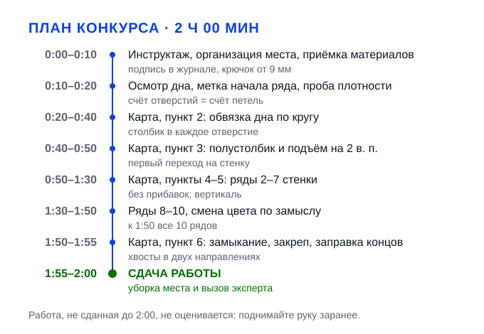
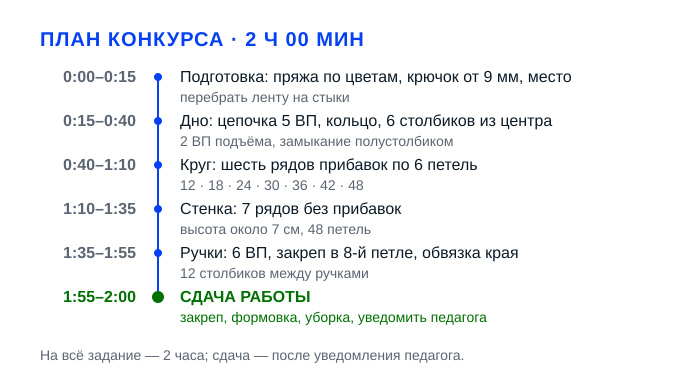
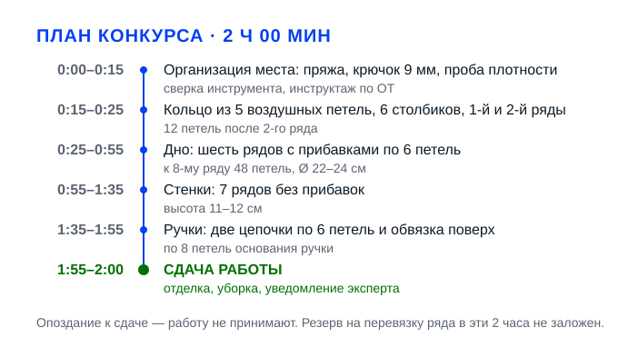

Вязание из трикотажной пряжи (ФВ)
Задания ниже — официальные файлы «Абилимпикс» (источник: abilympics-russia.ru), разложенные по категориям. Решения написаны по тексту задания, регламенту и критериям оценки; в них указано, что именно проверяет эксперт.
Школьник
14–16 лет, базовый уровень заданияВ официальном файле категории не разделены отдельными разделами — приводим задание целиком; различия по категориям смотрите в таблице модулей.
Пошаговое решение
Два часа, деревянное дно с готовыми отверстиями, трикотажная пряжа и ножницы — вот и весь набор, из которого школьнику нужно собрать декоративную корзину. Модулей с отдельными таймингами в задании нет: есть шесть пунктов последовательности и общий срок 2 часа, и внутри него вы сами решаете, сколько отдать первому кругу, а сколько — десяти рядам стенки. Логика техники простая: дно не вяжется, оно уже есть, поэтому изделие растёт от отверстий — лента протягивается в отверстие за отверстием, ряд замыкается полустолбиком, подъём делается на двух воздушных петлях, и дальше стенка идёт столбиками в каждую петлю предыдущего ряда. Крючок здесь толстый, от 9 мм, а то и вовсе пальцы: тонкий инструмент с трикотажной лентой не работает и даёт морщинистое полотно. Решение идёт в порядке карты задания: от инструктажа и раскладки материалов до закрепления нити, проверки изделия и уборки места.

Задача 1. Организовать рабочее место и принять материалыЕдиное задание · 2 ч 00 мин · организация и приёмка
У школьников задание одно и целиком укладывается в два часа: связать декоративную корзину на готовом деревянном дне. Модулей с отдельными таймингами в задании нет — есть шесть пунктов последовательности и общий срок, поэтому первые пятнадцать минут здесь не потеряны, а вложены: от того, проверены ли отверстия дна, расправлена ли лента и лежит ли крючок там, куда рука идёт не глядя, зависит, успеете ли вы выйти на десятый ряд к последним сорока минутам. Ни одной петли в этом блоке ещё не связано, но именно он решает, будут ли остальные ряды ровными.
Действие 1.1. Пройти инструктаж и осмотреть место
Шаг 1.1.1
Садимся за свой стол, слушаем вводный инструктаж до конца и ставим подпись в журнале: по разделу 11 конкурсного задания к работе допускаются только те, кто прошёл обучение безопасным приёмам труда и инструктаж по охране труда и пожарной безопасности. Сразу выясняем три адреса — аптечка, огнетушитель, стол главного эксперта — и один порядок: руку поднимаем молча, через площадку не кричим. Отдельно уточняем, кто из тьюторов или волонтёров закреплён за вашим местом: по пункту 11.1.7 он положен каждому участнику.
Инструктаж — единственные минуты в задании, которые нельзя наверстать: без подписи участника к старту не допускают, и два часа пройдут без вас. Тьютор нужен не для того, чтобы вязать вместо вас, а чтобы помочь с тем, что физически неудобно: подать ножницы, поднять упавший клубок, позвать эксперта. Знать это заранее важнее, чем кажется: при жёстком сроке каждая минута поиска помощи — это минута, не потраченная на ряды.
В журнале стоит ваша подпись, тьютор знает ваше место и имя, а вы можете, не вставая, показать рукой на аптечку и огнетушитель. Проверьте, что задание лежит перед вами в доступном виде — крупным шрифтом, а если нужно, с рельефно-точечным дублем.
Кивнуть и не слушать — самая дорогая экономия десяти минут: потом участник не знает, куда деть ножницы, ищет их на ощупь под изделием и теряет на этом полряда. Вторая ошибка — стесняться позвать тьютора: помощь по организационным мелочам подсказкой не считается, а вот потерянное время не вернётся.
Эксперт проверяет журнал инструктажа до старта, а в первые минуты смотрит, как участник устроился: ровно ли сидит к столу, хватает ли света, достаёт ли всё рукой без наклона. Отмечает он и то, зовёт ли участник помощь спокойно или молча борется с неудобством.
Шаг 1.1.2
Осматриваем место: стол должен быть свободен от всего, что не относится к заданию, а стул отрегулирован по высоте так, чтобы локти лежали на столе, а не висели. Свет ставим слева, если вяжете правой рукой, и справа, если левой: тень от собственной руки на трикотажной ленте мешает видеть, куда входит крючок. По разделу 10 задания освещённость на месте — не менее 300 люкс, а ширина прохода между рабочими местами — 1,5 м, так что стул, торчащий в проход, поправят, но лучше поставить его правильно сразу.
Трикотажная пряжа — плоская лента шириной 7–9 мм, и в тени сгибы петли сливаются: не видно, захватили вы обе нити столбика или только одну. При двух часах непрерывной работы посадка важнее красоты: при высоком столе и низком стуле к сороковой минуте тянет плечо, и темп падает ровно тогда, когда половина работы ещё впереди. Свет и посадка — это способ дожить до последнего ряда с ровными петлями.
Сядьте и положите руки на стол: предплечья лежат целиком, спина прямая, стопы на полу. Лента под крючком видна без наклона головы, тени от руки на рабочей зоне нет. Стул не выходит в проход, а край стола не давит в предплечье.
Работать в полутьме у окна, где солнце бьёт сбоку: через полчаса глаза устают, петли начинают «плыть», и ряд приходится выравнивать распуская. Вторая ошибка — сдвинуть стул в проход ради удобства: это нарушение требований к рабочему месту, и эксперт фиксирует его раньше, чем вы свяжете первый ряд.
В первые минуты эксперт смотрит на посадку и свет: не наклонена ли голова, не тянется ли участник к дальнему краю стола. То же он проверяет в конце, когда место убирают: возвращено ли всё на свои позиции.
Шаг 1.1.3
Раскладываем по зонам: пряжу — слева от дна, если вяжете правой рукой, крючок — справа на столе, ножницы — справа и ближе к себе, но не под локтем, дно — по центру перед грудью. Обрезки ленты сразу складываем в отдельную крышку или пакет: трикотаж даёт короткие обрезки, которые липнут к столу и попадают в петли. Клубок ставим так, чтобы лента шла вверх, а не с края стола, иначе она будет тянуться вниз и вытягиваться.
По разделу 9 задания на участника даётся один стол, один стул, трикотажная пряжа и ножницы; лишнего на столе нет, и каждая вещь должна лежать там, куда рука идёт не глядя. Разложенные зоны экономят не меньше пяти минут за конкурс: вы не ищете ножницы в конце ряда и не тянетесь через изделие за клубком, рискуя зацепить крючком готовые петли. Порядок на столе — часть впечатления: эксперт видит организованного участника, а не груду материалов.
Руки доходят до крючка, ножниц и пряжи без поворота корпуса. На столе нет посторонних предметов, обрезки не разбросаны, клубок не свисает с края. Дно лежит центром перед вами и не сдвигается, если надавить на него ладонью.
Положить ножницы под изделие «чтобы не мешали»: в конце ряда их ищут на ощупь, крючок уже в петле, и любое неловкое движение растягивает последний столбик. Вторая ошибка — оставить клубок на коленях: лента трётся о ткань, вытягивается и идёт в работу неровной.
Эксперт проходит по местам до старта и смотрит на раскладку: не лежит ли пряжа на полу, есть ли куда складывать обрезки, свободен ли край стола. Аккуратно разложенное место он запоминает, чтобы сравнить с ним состояние стола в конце.
Действие 1.2. Осмотреть деревянное дно
Шаг 1.2.1
Берём деревянное дно и осматриваем его целиком: диаметр, толщина, кромка, все отверстия по кругу. Проводим пальцем по каждому отверстию — не осталось ли заусенца или щепки, через которые лента порвётся на первом же столбике. Считаем отверстия и запоминаем число: оно равно числу петель первого круга, и по нему дальше удобно проверять, не сбились ли вы, когда ряд идёт по кругу и начала уже не видно.
Дно с подготовленными отверстиями — готовая основа задания, но именно отверстие определяет, как ляжет первый ряд. Заусенец внутри канала режет трикотажную ленту как пила: пряжа рвётся у самого края, и остаётся либо вязать узел на виду, либо распускать весь круг. Число отверстий — ваш счётчик: если петель окажется меньше, стенка соберётся в складку, а по пункту 1.1 задания изделие не должно «морщиться».
Все отверстия прощупаны, заусенцев нет или они сняты наждачной бумагой, которую дал эксперт. Отверстия идут по кругу с равным шагом, дно не расслоено, трещин у кромки нет. Число отверстий записано или запомнено точно — назовите его вслух, так надёжнее.
Начать вязать, не проверив отверстия: первый же рывок рвёт ленту, на перевязку уходит пять минут, а на лицевой стороне появляется узел. Вторая ошибка — не посчитать отверстия: ряд «не сходится», и выясняется это на третьем круге, когда распускать уже дорого по времени.
Эксперт смотрит, осмотрел ли участник дно до начала работы и как с ним обращается: не скребёт крючком по кромке, не гнёт основу. Отмечает он и то, считает ли участник петли по ходу, а не после того, как ряд уже разъехался.
Шаг 1.2.2
Кладём дно лицевой стороной вверх и определяем, где будет начало ряда: обычно это отверстие, ближайшее к вам, чуть левее центра. Отмечаем его ниткой-маркером или сдвигаем к нему ножницы, чтобы через сорок минут не искать начало на ощупь. Если кромка дна шершавая, прокладываем по ней тонкую полоску ленты — она закроет стык дерева и вязания и не даст первому ряду «пилить» основу.
Начало ряда — самая нужная точка на всей корзине: по кругу из десяти рядов без метки невозможно понять, где вы замкнули предыдущий ряд и сколько ещё осталось до конца текущего. Отсутствие метки — причина «спирали»: ряды смещаются, и высота стенки с одной стороны оказывается больше, чем с другой. Прокладка по кромке нужна и потому, что дерево и пряжа работают по-разному, и жёсткая кромка быстрее всего перетирает ленту.
Метка стоит на выбранном отверстии и видна, не закрывая работу. Кромка дна закрыта или хотя бы осмотрена, дно лежит ровно и не качается на столе. Вы можете показать пальцем, откуда пойдёт первый столбик.
Не ставить метку вообще, полагаясь на память: к пятому ряду начало теряется, и ряд замыкается не там, где нужно, — на стенке появляется заметная ступенька. Вторая ошибка — ставить метку булавкой сбоку, где она цепляет ленту и выдёргивает петли.
Эксперт проверяет, есть ли на работе метка начала ряда: это простой признак того, что участник умеет вязать по кругу, а не «как получится». Отмечает он и обработку кромки дна — по ней видно, думал ли участник о том, как изделие будет выглядеть изнутри.
Действие 1.3. Подготовить пряжу и крючок
Шаг 1.3.1
Раскладываем пряжу по цветам в том порядке, в каком пойдут ряды, и сразу решаем, где будет смена цвета. Конец ленты обрезаем ножницами под углом, а не рвём: рваный срез осыпается и потом вылезает из полотна ворсом. Помятую ленту расправляем руками от клубка к концу — трикотаж распрямляется, если тянуть его вдоль, а не поперёк. Пряжу разных цветов держим раздельно, чтобы в работе не оказались два цвета на одном крючке.
В задании пряжа идёт «по цветам», то есть цвет — часть композиции корзины, и от того, где начнётся новый цвет, зависит, будет ли видна ступенька на стенке. Рваный срез — типичная причина «лохматых» корзин: тонкие нити трикотажа выбиваются из столбиков и на готовом изделии читаются как брак. Ровная, расправленная лента даёт ровную петлю, а ровная петля — это и есть аккуратность, за которую смотрят в первую очередь.
Лента лежит без узлов и перекрутов, срез ровный, концы не осыпаются. Вы можете сказать, каким цветом вяжете первый круг и на каком ряду войдёт следующий. Клубок не тянет: при вытягивании лента идёт свободно и не закручивается жгутом.
Оборвать ленту руками «так быстрее»: срез получается косым и рваным, кончик выбивается из первого же столбика, и убрать его незаметно уже не получится. Вторая ошибка — тянуть ленту поперёк: трикотаж растягивается в ширину, и полотно идёт волной.
Эксперт смотрит на подготовку пряжи: ровные ли срезы, нет ли узлов на видных местах, продуман ли порядок цветов. К этой же оценке относится и то, насколько экономно участник расходует ленту: обрезков в конце не должно быть много.
Шаг 1.3.2
Проверяем крючок: по пункту 1.1 задания он толстый, начиная с 9 мм, а под ленту шириной 8–9 мм берут 9–12 мм. Ведём крючок по бороздке ленты — головка должна проходить свободно, без раздвигания волокон, иначе петли выйдут затянутыми и стенка получится жёсткой. Если крючка нет, работаем пальцами: техника задания это допускает, но петли тогда делаем крупнее и следим, чтобы они были одинаковыми по всей высоте.
Тонкий крючок в трикотажной пряже — главная причина морщинистой корзины: им невозможно вытянуть петлю нужного размера, полотно стягивается, и дно идёт волной. Пункт 1.1 задания прямо говорит и о пальцах, и о крючке от 9 мм, и о прибавлении петель, чтобы изделие не морщилось. Толстый инструмент — не удобство, а технологическое требование: он задаёт высоту столбика, а значит, и высоту всех десяти рядов.
Крючок входит в петлю свободно, головка не цепляет ленту. Первые две-три пробные петли получаются одинаковыми по высоте. Если вяжете пальцами, петли не затянуты и не разъезжаются в стороны. Проверьте крючок и на изгиб: погнутая головка цепляет ленту и рвёт волокна.
Взять привычный тонкий крючок 4–5 мм: лента не проходит, петли затягиваются, полотно стягивается к центру, и корзина приобретает форму миски. Исправляется это только распусканием, то есть полной потерей сорока минут работы.
Эксперт проверяет инструмент до старта и смотрит на первые петли: соответствуют ли они толщине пряжи. Тонкий крючок при толстой ленте он отмечает как ошибку выбора инструмента, даже если корзина в итоге получилась.
Шаг 1.3.3
Делаем пробную цепочку: набираем 6–8 воздушных петель и провязываем обратно столбиками без накида, чтобы понять свою плотность. Смотрим на пробу при дневном свете: петли должны быть одинаковыми по высоте, столбики — стоять прямо, без наклона, а полотно — лежать плоско, не заворачиваясь в трубочку. Пробу не распускаем, пока не свяжете первый круг: по ней видно, тот ли размер петли вы держите.
Проба стоит двух минут и спасает первый круг: именно на нём видно, совпадает ли ваша петля с толщиной ленты. Если проба заворачивается, крючок тонок или петля затянута; если лежит волной — наоборот, петля слишком свободная. По заданию изделие не должно морщиться, и проверять это лучше на шести петлях, чем на связанном наполовину дне.
Проба лежит плоско, петли ровные, высота столбика одинаковая по всей длине. Полотно не закручивается и не топорщится. Вы понимаете, с какой силой тянете ленту, и можете повторить это движение. Посмотрите на пробу и с изнанки: там не должно быть протяжек длиннее одного столбика.
Пропустить пробу и начать сразу с дна: первые петли всегда идут свободнее, и разница в плотности потом видна полосой в первом круге. Вторая ошибка — тянуть ленту изо всех сил, чтобы петля «сидела плотно»: полотно встаёт колом, а крючок рвёт волокна.
Эксперт может попросить показать пробу и спрашивает, почему выбран такой размер петли. Ответ «потому что так лента не морщится» — правильный; ответ «не знаю, как получилось» показывает, что участник не управляет плотностью.
Задача 2. Обвязать деревянное дно по кругуПункт 2 карты · первый круг в отверстиях
Второй пункт карты звучит коротко: в отверстие дна протягиваем пряжу, поочерёдно провязывая петли по кругу. На деле здесь решается всё дальнейшее — число петель, ровность края и то, будет ли стенка стоять вертикально или пойдёт волной. Дно уже жёсткое, оно не даёт полотну сесть или растянуться, поэтому первый круг получается самым «честным»: любая неровность петли на дереве видна сразу и ничем не маскируется. Работаем медленно и одинаково, а не быстро и по-разному: один затянутый столбик в этом круге потом тянет за собой весь ряд.
Действие 2.1. Закрепить первую петлю в отверстии
Шаг 2.1.1
Берём конец ленты, складываем его петлёй и проводим крючок в выбранное отверстие с лицевой стороны на изнанку. Захватываем ленту и вытягиваем петлю обратно на себя — получается первая петля на крючке. Хвост оставляем 8–10 см: его потом спрячем в работу, и короткий хвост для этого не годится, он выскочит из первого же столбика. Держим хвост на изнанке, а не поверх дна: иначе он попадёт под столбики и даст утолщение у самого края.
Первый закреп — точка, от которой держится весь круг: если он слабый, край дна будет отходить от дерева и первый ряд пойдёт «лестницей». Хвост в 8–10 см нужен не для красоты, а потому что трикотажная лента выскальзывает: короткий кончик невозможно ни заправить, ни закрепить, и он вылезает после первой же стирки или примерки. Крепкий закреп — это ещё и ровное натяжение всех последующих петель.
Петля сидит на крючке, не проворачивается, край дна не отходит от дерева при лёгком потягивании за хвост. Хвост длиной около 8–10 см лежит на изнанке, не мешая работе. Проверьте и то, что крючок проходит в отверстие свободно, не царапая дерево: заусенец порвёт ленту на третьей петле.
Закрепить нить узлом на кромке дна: узел виден с изнанки и утолщает край, из-за чего первый ряд пойдёт с наплывом. Вторая ошибка — оставить хвост 2–3 см: спрятать его некуда, и он выбивается из первого столбика уже к третьему ряду.
Эксперт смотрит на закреп вблизи, когда подходит к столу в начале работы: видно ли узел, не болтается ли край, как лежит хвост. Именно здесь понятно, вязал ли участник раньше что-то кроме учебных цепочек.
Шаг 2.1.2
Держим крючок так, как удобно вашей руке: сверху, как карандаш, или снизу, как нож, — правильна та хватка, при которой кисть не зажата и запястье не выворачивается. Рабочую ленту перекидываем через указательный палец левой руки и слегка придерживаем средним: так натяжение остаётся одинаковым от петли к петле. Сила натяжения — примерно та, при которой лента не провисает, но и не режет палец.
Трикотажная лента тяжёлая и скользкая, и без постоянного натяжения петли выходят разного размера: одна круглая, другая вытянутая. На двух часах работы кисть — самое уязвимое место, и зажатая хватка приводит к тому, что к шестому ряду темп падает вдвое. Одинаковое натяжение ленты — это и есть то, что в готовом изделии выглядит как «ровное вязание», а не как заслуга характера.
Лента идёт от клубка с одинаковым усилием, петли на крючке не провисают и не затянуты. Кисть не устала за первые пять минут, запястье прямое. Проверьте, что клубок стоит на столе, а не висит на весу. Натяжение на трёх петлях подряд должно быть одинаковым — это и есть признак, что рука нашла рабочее усилие.
Держать клубок в руке или на коленях: вес ленты тянет петлю, и она выходит крупнее остальных — на дне это видно как разное расстояние между столбиками. Вторая ошибка — менять хватку каждые пять минут: плотность «гуляет» вслед за хваткой.
Эксперт смотрит на руки в первые минуты: держит ли участник крючок устойчиво, придерживает ли ленту, не поднимает ли плечо. По хватке он довольно точно определяет, сколько человек уже вязал до конкурса.
Шаг 2.1.3
Проверяем, что петля вышла из отверстия, а не из-под кромки: крючок должен пройти сквозь канал, а лента — обхватить край дерева. Если петля легла мимо отверстия, сразу распускаем и повторяем: первый круг исправить потом невозможно, не разбирая всю корзину. Убеждаемся, что лента не перекручена: при перекруте столбик получается узким и жёстким, и это видно на лицевой стороне как «шишечка».
Отверстие — единственная точка крепления первого ряда, и петля, лёгшая рядом с ним, а не в него, держится только за счёт соседей: при первой же нагрузке край просядет. Перекрут ленты в трикотаже заметен сильнее, чем в обычной пряже, потому что лента плоская: перекрученный столбик выглядит как узел и сбивает ритм всего края. Проверка на этом шаге стоит тридцати секунд, распускание первого круга — двадцати минут.
Петля выходит точно из канала отверстия, лента лежит плоско, без перекрута. Потяните петлю вверх: она держится за дерево, а не за соседнюю петлю. Лицевая сторона столбика ровная, без утолщений. С изнанки петля должна охватывать край дерева, а не лежать рядом с ним.
Оставить перекрут «потом поправлю»: в трикотаже петля фиксируется сразу, и поправить её можно только распустив. Вторая ошибка — вязать через край дна, а не в отверстие: край получается волнистым и первый ряд стоит косо.
Эксперт проверяет первый круг на просвет и на ощупь: проходят ли петли именно через отверстия, нет ли перекрутов. Это одна из самых заметных ошибок начального этапа, потому что она видна с изнанки, а изнанку на конкурсе тоже смотрят.
Действие 2.2. Провязать петли в каждое отверстие
Шаг 2.2.1
Двигаемся по кругу в одном направлении — по часовой стрелке, если вяжете правой рукой: так ряд не перекрутится и метка начала останется слева. В каждое следующее отверстие вводим крючок, захватываем ленту и вытягиваем петлю, провязывая столбик без накида через петлю на крючке. Столбики кладём один к одному, не пропуская отверстий и не вводя крючок дважды в одно и то же.
Направление по кругу — не формальность: если начать в одну сторону, а потом по привычке развернуться, ряд пойдёт навстречу сам себе и замкнуть его будет нечем. Число столбиков должно точно совпасть с числом отверстий, потому что дальше стенка вяжется в каждую петлю предыдущего ряда: лишняя петля даёт волну, недостающая — стяжку, а по заданию изделие не должно морщиться.
Столбики идут по кругу ровной полосой, каждый — из своего отверстия. На лицевой стороне видна ровная цепочка, на изнанке — аккуратные поперечные полоски. Число столбиков равно числу отверстий: пересчитайте, пока круг не замкнут.
Пропустить отверстие и не заметить: круг замыкается с нехваткой петли, и на этом месте стенка потом стягивается воронкой. Вторая ошибка — провязать два столбика в одно отверстие «для плотности»: край вспучивается, и первый ряд идёт волной.
Эксперт пересчитывает петли первого круга и сверяет с отверстиями — это делается быстро и без приборов. Пропуск или лишняя петля видны как неровность края ещё до того, как связан второй ряд.
Шаг 2.2.2
Тянем петлю до одной и той же высоты: высота столбика при крючке 9 мм — примерно 1,2–1,5 см, и держать её надо одинаковой по всему кругу. Контролируем по крючку: вытянутая петля должна быть чуть выше головки, не больше. Провязывая, придерживаем работу большим пальцем у самого столбика — так петля не «уезжает» вверх. Если лента начала расслаиваться у крючка, значит, вы тянете её слишком сильно и подрезаете волокна.
Высота столбика — это и есть плотность: при разной высоте первый ряд получается с «горками», и дальше десять рядов будут повторять эту неровность, потому что каждый следующий ряд вяжется в петли предыдущего. Придерживать работу у столбика нужно, потому что лента скользит: без пальца петля вытягивается на длину крючка и потом оседает, и разница в 2–3 мм на десяти рядах превращается в сантиметр перекоса.
Все столбики первого круга одинаковой высоты — проверьте, положив работу на стол: край лежит ровно, без бугров и провалов. Петли не разъезжаются, если потянуть полотно в стороны: оно пружинит, но не деформируется.
Вязать «на глаз», не придерживая работу: петли выходят то крупные, то мелкие, и край дна получается волнистым. Вторая ошибка — тянуть петлю вверх изо всех сил: столбик выходит высоким и рыхлым, и в него потом плохо входит крючок следующего ряда.
Эксперт смотрит на край дна сбоку, на уровне стола: ровная ли линия, нет ли «горок». Это самый быстрый способ оценить плотность, и он не требует разбирать работу.
Шаг 2.2.3
Следим за хвостом и рабочей нитью: хвост от первого закрепа укладываем вдоль края и прихватываем его столбиками — тогда он спрячется сам, без отдельной иглы. Рабочая лента идёт поверх работы, а не под ней, иначе она цепляется за дерево и вытягивается рыхлыми петлями. Если лента начала крутиться в жгут — расправляем её пальцами и продолжаем. Хвост укладываем по направлению вязания, иначе он будет выходить из столбиков в обратную сторону.
Хвост, прихваченный столбиками, — это единственный способ спрятать конец без иглы и без узла: в трикотаже толстая лента не проходит в ушко, а узел на виду считается дефектом. Рабочая лента поверх работы нужна потому, что дерево шершавое: под работой лента трётся о кромку и вытягивается. Расправленный жгут даёт ровную петлю, скрученный — узкую и жёсткую.
Хвост закрыт столбиками и не виден с лицевой стороны. Рабочая лента не цепляется за кромку дна, лента не перекручена. На изнанке нет протяжек, за которые можно зацепиться пальцем. Посмотрите на изнанку при боковом свете: протяжки и утолщения видны как тени, которых нет на лицевой стороне.
Оставить хвост висеть: он либо вылезет позже, либо будет путаться в работе и цепляться за крючок. Вторая ошибка — тянуть рабочую ленту под дном: она трётся о дерево, лохматится, и ворс выходит на лицевую сторону.
Эксперт осматривает изнанку первого круга, когда берёт работу в руки: нет ли висящих концов и протяжек. Изнанка в этом задании оценивается наравне с лицом, потому что корзину видно со всех сторон.
Шаг 2.2.4
К середине круга проверяем себя: работа должна лежать на столе плоско, как тарелка, а не сворачиваться в чашу. Если край пошёл волной, значит, петли слишком свободные или их больше, чем отверстий; если работа стягивается в купол — петли затянуты. В первом случае распускаем последние 5–6 столбиков и вяжем плотнее, во втором — ослабляем натяжение ленты.
Первый круг — единственное место, где ошибку плотности ещё дёшево исправить: дальше каждый ряд ложится на предыдущий, и волна умножается. Плоско лежащий круг означает, что число петель совпадает с числом отверстий и высота столбиков одинаковая. Именно по этому признаку в задании проверяется, что изделие не морщится: дно должно оставаться дном, а не превращаться в миску.
Положите работу на стол и нажмите ладонью: она лежит всей поверхностью, без зазора под серединой и без волн по краю. Диаметр круга равен диаметру дна плюс две высоты столбика, то есть примерно на 2–3 см больше.
Продолжать вязать волну, надеясь, что «разгладится»: не разгладится, потому что каждый следующий ряд повторяет форму предыдущего. Вторая ошибка — бороться с волной, затягивая петли сильнее: круг садится в купол и корзина перестаёт стоять на дне.
Эксперт кладёт работу на стол и смотрит на просвет между дном и поверхностью стола. Зазор или волна — прямой признак ошибки плотности, и по нему он сразу видит, контролировал ли участник свою петлю.
Действие 2.3. Замкнуть круг и проверить край
Шаг 2.3.1
Дойдя до метки начала, вводим крючок в первую петлю круга и провязываем полустолбик: захватываем ленту и протягиваем её сразу через обе петли на крючке, без накида. Полустолбик не даёт высоты, он только соединяет концы ряда, поэтому круг становится замкнутым, а не спиральным. Затягиваем соединительную петлю ровно настолько, чтобы она сравнялась с соседними по плотности.
Полустолбик — это замок ряда, и от него зависит, будет ли корзина иметь ровные, а не косые ряды: без замыкания каждый следующий ряд начинается на петлю дальше, и по стенке идёт заметная спираль. Пункт 3 карты прямо требует завершать ряд полустолбиком, и это же правило действует до последнего ряда, включая закрытие. Затянутый замок стягивает круг и оставляет заметную ямку на стыке.
Круг замкнут: первая и последняя петли соединены, метка начала совпала со стыком. Стык не выделяется высотой и не стягивает край. Работа по-прежнему лежит плоско и не пошла спиралью. Потяните работу в стороны: замкнутый круг не должен расходиться в месте стыка.
Провязать вместо полустолбика обычный столбик: стык выступает бугром, и на стенке потом идёт вертикальный рубец. Вторая ошибка — затянуть соединительную петлю: круг садится, край дна идёт мелкой волной, и это уже не исправить без распускания.
Эксперт ищет стык ряда глазами: если он находится быстро, значит, сделан грубо. Аккуратный стык он проверяет на ощупь — он не должен быть ни выше, ни плотнее остальных петель.
Шаг 2.3.2
Пересчитываем петли круга и сверяем с числом отверстий: расхождение хотя бы в одну петлю означает, что где-то пропуск или лишний столбик. Считаем, двигаясь от метки и отмечая каждые десять петель вслух или пальцем. Если число не сошлось, находим место ошибки по ширине промежутков между столбиками — там, где пропуск, промежуток вдвое шире. Если сбились со счёта, начните от метки заново, а не с середины круга.
Счёт после первого круга — последняя дешёвая проверка: дальше петли уходят под следующий ряд, и найти пропуск можно только распустив два-три ряда. Ровные промежутки между столбиками — признак того, что работа распределена по дну равномерно; при пропуске или лишней петле промежутки разные, и стенка из этого места пойдёт с перекосом. Считать удобно вслух: на конкурсе это не запрещено и помогает не сбиться.
Число петель точно равно числу отверстий. Промежутки между столбиками одинаковые по всему кругу. Метка начала стоит на стыке, а не сбоку от него. Пересчитайте петли дважды — второй раз в обратную сторону, от метки против движения ряда: так пропуск находится быстрее.
Считать «примерно» и успокоиться: на десятом ряду перекос в одну петлю превращается в заметную разницу высоты стенки. Вторая ошибка — искать ошибку, распуская круг целиком, вместо того чтобы найти широкий промежуток и исправить только его.
Эксперт пересчитывает петли в первом круге почти всегда — это самый быстрый способ понять, справится ли участник с десятью рядами. Расхождение в счёте он фиксирует как технологическую ошибку.
Шаг 2.3.3
Осматриваем край дна по кругу: дерево не должно проглядывать между столбиками, а лента не должна ложиться на кромку с натягом, который её расплющивает. Проводим пальцем по стыку дерева и вязания — он должен быть ровным, без ступенек. Если где-то виден просвет, добавляем столбик в это отверстие, но только если счёт уже проверен и позволяет. Просветы ищем, наклонив работу к свету: на просвет видно даже щель в миллиметр.
Стык дерева и вязания — самое нагруженное место корзины: именно здесь изделие держится за основу, и именно здесь чаще всего появляется щель, в которую видно дно. Ровный стык нужен и с точки зрения внешнего вида: корзина оценивается целиком, и просвет у основания читается как небрежность. Натянутая на кромку лента расплющивается и теряет вид уже к концу работы.
Край ровный на ощупь, дерево не проглядывает, лента не расплющена. При наклоне работы к свету просветов между столбиками и кромкой нет. Дно не шатается внутри обвязки. Поставьте дно на стол и нажмите на край: обвязка не должна отходить от дерева.
Оставить щель «снизу не видно»: корзину на конкурсе переворачивают и смотрят дно. Вторая ошибка — натянуть ленту так, что она ложится тонкой полоской: край выглядит жидким, а столбики становятся ниже остальных.
Эксперт переворачивает работу и осматривает основание — это стандартный приём на конкурсах по вязанию. Щель между деревом и первым рядом он отмечает как дефект крепления, а не как мелочь.
Задача 3. Замкнуть ряд и подняться на следующийПункт 3 карты · подъём на две воздушные петли
Третий пункт карты — переход с дна на стенку: ряд замыкается полустолбиком, а подъём выполняется двумя воздушными петлями. Технически это две петли, но именно они задают высоту всей стенки и ровность её края: при подъёме в одну петлю стенка идёт ниже и с наклоном внутрь, при подъёме в три — край заворачивается наружу. Этот блок короткий, но повторяется девять раз, поэтому ошибка здесь умножается на девять, а не остаётся одной погрешностью.
Действие 3.1. Соединить ряд полустолбиком
Шаг 3.1.1
Вводим крючок в первую петлю ряда — ту самую, что отмечена меткой начала, — и вяжем соединительный полустолбик: лента протягивается через петлю ряда и через петлю на крючке одновременно. Крючок держим вертикально, чтобы не растянуть входное отверстие. После соединения круг сомкнут, и работа готова к подъёму. Если петля на крючке перекрутилась, сначала расправьте её, а потом вводите крючок в первую петлю ряда.
Соединение делается в первую петлю, а не в последнюю и не в соединительную предыдущего ряда: ошибка в один столбик сдвигает начало и превращает ровную стенку в спираль. Полустолбик не создаёт высоты, поэтому после него круг остаётся плоским — это важно, потому что дальше вы поднимаетесь вверх, а не наращиваете ряд. Крючок вертикально — чтобы не растянуть петлю, в которую он входит: растянутая входная петля потом выглядит как дырка на стыке.
Круг сомкнут без зазора, входная петля не растянута, метка начала совпадает со стыком. Работа лежит плоско, край круга ровный. Полустолбик не выделяется высотой среди соседей. Проверьте стык на просвет: между первой и последней петлёй не должно быть щели.
Соединять в последнюю петлю ряда: круг остаётся разомкнутым, и каждый следующий ряд начинается на петлю дальше — стенка идёт спиралью. Вторая ошибка — растянуть входную петлю крючком: на стыке появляется отверстие, которое потом видно на лицевой стороне.
Эксперт проверяет стык в каждом третьем ряду, когда обходит участников: ровный стык говорит о том, что человек понимает круговое вязание, а не повторяет движения.
Шаг 3.1.2
Затягиваем соединительную петлю так, чтобы она сравнялась по плотности с остальными: не до звона, а до состояния «как соседние». Если стык получился заметно туже, слегка ослабляем его, потянув работу в стороны. После этого сразу переходим к подъёму, не оставляя соединение «на потом»: незакрытый ряд распускается от любого движения клубка. Следите, чтобы рабочая лента при этом не перекрутилась вокруг крючка.
Плотность стыка — то, по чему видно качество кругового вязания: затянутый стык даёт вертикальный рубец по всей стенке, потому что каждый ряд приходит в одну и ту же точку. Ослабить стык проще сразу, чем потом: трикотаж фиксирует форму быстро. И переходить к подъёму без пауз нужно потому, что край из десяти петель без замка легко теряет петлю, а вместе с ней и весь ряд.
Стык на ощупь не отличается от соседних петель. Ряд закрыт, метка на месте. При растягивании работы в стороны стык не расходится и не образует дырки. Проверьте, что стык не провалился вниз: он должен стоять на одной линии с краем ряда, а не ниже его.
Затянуть стык «чтобы держалось»: по стенке идёт рубец, который на готовой корзине читается как шов. Вторая ошибка — оставить соединение незатянутым: в стыке появляется петля-дырка, и в неё проваливается следующий ряд.
Эксперт смотрит на стенку сбоку, на уровне глаз: рубец от стыка виден как тёмная вертикальная линия. Если она есть, он проверяет, не затянуты ли соединения.
Действие 3.2. Выполнить подъём на две воздушные петли
Шаг 3.2.1
Набираем две воздушные петли: захватываем ленту и протягиваем её через петлю на крючке дважды. Первая петля даёт высоту, вторая — рабочую петлю для первого столбика нового ряда. Держим их одинакового размера с будущими столбиками, не крупнее: подъём — это служебная часть, но именно он виден на краю как переход. Если вторая петля вышла крупнее первой, подтяните её за рабочую ленту сразу, пока петля не легла в работу.
Две воздушные петли — требование пункта 3 карты, и число здесь не случайное: при столбиках без накида из толстой ленты высота одного столбика примерно равна двум воздушным петлям. Одна петля — и первый столбик ряда будет ниже остальных, край пойдёт с наклоном внутрь и стенка сузится кверху. Три петли — край поднимется и завернётся наружу, а корзина потеряет форму ведра.
На крючке после подъёма две петли, обе одинакового размера с будущим столбиком. Край ряда поднялся на высоту одного столбика, без перекоса в ту или другую сторону. Сравните высоту подъёма с высотой столбика предыдущего ряда: они должны совпадать.
Сделать одну петлю подъёма «чтобы не было дырки»: первый столбик выходит ниже, и на каждом стыке рядов появляется ступенька. Вторая ошибка — набрать три-четыре петли: край заворачивается наружу, и корзина расширяется кверху, как чаша.
Эксперт считает петли подъёма, когда смотрит на край работы: это делается за секунду и сразу показывает, знает ли участник технологию. Отклонение от двух петель он отмечает как нарушение пункта 3 карты.
Шаг 3.2.2
Первый столбик нового ряда вяжем в ту же петлю, из которой вышли петли подъёма, а не в следующую: иначе на стыке образуется пропуск, и по стенке пойдёт косая дорожка. Крючок вводим под обе нити петли предыдущего ряда — под переднюю и заднюю половинки, — тогда столбик сидит ровно и не перекашивается. Первый столбик провязываем полностью, до конца, и только потом двигаемся в следующую петлю.
Вход в ту же петлю, откуда сделан подъём, закрывает стык: без этого на каждом ряду остаётся дыра, и десять дыр по вертикали — это уже видимый дефект. Вводить крючок под обе нити нужно потому, что трикотажная петля состоит из двух половинок: если брать только переднюю, столбик ложится с наклоном и стенка идёт винтом. Это же правило обеспечивает прочность — под обе нити столбик держит нагрузку вдвое лучше.
Первый столбик ряда стоит прямо над стыком, пропуска нет. Край ровный по высоте, без ямок на переходах. При растягивании работы в месте стыка не открывается отверстие. Проверьте крючком: он должен входить под обе нити легко, не расслаивая петлю на две половинки.
Начать ряд со следующей петли: на стыке появляется дырка, и первый столбик «уезжает» в сторону. Вторая ошибка — вводить крючок только под переднюю половинку: столбики наклоняются, и через пять рядов стенка заметно ведёт винтом.
Эксперт смотрит на вертикаль переходов: ровная ли линия стыка, нет ли дырок. Именно по стыку он чаще всего определяет аккуратность всей работы. Он делает это на втором-третьем ряду, когда стык уже читается.
Шаг 3.2.3
Проверяем переход на ощупь и на глаз: проведите пальцем по краю — он должен быть одинаковой высоты по всему кругу, без ступеньки на месте подъёма. Посмотрите на работу сбоку, на уровне стола: линия края должна быть горизонтальной. Если подъём вышел крупнее столбиков, аккуратно подтяните его за рабочую ленту, пока петли ещё не зафиксировались. На стол ставим работу каждый раз, когда заканчиваем ряд: только так видна настоящая геометрия.
Горизонтальный край — главный визуальный признак ровной стенки, и проверять его нужно на каждом переходе, потому что дальше исправлять придётся десять рядов сразу. Подтянуть подъём можно только сразу: трикотажная лента фиксирует форму за несколько петель, потом петля уже «встала». Ровный край важен и практически: по нему потом считают ряды, и ступенька сбивает счёт.
Край горизонтальный, подъём не выделяется высотой, ступеньки на стыке нет. Ряды видны как ровные горизонтальные полосы, а не как спираль. Проверьте высоту края в четырёх точках круга — у метки, напротив неё и с двух боков: все четыре должны совпасть.
Оставить подъём крупнее столбиков: на краю появляется «ушко», которое потом не спрячешь. Вторая ошибка — проверять край, держа работу на весу: под собственным весом трикотаж вытягивается и неровность выглядит иначе, чем на столе.
Эксперт кладёт работу на стол и смотрит на линию края сбоку: это самая честная проверка геометрии. Ступенька на подъёме видна сразу и говорит о небрежности в переходах между рядами.
Задача 4. Связать стенку: десять рядов по кругуПункты 4–5 карты · основная работа
Главный блок задания: по кругу, в каждую петлю предыдущего ряда, вытягивая нить, вяжем столбики и делаем так десять рядов. Именно здесь проходит большая часть двух часов, и именно здесь определяется, будет ли корзина ровной: число петель уже задано дном, поэтому стенка растёт вверх без прибавок, а вся борьба идёт за одинаковую высоту столбика и за ровный стык. Десять рядов при крючке 9 мм — это стенка высотой примерно 12–15 см; считайте не «сколько уже связано», а «сколько осталось», и сверяйтесь с планом времени.
Действие 4.1. Вязать столбики в каждую петлю ряда
Шаг 4.1.1
После подъёма вяжем по кругу столбики без накида: крючок вводим в следующую петлю предыдущего ряда под обе нити, захватываем ленту, вытягиваем петлю и провязываем обе петли на крючке. Двигаемся в одном направлении, не разворачивая работу: стенка вяжется по кругу, а не поворотными рядами. Каждый столбик кладём точно над столбиком предыдущего ряда, а не между ними.
Пункт 4 карты требует вязать в каждую петлю предыдущего ряда — это значит, что число петель остаётся неизменным от ряда к ряду, а стенка идёт строго вверх. Если начать пропускать петли, стенка сузится и корзина станет похожа на вазу; если вязать по два столбика в петлю — пойдёт расширение и волна. Ровные вертикальные дорожки из столбиков — это и есть то, что в готовом изделии выглядит как аккуратная, крепкая стенка.
Столбики идут ровными вертикальными дорожками — их видно, если посмотреть на стенку сбоку. Число петель в ряду не изменилось по сравнению с первым кругом. Полотно поднимается вверх, а не закручивается внутрь или наружу.
Пропускать петли, чтобы «быстрее закрыть ряд»: стенка стягивается, и на ней появляются косые дорожки — исправить это можно только распустив несколько рядов. Вторая ошибка — вязать между столбиками, а не в петли: полотно получается рыхлым, с дырками, и корзина теряет форму.
Эксперт смотрит на стенку сбоку и ищет вертикальные дорожки: ровные линии — признак правильного входа крючка. Сбитые дорожки он отмечает как ошибку техники, даже если изделие внешне выглядит прилично.
Шаг 4.1.2
Держим одинаковую высоту столбика: вытягиваем петлю до уровня чуть выше головки крючка и не больше. Придерживаем работу большим пальцем у основания столбика, чтобы петля не уезжала вверх. Рабочую ленту держим на указательном пальце с ровным натяжением: если она провисла — петля выйдет крупнее, если натянута как струна — столбик выйдет ниже и плотнее.
Высота столбика — единственный параметр, который участник контролирует полностью, и от него зависит вся геометрия: при разной высоте один край стенки оказывается выше другого, и корзина получается с перекошенным верхом. На десяти рядах разница в 2 мм на столбик даёт до полутора сантиметров перекоса — это видно без линейки. Трикотажная лента скользит, поэтому постоянное натяжение важнее силы рук.
Высота ряда одинаковая по всему кругу: проверьте, поставив работу на стол и сравнив край слева и справа. Столбики не «горбятся» и не проваливаются. Полотно пружинит при натяжении, но не растягивается безвозвратно.
Тянуть петлю высоко «чтобы корзина была больше»: столбики выходят рыхлыми, стенка провисает, и в неё потом плохо входит крючок — темп падает на середине работы. Вторая ошибка — вязать в конце срока быстрее и мельче: последние два ряда выходят заметно плотнее первых.
Эксперт сравнивает высоту первого и последнего рядов и смотрит на край: перекос он замечает сразу, потому что держит работу на уровне глаз. Ровная высота столбика для него важнее, чем скорость.
Шаг 4.1.3
Следим за тем, чтобы стенка стояла вертикально: при правильной плотности она поднимается вверх от края дна, а не заваливается внутрь. Если стенка пошла внутрь — петли затянуты или не хватает петель по кругу; если наружу — петли слишком свободные. В первом случае ослабляем натяжение ленты, во втором — подтягиваем его, а не начинаем вязать заново. Проверяйте вертикаль после каждого ряда, а не раз в пять рядов.
Вертикальная стенка — это то, что отличает корзину от миски, и по пункту 1.1 задания изделие не должно морщиться: стенка, ушедшая волной, читается именно как морщина. Проверять вертикаль нужно на каждом ряду, потому что отклонение накапливается: наклон в 5 градусов на третьем ряду к десятому превращается в заметный конус. Исправляется это натяжением, а не перевязыванием, — если поймать вовремя.
Поставьте работу на стол: стенка поднимается вверх, верхний край примерно повторяет диаметр дна. Если положить на стол линейку вертикально, она касается стенки по всей высоте, а не только у дна. Проверьте зазор с двух противоположных сторон: разный зазор означает, что стенка наклонена в одну сторону.
Продолжать вязать, когда стенка уже пошла конусом, надеясь на «расправится»: трикотаж держит форму, и к десятому ряду корзина будет стоять как ведро с узким верхом. Вторая ошибка — бороться с конусом, растягивая готовые ряды руками: полотно вытягивается неравномерно.
Эксперт ставит работу на стол и смотрит на силуэт: вертикальные стенки — норма, заваленные внутрь — дефект формы. Он оценивает именно силуэт, а не отдельные петли.
Действие 4.2. Решить вопрос прибавок и держать край
Шаг 4.2.1
Проверяем, нужны ли прибавки: в этой технике дно задало число петель, и при ровном первом круге стенка идёт без прибавок. Прибавка нужна только в одном случае — если стенка встаёт внутрь и стягивается: тогда в одном-двух местах круга провязываем по два столбика в одну петлю, разнося их по разным сторонам, а не подряд. Прибавления делаем редко и симметрично, чтобы не сбить рисунок дорожек.
Пункт 1.1 задания говорит о прибавлении петель, чтобы изделие не морщилось, — но прибавлять нужно по причине, а не по привычке. Лишние прибавки дают волну по краю и расширяют корзину кверху, а их отсутствие при нехватке петель даёт стяжку. Разносить прибавки по разным сторонам круга нужно потому, что две прибавки подряд образуют бугор, который видно на стенке как утолщение.
Стенка стоит вертикально без волны и без стяжки. Число петель в ряду отличается от первого круга не больше чем на две-три, и прибавки разнесены по кругу. Дорожки столбиков не сбиты в одном месте. Считайте петли в двух соседних рядах: разница должна быть только в местах прибавок.
Прибавлять в каждом ряду «на всякий случай»: корзина расширяется кверху и перестаёт держать форму. Вторая ошибка — сделать две прибавки рядом: на стенке остаётся вертикальный бугор, который нельзя замаскировать.
Эксперт считает петли в двух-трёх рядах, чтобы понять, менялось ли их число. Симметричные прибавки он считает грамотным решением, хаотичные — ошибкой техники.
Шаг 4.2.2
Держим верхний край ровным: каждый ряд заканчиваем полустолбиком в первую петлю ряда и поднимаемся на две воздушные петли — ровно так же, как в первом переходе. Край не растягиваем, не подтягиваем и не «выравниваем» руками: он должен быть ровным за счёт одинаковых петель, а не за счёт правки. Первый столбик нового ряда вяжем в ту же петлю, откуда вышел подъём.
Полустолбик и две петли подъёма на каждом из десяти рядов — это то, что делает край ровным и не даёт работе пойти спиралью. Если хотя бы в двух рядах забыть про подъём, на стенке появятся ступеньки, и они будут видны на фоне остальных восьми рядов. Правка руками портит петли: растянутая петля уже не возвращается к прежнему размеру после того, как в неё провязали следующий ряд.
Край ровный по всей окружности, стык каждого ряда на одной вертикали. Ступенек на переходах нет. Метка начала ряда по-прежнему на месте и совпадает со стыком. Проведите пальцем по кромке по всему кругу: она должна быть одинаковой высоты и плотности.
Забыть про подъём в одном ряду: край проседает на высоту столбика, и на стенке появляется заметная ступенька. Вторая ошибка — выравнивать край, растягивая его пальцами: петли деформируются, и после следующего ряда неровность возвращается ещё заметнее.
Эксперт проходит вдоль стенки и смотрит на линию стыка: она должна быть одной вертикалью от дна до верха. Ступеньки и смещения он отмечает как нарушение пункта 3 карты, повторённого в каждом ряду.
Шаг 4.2.3
Следим за кромкой сверху: последняя петля ряда не должна растягиваться, а первая не должна затягиваться. Если край пошёл «восьмёркой» или начал закручиваться в трубочку, значит, натяжение в подъёме не совпадает с натяжением столбиков — исправляем на следующем ряду, ослабив или подтянув подъём. Кромку не обрезаем и не подшиваем: она должна остаться живой.
Кромка — самая заметная часть корзины: её видно сверху, когда изделие стоит на столе, и именно по ней судят о ровности всей работы. Закрученная кромка не исправляется ничем, кроме распускания последнего ряда, поэтому контролировать её нужно по ходу. Живая, не обрезанная кромка нужна и технологически: она держит форму и не даёт стенке расходиться.
Кромка ровная, не закручена, одинаковой высоты. Первая и последняя петли ряда не выделяются размером. Работа стоит на столе ровно, без наклона. Поставьте корзину на стол и посмотрите на неё сверху: кромка должна быть ровным кругом, а не овалом.
Подтянуть кромку «чтобы держала форму»: край собирается, и корзина приобретает вид мешка. Вторая ошибка — обрезать выступающие петли кромки ножницами: срез осыпается, и по верху идёт лохматая полоса. И то и другое видно на сдаче, потому что кромку осматривают в первую очередь.
Эксперт смотрит на корзину сверху — это самый частый ракурс проверки на конкурсе. Ровная кромка без закрутов говорит о качестве больше, чем аккуратный низ.
Действие 4.3. Считать ряды, менять цвет и держать темп
Шаг 4.3.1
Считаем ряды по полосам столбиков, а не по памяти: один ряд — одна горизонтальная полоса. Каждый замкнутый ряд отмечаем вслух или сдвигаем метку, чтобы не сбиться. К середине срока, то есть примерно к часу работы, у вас должно быть связано четыре-пять рядов; если меньше — темп надо поднимать, если больше — можно позволить себе проверку плотности. Метку сдвигаем на первую петлю нового ряда, иначе счёт сбивается на единицу.
Десять рядов — конкретное требование пункта 5 карты, и оно проверяется пересчётом. Считать по полосам надёжнее, чем по памяти: на восьмом ряду круговое вязание выглядит одинаково со всех сторон, и «на глаз» ряд теряется. Контрольные точки по времени нужны из-за двухчасового срока: они позволяют заметить отставание, когда его ещё можно догнать, а не за пятнадцать минут до сдачи.
На работе видно ровно столько полос, сколько рядов связано, и число совпадает с вашим счётом. К часу работы связано не меньше четырёх рядов. Метка стоит на текущем ряду. Сверьте число полос с планом времени: отставание больше двух рядов — сигнал ускоряться.
Вести счёт «примерно» и обнаружить на сдаче девять или одиннадцать рядов: и то и другое — отклонение от пункта 5. Вторая ошибка — ускоряться в конце и вязать последние два ряда заметно реже и грубее предыдущих.
Эксперт пересчитывает ряды на сдаче, и это делается в первую минуту осмотра. Он же смотрит, одинаковы ли ряды между собой: резкое изменение плотности кверху читается как спешка.
Шаг 4.3.2
Меняем цвет в начале ряда, у метки: довязываем ряд до стыка, замыкаем полустолбиком, обрезаем ленту с хвостом 8–10 см и присоединяем новый цвет на подъёме. Концы складываем внахлёст на 5–6 см и провязываем первые два-три столбика двойной лентой — тогда смена цвета не даёт утолщения и не распускается. Хвосты не обрезаем под корень, их потом спрячем в стенку.
Смена цвета в начале ряда даёт ровную границу по кругу, а не косую ступеньку посреди стенки. Внахлёст по 5–6 см — единственный надёжный способ соединения трикотажной ленты без узла: узел на лицевой стороне считается дефектом, а разошедшееся соединение превращается в дырку. Двойная лента на двух-трёх столбиках создаёт утолщение всего в одном месте, и его можно спрятать с изнанки.
Граница цвета идёт ровной горизонтальной линией по всему кругу. На стыке нет узла и нет дырки. Утолщение от двойной ленты не выделяется на лицевой стороне. Проведите по границе цвета подушечкой пальца: переход должен быть мягким, без ступеньки и без бугра.
Соединить концы узлом на лицевой стороне: узел виден и считается браком. Вторая ошибка — обрезать хвосты сразу под корень: соединение расходится через ряд, и на стенке появляется щель. В обоих случаях исправление стоит распускания целого ряда.
Эксперт осматривает границы цветов: ровная линия и аккуратный стык — плюс к качеству исполнения. Узлы он ищет специально, потому что они видны на готовом изделии сразу.
Шаг 4.3.3
Работаем ритмично и делаем короткие паузы: каждые 15–20 минут кладём работу на стол, разминаем кисть и проверяем край и вертикаль стенки. В паузу же проверяем, не тянет ли клубок и не цепляется ли лента за кромку стола. Пауза занимает полминуты и не сбивает счёт: место, до которого довязали, отмечаем меткой. Паузу делаем после целого ряда, а не посреди него: бросить работу на середине круга — значит потерять место.
Два часа непрерывного вязания — это нагрузка на кисть и на глаза, и усталость первым делом проявляется в плотности: петли начинают «гулять», а участник этого не замечает. Короткие паузы нужны и для контроля: именно в них ловятся перекос стенки и сбитый стык, пока их ещё дёшево исправить. Ритм важнее рывков — при ровном темпе десять рядов укладываются в срок с запасом.
После паузы плотность петель осталась прежней, край ровный, стенка вертикальная. Кисть не ноет, зрение не «плывёт»: строки столбиков видны чётко. Метка стоит на месте, с которого продолжите. Если после паузы петли пошли крупнее, значит, кисть ещё не отдохнула — сделайте ещё полминуты.
Работать без пауз до самого конца: к девятому ряду петли становятся заметно свободнее, и верх корзины выглядит хуже низа. Вторая ошибка — во время паузы крутить работу в руках и мять её: трикотаж запоминает заломы.
Эксперт отмечает, как меняется качество работы от низа к верху: ровная плотность по всей высоте говорит о дисциплине. Резкое ухудшение кверху он связывает с усталостью и спешкой.
Задача 5. Закрыть последний ряд и спрятать нитьПункт 6 карты · закрепление
Последний пункт карты: ряд соединяется полустолбиком, нитка обрезается, проводится в последнюю петлю и затягивается, а хвост прячется в работу. Это самая короткая часть задания и самая ответственная по впечатлению: именно здесь видно, умеет ли участник заканчивать вещь. Стянутый или, наоборот, распущенный край, торчащий хвост и узел на виду перечёркивают десять ровных рядов, которые до этого были связаны без ошибок.
Действие 5.1. Соединить ряд и закрепить нить
Шаг 5.1.1
Довязав десятый ряд до метки, вводим крючок в первую петлю ряда и провязываем соединительный полустолбик — так же, как в предыдущие девять раз. Проверяем, что круг сомкнут, а последний столбик стоит на одной высоте с первым. После этого нить не обрезаем: сначала убеждаемся, что край ровный и не закрутился. Если последний столбик вышел ниже остальных, распустите его и провяжите заново — нить ещё не обрезана.
Замыкание последнего ряда — то же действие, что и в предыдущих, и делать его по той же схеме нужно именно потому, что любое отклонение здесь останется навсегда: исправлять уже нечего, следующий ряд не закроет ошибку. Проверка края до обрезки нити — страховка: если ряд не сошёлся или петля потерялась, нить ещё на месте, и один ряд можно перевязать.
Круг сомкнут, стык на одной вертикали с предыдущими, край ровный по всей окружности. Число петель в последнем ряду совпадает с первым кругом. Нить ещё не обрезана. Пройдите по краю пальцем от метки и обратно: высота петель должна быть одинаковой в обе стороны.
Обрезать нить до замыкания ряда: край остаётся разомкнутым, и последняя петля распускается от первого же движения. Вторая ошибка — замкнуть ряд через петлю подъёма: на стыке появляется утолщение и дырка.
Эксперт смотрит на верхний край сразу, как только берёт работу: ровный замкнутый круг — признак того, что изделие доведено до конца, а не брошено на последнем ряду.
Шаг 5.1.2
Обрезаем ленту ножницами наискосок, оставляя хвост 10–12 см. Вытягиваем хвост из последней петли полностью — петля затягивается и закрывается. Тянем за хвост с умеренным усилием: край должен затянуться до плотности соседних петель, но не собраться в мелкую сборку. Ножницы держим под углом к ленте, а не поперёк, и режем одним движением: тупые ножницы жуют трикотаж и оставляют лохматый срез. Хвост при затягивании держим вертикально, чтобы он не перекрутился.
Хвост 10–12 см нужен, чтобы его можно было продеть в стенку на 4–5 см в двух направлениях: короткий конец не держится и вылезает после первой же носки. Затягивание через последнюю петлю — это способ закрыть полотно без узла, и именно он даёт ровный, не стянутый край. Умеренное усилие важно потому, что трикотажная лента тянется: перетянешь — и верх корзины соберётся гармошкой.
Последняя петля закрыта, край затянут ровно, без сборки. Дырки на месте закрытия нет, утолщения тоже. Хвост длиной 10–12 см свободен и лежит на изнанке. Сравните диаметр верха с диаметром дна: если верх заметно уже, край перетянут.
Обрезать хвост под корень: закрытая петля распускается, и по краю идёт «лесенка». Вторая ошибка — затянуть хвост изо всех сил: верх корзины собирается, и диаметр верха становится меньше низа. И то и другое видно на сдаче сразу: верх корзины — самый заметный её край.
Эксперт проверяет место закрытия на ощупь: оно не должно быть ни плотнее, ни тоньше остальных петель. Стянутый верх он видит сразу — корзина перестаёт стоять прямо.
Шаг 5.1.3
Проверяем изделие целиком, пока хвост ещё не спрятан: ставим на стол, смотрим на вертикаль стенки, на ровность края, на стык рядов. Если обнаружен перекос, его ещё можно исправить, отпарив или слегка растянув работу руками в нужную сторону. После того как хвост спрятан, работа считается законченной. Отпаривать работу можно только с изнанки и не касаясь подошвой утюга: от горячего пара лента распрямляется, а от прикосновения лоснится.
Проверка до заправки хвоста — последняя возможность что-то поправить: трикотаж поддаётся правке, пока лента не «села» окончательно. Именно на этом шаге ловится перекос, который иначе останется на сдаче. Ставить изделие на стол нужно потому, что в руках форма всегда кажется ровнее, чем есть на самом деле.
Корзина стоит на столе без наклона, стенка вертикальная, верхний край ровный и одинакового диаметра с нижним. Стык рядов на одной вертикали. Обойдите изделие кругом и посмотрите на него с четырёх сторон: перекос виден с той стороны, в которую он ушёл.
Пропустить проверку и сразу спрятать хвост: потом исправлять перекос придётся вместе с распусканием заправленного конца. Вторая ошибка — оценивать форму, держа работу на весу: под весом трикотаж вытягивается и перекос не виден.
Эксперт ставит корзину на стол и смотрит на неё сбоку и сверху. Именно этот ракурс он использует на сдаче, и к нему стоит привыкнуть заранее. Он делает это до того, как участник начнёт прятать концы.
Действие 5.2. Спрятать концы в работу
Шаг 5.2.1
Берём хвост и крючком проводим его на изнанку через 3–4 столбика последнего ряда, затем разворачиваем и проводим ещё 3–4 столбика в противоположную сторону. Такой «зигзаг» держит конец без узла и не даёт ему вылезти. Протягиваем хвост внутри столбиков, а не поверх них: тогда его не видно ни с лица, ни с изнанки. Если крючок цепляет ленту, помогаем себе пальцами: тянуть силой нельзя, волокна рвутся.
Концы прячутся в двух направлениях именно потому, что трикотажная лента скользкая: при движении в одну сторону конец постепенно выходит наружу, а зигзаг цепляется за волокна и держится. Проводить внутри столбиков нужно ещё и потому, что снаружи хвост виден как цветная полоска — на готовом изделии это читается как небрежность. Заправка без узла — требование аккуратности, которое проверяется на изнанке.
Хвост не виден с лицевой стороны и не свисает с изнанки. При потягивании за работу он не выходит наружу. Место заправки не утолщено. Поставьте изделие на свет и посмотрите на изнанку: заправленный конец не должен просвечивать цветной полоской через столбики.
Протянуть хвост в одну сторону и обрезать: конец выходит наружу через несколько рядов носки или примерки. Вторая ошибка — оставить петлю хвоста снаружи: она цепляется за всё и распускает последний столбик.
Эксперт выворачивает работу и осматривает изнанку — это стандартная часть осмотра. Висящий конец он отмечает отдельно от ошибок вязания: это небрежность отделки.
Шаг 5.2.2
Прячем и второй конец — тот, что остался от первого закрепа на дне. Его проводим крючком вверх по столбикам первого ряда на 3–4 см и обрезаем на 2–3 мм от выхода из полотна, чтобы срез ушёл внутрь. Если на изделии есть стыки цветов, все хвосты от них прячем так же: внахлёст по столбикам, в двух направлениях. Хвост режем, придерживая полотно, чтобы не вытянуть петлю, в которой он сидит.
Хвост от первого закрепа — самый старый и самый заметный: он торчит у самого края дна, где работу рассматривают в первую очередь. Обрезка на 2–3 мм от выхода нужна потому, что трикотажная лента осыпается: короткий срез остаётся внутри столбика, а не висит снаружи. Все хвосты, спрятанные одинаково, дают чистую изнанку — это отдельный критерий аккуратности.
Все концы скрыты: на дне, на стыках цветов, на верхнем крае. При осмотре изнанки не видно ни одного висящего конца. Срезы утоплены в полотно. Пройдите по изнанке по кругу у дна и у кромки: это два места, где концы прячут чаще всего и где их ищут.
Оставить хвост на дне «его снизу не видно»: корзину переворачивают при осмотре, и конец у края дна бросается в глаза первым. Вторая ошибка — обрезать все хвосты под корень, не заправив: петли распускаются от края.
Эксперт осматривает дно и стыки цветов специально: там чаще всего остаются концы. Аккуратно заправленная изнанка добавляет весомую часть оценки за качество.
Шаг 5.2.3
Делаем последнюю финишную проверку: проводим ладонью по внутренней стороне корзины — не должно быть узлов, утолщений и торчащих концов. Ставим корзину на стол, смотрим на свет: полотно не должно просвечивать дырками между столбиками. Если на стенке есть заломы от хранения, расправляем их руками и оставляем изделие на столе до сдачи. Заломы расправляем от середины к краю, а не наоборот: так полотно не растягивается.
Ладонь по внутренней стороне — самый быстрый способ найти то, что не видно глазом: узел или утолщение чувствуются сразу. Проверка на свет выявляет пропущенные петли и слишком свободное вязание, а по заданию изделие не должно быть рыхлым. Заломы расправляются, пока лента не остыла и не «запомнила» форму: после сдачи исправлять их будет поздно.
Внутри корзины гладко, без узлов и бугров. На свет полотно не просвечивает дырами. Заломов нет, изделие стоит ровно и держит форму без поддержки. Нажмите на стенку изнутри: она должна пружинить и возвращаться, а не оплывать под пальцем.
Оставить заломы и надеяться, что «разгладятся»: трикотаж держит форму, и на сдаче корзина будет выглядеть мятой. Вторая ошибка — гладить горячим утюгом: синтетическая лента плавится, и на изделии остаётся лоснящееся пятно.
Эксперт проводит рукой по внутренней поверхности — это делается почти всегда. Утолщения и узлы он находит на ощупь быстрее, чем глазами. Он делает это после того, как изделие уже лежит на столе.
Задача 6. Проверить изделие, сдать работу и убрать местоРаздел 2.2 · сдача по регламенту
Раздел 2.2 задания заканчивается тремя действиями: привести рабочее место в порядок и уведомить педагога об окончании работы. Между ними стоит проверка изделия — та самая, которую эксперт проведёт за вас, если вы не проведёте её сами. Два часа истекают строго, и работа, которая не сдана, не оценивается вовсе, поэтому финальные пятнадцать минут планируются заранее: десять на проверку и мелкие правки, пять на уборку и вызов эксперта.
Действие 6.1. Проверить изделие по чек-листу
Шаг 6.1.1
Проверяем главное — соответствие заданию: десять рядов стенки, обвязка деревянного дна, столбики в каждую петлю, ряд замкнут полустолбиком, подъём на две воздушные петли. Пересчитываем ряды по полосам и называем число вслух. Если рядов девять или одиннадцать, лучше честно довязать или распустить один ряд, чем сдать с отклонением. Сверяем и то, что все ряды замкнуты: спираль вместо круга — отклонение от пункта 3 карты.
Пункты 2–6 карты — это и есть перечень того, что проверяют на сдаче, и отклонение по любому из них снижает оценку независимо от красоты. Пересчёт рядов занимает полминуты и снимает главный риск: изделие может быть красивым, но не соответствовать заданию. Называть число вслух полезно и для себя, и для эксперта — так видно, что участник владеет своей работой.
Рядов ровно десять, дно обвязано полностью, все ряды замкнуты, подъёмы по две петли. Изделие можно описать вслух за минуту, не заглядывая в записи. Назовите вслух все шесть пунктов карты и покажите на изделии, где каждый из них: так проверка занимает три минуты, а не десять.
Сдать работу с девятью рядами, рассчитывая, что «не заметят»: ряды пересчитывают всегда. Вторая ошибка — обнаружить нехватку ряда за две минуты до сдачи и начать лихорадочно довязывать: последний ряд выйдет грубым и испортит общее впечатление.
Эксперт пересчитывает ряды и сверяет с картой — это первое, что он делает с изделием. Соответствие заданию для него важнее мелких огрехов вязания. Он делает это до того, как посмотрит на качество.
Шаг 6.1.2
Осматриваем качество: ровность столбиков, вертикальность стенки, чистоту изнанки, отсутствие узлов и висящих концов, аккуратность стыка. Отдельно проверяем верхний край — он не должен быть стянут или закручен. Смотрим изделие с трёх ракурсов: сверху, сбоку и снизу, перевернув корзину. Отдельно смотрим на просвет: если между столбиками видны дырки, полотно слишком рыхлое и в корзину будет проваливаться мелочь. Находки правим в порядке важности — сначала форма, потом мелочи.
Три ракурса — это ровно то, как работу смотрит эксперт: сверху видно кромку и форму круга, сбоку — вертикаль стенки и стык рядов, снизу — крепление к дну и заправленные концы. Большинство ошибок обнаруживается именно так, а не при взгляде на работу в руках. Проверка занимает две минуты и позволяет исправить то, что ещё исправимо.
С трёх ракурсов изделие выглядит одинаково аккуратно: круг ровный, стенка вертикальная, дно чистое. Узлов, концов и дырок нет. Кромка не стянута. Свет должен падать сбоку, а не сзади: на просвет видно и плотность, и пропущенные петли.
Смотреть только на лицевую сторону, держа корзину перед собой: половина дефектов остаётся незамеченной. Вторая ошибка — начать исправлять мелочи за минуту до сдачи и испортить то, что было в порядке. Третья ошибка — брать изделие руками с кремом или после еды: на трикотаже остаются пятна, которые уже не убрать.
Эксперт осматривает изделие именно в этих трёх ракурсах, и его осмотр длится не дольше вашей проверки. Что не нашли вы — найдёт он, только уже без права исправить.
Шаг 6.1.3
Проверяем устойчивость и форму: корзина стоит на столе без качания, стенки держат форму без поддержки, верхний диаметр примерно равен нижнему. Если изделие заваливается набок, проверяем, не перекошено ли дно и не связано ли два лишних столбика с одной стороны. Мелкий перекос можно поправить, поставив корзину под груз на несколько минут. Груз ставим на ровную доску, а не прямо на кромку: иначе верх корзины помнётся.
Устойчивость — это проверка геометрии в сборе: качание означает, что дно обвязано неравномерно или стенка имеет разную высоту. Оба дефекта видны только на столе, а не в руках. Равенство диаметров верха и низа — прямой признак того, что стенка шла без лишних прибавок, как требует пункт 4 карты.
Корзина стоит без качания, стенки вертикальные, верх и низ одинакового диаметра. При лёгком нажатии на стенку она пружинит и возвращается в форму. Изделие можно поднять за кромку, не поддерживая дно. Поставьте корзину на другой участок стола и повторите: если качание осталось, дело в изделии, а не в поверхности.
Сдать корзину, которая заваливается набок: на столе это видно сразу, и эксперт поймёт, что геометрия не проверялась. Вторая ошибка — выправлять перекос, растягивая один бок: полотно вытянется неравномерно, и дефект станет заметнее.
Эксперт ставит изделие на стол и слегка толкает — проверка на устойчивость занимает секунду. Качание он отмечает как дефект формы, а не как мелочь. Это делается на столе, при участнике.
Действие 6.2. Сдать работу по регламенту
Шаг 6.2.1
Заканчиваем работу заранее — не позже чем за пять минут до конца срока, — убираем обрезки со стола, кладём крючок и ножницы на место и поднимаем руку, чтобы позвать эксперта. Работу не уносим со стола и не отдаём в руки: она остаётся лежать на своём месте, пока эксперт её не осмотрит. При сдаче коротко называем, что связано: корзина на деревянном дне, десять рядов, пряжа такого-то цвета.
Раздел 2.2 требует уведомить педагога об окончании работы, и это не формальность: работа, о которой не сообщили, считается несданной. Пять минут запаса нужны на осмотр и на вопросы эксперта — если сдавать в последнюю минуту, осмотр пройдёт в спешке, а мелкие дефекты заметятся скорее, чем при спокойном разговоре. Короткий и точный рассказ о своей работе — часть оценки коммуникации.
Рука поднята вовремя, работа лежит на столе, инструменты убраны. Вы можете за минуту назвать число рядов, материал и особенности изделия. Эксперт подошёл до окончания срока. Проверьте и время: до конца срока должно оставаться не меньше пяти минут.
Молча дорабатывать до последней секунды: сдача проходит в спешке, эксперт торопится, и работа выглядит хуже, чем есть. Вторая ошибка — начать рассказывать длинно и путано: вместо оценки качества эксперт получает впечатление неуверенности.
Эксперт фиксирует время сдачи и слушает короткое описание. Он отмечает, понимает ли участник, что именно сделал, и может ли объяснить свои решения по плотности и форме.
Шаг 6.2.2
Пока эксперт осматривает изделие, стоим рядом и отвечаем на вопросы коротко: чем вяжется, почему выбран этот цвет, как держали плотность. Если эксперт указывает на дефект, не спорим и не оправдываемся — соглашаемся и объясняем, на каком этапе это произошло. После осмотра уточняем, можно ли забирать изделие и что делать с рабочим местом. Говорим негромко и смотрим на изделие, а не в сторону: это помогает держать нить разговора.
Спокойные ответы по делу дают больше, чем оправдания: эксперт оценивает не только изделие, но и понимание технологии. Признание дефекта с объяснением причины читается как зрелость, а спор — как неумение принимать замечания. Уточнение по изделию нужно, чтобы не унести работу, которую ещё не оценили.
Вопросы поняты, ответы даны, изделие осмотрено в вашем присутствии. Вы знаете, можно ли забирать работу. Никаких незакрытых вопросов к вам не осталось. Спросите, до какого момента изделие должно оставаться на столе: забирать его раньше оценки нельзя.
Спорить с экспертом и доказывать, что дефекта нет: это влияет на оценку коммуникации и ничего не меняет в оценке изделия. Вторая ошибка — уйти с места во время осмотра: эксперт не сможет задать вопросы, а изделие останется без вашего комментария.
Эксперт смотрит на реакцию участника: спокойное принятие замечаний он отмечает отдельно. На конкурсах с ОВЗ это тем важнее, что общение — часть оцениваемых навыков, а не приятное дополнение.
Действие 6.3. Убрать рабочее место
Шаг 6.3.1
Убираем всё по своим местам: обрезки ленты — в отходы, крючок и ножницы — туда, откуда взяли, остатки пряжи — в отведённое место, стол протираем сухой тряпкой. Крошки от трикотажа и ворс собираем со стола, а не сметаем на пол. Стул задвигаем, проход в 1,5 м оставляем свободным. Тряпкой ведём от дальнего края к себе, а не кругами: так ворс не размазывается по всей поверхности. Следы от пряжи и капли воды оттираем сразу, пока они не впитались в дерево.
Раздел 5.4 требований охраны труда прямо обязывает по окончании работы убрать инструменты и материалы в отведённые места и привести место в порядок. Кроме того, порядок на столе — последнее, что видит эксперт: грязное место после аккуратной работы оставляет впечатление незавершённости. Свободный проход нужен не только для оценки: по нему ходят другие участники.
Стол пустой и сухой, инструменты на местах, обрезки в отходах, пол под столом чистый, стул задвинут, проход свободен. Пройдите по столу ладонью: на нём не должно остаться ни крошек, ни обрезков. Загляните под стол — упавшие концы ленты видны сразу.
Смести обрезки на пол «пусть уберут»: это нарушение требований по охране труда, и оно фиксируется. Вторая ошибка — оставить крючок и ножницы на столе: их посчитают при сдаче инвентаря. Третья ошибка — оставить обрезки в крышке «на потом»: их уберут за вас, но оценка за организацию уже снизится.
Эксперт проходит по местам после сдачи и смотрит на состояние столов. Порядок он оценивает как часть организации работы, а не как уборку «за участником».
Шаг 6.3.2
Проверяем себя по трём пунктам раздела 2.2: место организовано и убрано, изделие связано по описанию, педагог уведомлён об окончании. Если что-то из этого не сделано — делаем сейчас, а не после того, как выйдете с площадки. Уходим только после того, как эксперт подтвердил, что работа принята и вопросов нет. Если эксперт занят, ждём у своего места, а не ходим по площадке: перемещение между рабочими местами на конкурсе не приветствуется.
Три пункта раздела 2.2 — это регламент сдачи, и каждый проверяется отдельно. Уведомление педагога часто забывают именно потому, что оно не про вязание, но без него работа может остаться неоценённой. Уходить до подтверждения нельзя: вопросы по инвентарю или по изделию решаются только на месте.
Все три пункта выполнены и подтверждены. Изделие сдано, место убрано, эксперт отпустил. Вы можете назвать время сдачи и то, что осталось на столе. Сверьтесь с часами: время сдачи запоминаем, оно может понадобиться при разборе результатов.
Уйти сразу после того, как связали последнюю петлю: место не убрано, работа не сдана, и всё потраченное время не идёт в зачёт. Вторая ошибка — оставить вещи и вернуться за ними после объявления результатов: на площадку могут не пустить.
Эксперт фиксирует сдачу по времени и по состоянию места. Именно на этом шаге закрывается оценка, и ничего исправить уже нельзя. Он сверяет время сдачи с регламентом и делает отметку в протоколе.
Студент
учащиеся колледжей и техникумовВ официальном файле категории не разделены отдельными разделами — приводим задание целиком; различия по категориям смотрите в таблице модулей.
Пошаговое решение
Студенческая категория вяжет корзину с ручками: не декоративную с деревянным дном, как школьники, а цельную, где дно, стенка и ручки — одно полотно из трикотажной ленты. На всё задание два часа, и они расписаны по операциям: цепочка из 5 воздушных петель, кольцо полустолбиком, 6 столбиков из центра, затем шесть рядов прибавок по 6 петель до 48, семь рядов стенки без прибавок и две ручки по 6 воздушных петель с закрепом в восьмой петле. Крючок от 9 мм или пальцы, одна пряжа, ножницы — и ни одного лишнего грамма на переделку. Ниже весь ход работы по одиннадцати пунктам задания, с цифрами, по которым видно, что ряд связан правильно.

Задача 1. Организовать рабочее место и подготовить пряжуЗадание · 2 часа · этап 1 из 6, ориентировочно 15 минут
Пятнадцать минут в начале — единственные, которые не жалко потратить: они решают, будете вы потом искать конец ленты под мотком или вязать. Студенческое задание начинается не с крючка, а со стола: пряжа по цветам, инструмент под рукой, мусор в отдельной таре. Заодно здесь проверяется то, о чём в задании сказано отдельным разделом, — рабочее место площадью 3000×1900 мм, проход 1,5 м и освещённость не ниже 300 люкс.
Действие 1.1. Разложить инструмент и проверить комплект
Шаг 1.1.1
Кладём на стол всё, что даёт перечень раздела 9 задания: моток трикотажной пряжи, крючок не тоньше 9 мм, ножницы. Рядом добавляем две мелочи, без которых работа встанет: маркер начала ряда — булавку или обрезок контрастной ленты, — и иглу с тупым концом для заправки хвостов. Крючок проверяем на ощупь: головка без заусенца, ручка не шатается, стержень не погнут у самого носика. Заусенец на головке чувствуется ногтем — он цепляет трикотажную ленту на каждой петле.
Перечень в задании закрытый, и второго мотка не выдадут: всё, чего не окажется на столе сейчас, придётся просить через эксперта, а время на задание — два часа и оно не останавливается. Крючок тоньше 9 мм в трикотажную ленту просто не входит: петля затягивается намертво, полотно встаёт колом, а кисть к третьему ряду деревенеет, и ровных прибавок уже не получится.
На столе лежат пряжа, крючок, ножницы, маркер и игла, больше ничего лишнего. Крючок не гнётся в ручке и при проведении по ленте её не цепляет. Моток целый, без разрывов и фабричных узлов, лента не перекручена в жгут.
Взять крючок 5–6 мм «чтобы плотнее»: 48 петель дна таким крючком не набрать, столбики лягут внахлёст, и стенки пойдут волной. Вторая ошибка — начать без маркера: на пятом ряду счёт сбивается, прибавки съезжают в одну сторону, и круг превращается в овал с шестью углами.
Эксперт обходит места в первые минуты и смотрит, что участник взял со стола. Несоответствие инструмента заданию фиксируется до начала вязания, а не после.
Шаг 1.1.2
Садимся так, чтобы локти лежали на столе, а не висели: крючок работает на уровне солнечного сплетения, плечи опущены. Свет ставим слева и чуть спереди — если вы правша, тень от руки не должна падать на полотно. Проверяем, что крючок и ножницы лежат справа от работы, а моток — слева: так лента идёт к руке без натяжения через всё изделие, и её не приходится выдёргивать из-под корзины каждый раз, когда она кончается.
Посадка и свет — не вежливость, а ресурс: два часа на крючке 9 мм с плотной лентой дают нагрузку на кисть и предплечье, и к концу задания уставшая рука начинает тянуть петли неравномерно. Задание отдельно оговаривает освещённость не ниже 300 люкс и температуру 21–24 °C — при плохом свете на тёмной пряже не видно, куда вводить крючок, и прибавки встают не в те петли.
Локти на столе, спина не завалена, тень от руки не закрывает полотно. Крючок и ножницы справа, моток слева, между ними свободная ладонь ширины для готового полотна. Через пять минут работы не тянет шею и не сводит кисть.
Сесть боком к столу или положить моток перед собой: лента идёт через изделие, путается в уже связанных рядах, и её приходится распутывать посреди прибавок. Вторая ошибка — работать при общем свете зала, когда лицо в тени: на тёмной пряже петли сливаются, и вы вводите крючок в накид, а не в петлю.
Эксперт смотрит организацию места по ходу работы: разложенный инструмент, свободная зона для изделия и отсутствие хлама на столе — часть оценки. Эксперт в первые минуты смотрит, куда участник положил пряжу и как сел: стол у окна или под лампой видно сразу.
Шаг 1.1.3
Отводим на столе две зоны: рабочую, где лежит полотно, и «грязную» — под обрезки ленты, они летят с ножниц мелкими лоскутами и забивают вязание. Готовое изделие до сдачи кладём не на столешницу, а на чистый лист или в пакет: трикотажная пряжа собирает пыль и ворс всем ворсом ленты. Мусор убираем сразу, а не горой под локтем — в обрезках теряются ножницы и кончик рабочей нити.
Обрезки трикотажной ленты — это не безобидные ниточки: они цепляются за готовые петли и вытягиваются из полотна вместе с ворсом. Плюс раздел 11 задания прямо требует держать проходы свободными и убирать место по окончании работы, а беспорядок на столе к концу второго часа читается как незаконченная работа.
Под правой рукой лежит ёмкость под обрезки, полотно — на чистой подложке, стол перед участком не завален. Ножницы не тонут в мусоре: их видно и можно взять, не перекладывая пряжу. Обрезков на полу вокруг стула нет: если они уже насыпались, соберите их сейчас, а не в конце.
Бросать обрезки на пол «потом соберу»: они разносятся по боксу, липнут к обуви и к чужим работам, а замечание по организации места идёт в протокол. Вторая ошибка — положить связанное дно прямо на стол, где лежат обрезки: ворс прирастает к лицевой стороне, и снять его уже нечем.
Эксперт отмечает порядок на столе в середине и в конце работы — по факту, а не по обещаниям. Чистая зона под изделие видна сразу. К концу работы он сравнивает стол с тем, что видел на старте, — разница и есть оценка порядка.
Действие 1.2. Размотать и проверить трикотажную пряжу
Шаг 1.2.1
Разматываем моток и перебираем ленту по всей длине: ищем фабричные стыки, утолщения, места, где лента расслоилась на две полосы, и участки с затяжками. Стыки отмечаем булавкой или просто запоминаем их порядок — их лучше вывести на изнанку, чем получить узел на видном месте дна. Ленту расправляем: трикотажная пряжа всё время норовит свернуться в трубочку, и вязать скрученной нельзя — столбик получается перекошенным и жёстким.
Стык в трикотажной ленте — самое слабое место изделия: при натяжении он расходится, и в корзине появляется дыра, которую видно на просвет. Утолщение искажает петлю: соседние столбики встают выше, и на дне это читается как бугор, а на стенке — как волна. Скрученная лента, кроме внешнего вида, крадёт ширину: из неё выходит столбик в два раза тоньше, чем нужно для крючка 9 мм.
Лента идёт ровной полосой, без жгутов, утолщений и расслоений. Места стыков известны и помечены. При растяжении лента пружинит в ширину и почти не тянется в длину — это признак целого трикотажного полотна, а не сшитых обрезков.
Вязать, не глядя на ленту: первый стык всплывает как раз на лицевой стороне дна, и замаскировать его уже нечем. Вторая ошибка — размотать весь моток сразу в длинную петлю: она путается, сваливается в узел, и полчаса уходят на распутывание вместо вязания.
Эксперт на приёмке работы разворачивает дно к свету: просветы и узлы видны сразу. На этапе подготовки он смотрит, расправлена ли лента. Кроме того, он проверяет, не тянется ли лента от мотка через весь стол: это видно по наклону корпуса.
Шаг 1.2.2
Раскладываем пряжу по цветам в том порядке, в каком они пойдут в изделии, и решаем заранее, где произойдёт смена цвета: у дна, на переходе к стенкам или на ручках. Если цветов несколько, каждый следующий моток кладём поверх предыдущего, чтобы новый конец был под рукой. Смену цвета планируем на стыке ряда — там она спрячется в соединительном полустолбике и в шве, который и так идёт по одной линии.
Смена цвета посреди ряда в круговом вязании даёт «ступеньку»: последний столбик старого цвета и первый нового встают на разной высоте, и на стенке это видно как скол. Планирование colour-перехода — часть аккуратности работы, за которую смотрят в первую очередь. Кроме того, разложенные по порядку мотки экономят те самые минуты, которых в конце всегда не хватает.
Мотки лежат в порядке вязания, точка смены цвета определена и записана — хотя бы на краю листа. Новый цвет оказывается под рукой именно тогда, когда заканчивается предыдущий, и не приходится искать его в сумке.
Менять цвет где попало: скол оказывается на самом видном месте, ровно по центру лицевой стороны. Вторая ошибка — оставить новый моток в сумке: на смене цвета вы тратите время на поиск, а ряд в это время распускается на весу и тянет соседние петли.
Эксперт оценивает аккуратность перехода цвета при осмотре изделия. Рваная граница цветов — заметный минус даже при ровном полотне. Скол цвета на видном месте он отмечает отдельно, даже если всё остальное связано ровно.
Шаг 1.2.3
Сматываем ленту в свободный клубок или «таблетку» так, чтобы она сходила с середины, а не крутилась вокруг своей оси. Конец выводим наружу на длину вытянутой руки и оставляем лежать на столе — он не должен свисать с края. Клубок кладём в неглубокую миску или коробку: тогда при рывке он не укатится под стол и не утянет за собой работу. Если моток уже размотан в длинную петлю, сматывайте его не спеша, без рывков.
Клубок, который катается по столу, раскручивается и тянет ленту с переменным усилием: петли выходят то тугими, то свободными, и дно получается неровным по плотности. Коробка или миска гасит рывок — натяжение остаётся постоянным, и столбики ложатся одинаковыми. Это мелочь, но именно из таких мелочей складывается ровный круг на 48 петель.
Клубок лежит в ёмкости, лента сходит без рывков, при подъёме клубка на 20–30 см натяжение не меняется. Конец нити лежит на столе и не тянет изделие, когда вы отпускаете крючок. Проверьте натяжение, отойдя от стола: лента должна идти за рукой, а не за клубком.
Оставить моток в заводской обвязке и вязать прямо оттуда: лента выходит скрученной и с заломами от резинки, а к середине мотка она ещё и путается. Вторая ошибка — привязать клубок к стулу: при рывке стул едет, и вы вывязываете петлю с удвоенным натяжением.
Эксперт видит подачу нити по ровности полотна: там, где клубок скакал, на дне читаются полосы разной плотности. Плюс он смотрит, не уводит ли изделие в сторону при рывках клубка: такое дно лежит косо.
Задача 2. Связать дно: цепочка из 5 воздушных петель и первые 6 столбиковЗадание · 2 часа · этап 2 из 6, ориентировочно 25 минут
Дно — это первые двадцать пять минут и вся геометрия корзины. По заданию оно начинается с цепочки из 5 воздушных петель, замкнутой в кольцо, и шести столбиков из центра этого кольца. Дальше круг будет расти прибавками, и любая ошибка здесь не исчезнет, а размножится: перекошенное кольцо даёт овальное дно, а стянутые петли — «пупок» в центре, который не разгладить никакой формовкой.
Действие 2.1. Сделать начальную петлю и цепочку из 5 воздушных петель
Шаг 2.1.1
Берём ленту в левую руку, отступаем от конца 10–12 см — этот хвост пойдёт на стягивание центра, — и складываем её в петлю, перекрестив конец поверх рабочей нити. Крючок вводим в петлю, подхватываем рабочую ленту и протягиваем её в петлю, затем ещё раз подхватываем и затягиваем. Петля на крючке должна сидеть свободно: крючок 9 мм проходит в неё с запасом в пару миллиметров, а не ввинчивается с усилием.
Рабочая петля — это калибр всего изделия: если она затянута, вы будете тянуть её через каждую следующую петлю, и полотно выйдет стянутым, а кисть заболит уже на дне. Свободная петля на крючке — залог того, что 48 петель последнего ряда дна лягут без борьбы. Хвост 10–12 см нужен потому, что центр кольца потом подтягивают именно им.
Петля на крючке ходит по стержню свободно, лента не расслоилась на две полосы, хвост не короче 10 см. Крючок держится как нож: большой и указательный палец у головки, ручка упирается в ладонь. Хвост при этом не затянут в петлю и свободно лежит на столе.
Затянуть петлю «намертво», как на спицах: тогда первый же столбик не пройдёт в неё, и вы растянете ленту до белых заломов. Вторая ошибка — держать крючок как ложку, за конец ручки: теряется контроль над головкой, и петли соскакивают с крючка посреди ряда.
Эксперт смотрит, как участник держит крючок и с какой силой тянет петлю: по манере сразу видно, хватит ли рук на два часа такой работы. Отдельно он отмечает, не держит ли участник крючок за самый кончик ручки.
Шаг 2.1.2
Провязываем воздушные петли: подхватываем рабочую ленту и протягиваем её через петлю на крючке — это первая. Повторяем ещё четыре раза, считая вслух, и получаем цепочку из 5 воздушных петель, как требует пункт 2 задания. Петлю на крючке в счёт не берём: она рабочая, а не воздушная. Каждую петлю вытягиваем на одну высоту, примерно 8–10 мм, чтобы цепочка вышла ровной полосой, а не сужалась к концу.
Воздушные петли цепочки — это каркас центра: в них потом войдёт замыкающий полустолбик, и в них же будут вставать первые столбики. Разная высота петель даёт кольцо-«восьмёрку», а слишком тугие петли не пустят крючок при замыкании. Счёт вслух — не ритуал: пять петель легко превращаются в семь, и тогда кольцо выйдет крупнее, а первые столбики разойдутся с интервалом.
На крючке пять воздушных петель и рабочая, счёт совпадает. Цепочка лежит прямо, не скручена в спираль, высота петель одинаковая — если положить её на стол, она не «горбится» посередине. Проверьте и то, что петли не разъехались по ширине к концу цепочки.
Сделать 6–7 петель «на всякий случай»: кольцо получается больше нужного, шесть столбиков встают с просветами, и центр дна не закрывается. Вторая ошибка — тянуть цепочку изо всех сил: последнюю петлю не удаётся проткнуть крючком, и участник либо рвёт ленту, либо начинает заново.
Эксперт на промежуточном осмотре пересчитывает петли цепочки: пять — это пункт задания, любое другое число сразу видно по размеру кольца. Он также смотрит, не тянет ли участник цепочку вбок: от этого петли расходятся веером.
Шаг 2.1.3
Пересчитываем цепочку, ведя крючком по петлям от рабочей к хвосту, и проверяем ширину: пять петель на крючке 9 мм дают полоску примерно 4–5 см. Если цепочка перекрутилась в спираль, раскручиваем её пальцами до плоского состояния и только потом замыкаем. Хвост оставляем висеть слева и не трогаем — он понадобится, когда кольцо будет замкнуто. Хвост при этом не обрезаем и не прячем.
Плоская цепочка замыкается в плоское кольцо; перекрученная даёт «узел» в месте соединения, который потом не спрятать. Ширина проверяется не ради любопытства: по ней вы поймёте, совпадает ли ваша плотность с той, на которую рассчитаны 6 столбиков из центра. Если цепочка вышла заметно шире, столбики лягут свободно, и центр будет зиять.
Пять петель, полоска плоская, ширина 4–5 см, концы не перекручены. Крючок свободно входит в первую петлю цепочки — если не входит, перевяжите цепочку, а не тяните силой. Крючок при протягивании идёт без скрипа: скрип — признак перетянутой петли.
Раскручивать цепочку уже после замыкания: кольцо перекручено, и первый ряд пойдёт по спирали, отчего дно станет винтом. Вторая ошибка — оборвать хвост «чтобы не мешал»: центр кольца останется с дыркой, которую нечем стянуть.
Эксперт проверяет плоскость кольца до первого ряда — это точка, после которой переделывать уже дорого. Ему важно, чтобы кольцо лежало плоско уже до первого столбика.
Действие 2.2. Замкнуть цепочку в кольцо и подняться на две воздушные петли
Шаг 2.2.1
Вводим крючок в первую петлю цепочки — самую дальнюю от рабочей, рядом с хвостом, — под обе полупетли, и провязываем полустолбик: подхватили ленту и протянули её сразу через петлю цепочки и через петлю на крючке, одним движением, не делая накида. Кольцо замкнулось. Пальцами расправляем его в ровный круг и придерживаем место соединения большим пальцем, чтобы оно не уехало под столбики.
Полустолбик — это самое низкое соединение, оно не добавляет высоты, поэтому край кольца остаётся ровным. Если вместо него провязать столбик, в месте стыка появится бугор, и дно пойдёт волной от центра. Придерживать соединение нужно потому, что первые столбики идут из центра и норовят стянуть кольцо в точку — тогда дырка в центре закроется, но дно соберётся «гармошкой».
Кольцо замкнуто без узла, место соединения плоское, круг ровный. Потяните за хвост и за рабочую ленту по очереди: кольцо не разъезжается, полустолбик держит. Диаметр кольца — около 4–5 см, форма круглая, не овальная.
Затянуть полустолбик до упора: место соединения стягивается в точку, и первый столбик некуда вводить. Вторая ошибка — ввести крючок только под одну полупетлю: край кольца получается рыхлым, и в этом месте дно расходится при натяжении.
Эксперт смотрит на центр дна при сдаче: ровное кольцо без узла — признак того, что начало сделано по технологии, а не «как получилось». Он также смотрит, не осталось ли на кольце узла вместо полустолбика.
Шаг 2.2.2
Поднимаемся на следующий ряд: провязываем две воздушные петли подъёма — так указано в пункте 3 задания. Петли вытягиваем на высоту будущего столбика, примерно 10 мм, и не затягиваем: они заменяют первый столбик ряда по высоте. Дальше эти две петли считаются началом ряда, а не отдельным элементом, и в конце ряда соединительный полустолбик войдёт во вторую петлю подъёма, а не в первый столбик.
Две петли подъёма — требование задания, и отступать от него нельзя: при проверке схемы эксперт смотрит именно на высоту подъёма, потому что от неё зависит ровность шва. Слишком низкий подъём даёт «ступеньку» на стыке рядов, слишком высокий — рыхлую кромку с дырками. На трикотажной ленте высота 10 мм как раз соответствует одному столбику.
На крючке две петли, обе одной высоты, не затянуты. Ряд начинается от места соединения кольца, и первая петля подъёма стоит вертикально над швом, а не в стороне от него. Проверьте пальцем: петли подъёма должны быть мягкими, не затянутыми в жгут.
Сделать одну петлю подъёма «как обычно»: ряд выходит ниже остальных, и на стенке это читается как горизонтальная борозда. Вторая ошибка — сделать три и больше: кромка становится рыхлой, в ней появляются просветы, а по высоте ряд вылезает вперёд.
Эксперт сверяет высоту подъёма со схемой: две петли — пункт задания, и это одна из немногих деталей, которую видно, не разбирая полотно. Ступенька на стыке видна ему с расстояния вытянутой руки.
Шаг 2.2.3
Кладём кольцо на стол и придерживаем его левой рукой так, чтобы центр оставался открытым: большой палец сверху у места соединения, средний снизу. Рабочую ленту натягиваем указательным пальцем левой руки, прокладывая её над кольцом. Крючок держим головкой вниз, готовым войти в центр — не в петли кольца, а именно в отверстие. Крючок вводим строго в отверстие, а не под крайние петли кольца.
Кольцо, лежащее на столе, не провисает и не тянется за крючком; придерживать его нужно, иначе при первом же столбике оно сложится пополам и центр закроется комком. Натянутая указательным пальцем лента даёт одинаковое усилие на всех шести столбиках — это и есть ровный веер в центре дна. Держать кольцо на весу нельзя: оно качается, и петли выходят разной высоты.
Кольцо лежит плоско, центр открыт, лента натянута ровно. Попробуйте свободной рукой покачать кольцо — оно не должно складываться, как складывается резинка. Проверьте, что кольцо не провисает между пальцами под весом ленты.
Держать кольцо на весу между пальцами: оно провисает под весом ленты, и первые столбики встают ниже остальных. Вторая ошибка — натягивать ленту до звона: кольцо стягивается в трубочку, и вводить крючок приходится вслепую.
Эксперт смотрит на посадку рук: кольцо на столе и открытый центр — признак, что участник понимает, откуда берётся ровное дно. Ему также видно, не сминается ли кольцо в пальцах: смятое он считает потерей формы дна.
Действие 2.3. Провязать 6 столбиков из центра кольца
Шаг 2.3.1
Вводим крючок в отверстие кольца — под обе полупетли цепочки, ближе к её середине, — подхватываем рабочую ленту и вытягиваем петлю на высоту ряда. На крючке две петли: вытянутая и рабочая. Снова подхватываем ленту и протягиваем её через обе — получился первый столбик без накида. Он должен лечь на кольцо, как спица веера, а не уйти вбок. Первый столбик вяжем медленнее остальных.
Первый столбик задаёт наклон всему вееру: если он встанет косо, остальные пять распределятся неравномерно, и центр дна перекосится. Провязывать нужно за обе полупетли, а не за одну: тогда основание столбика держится за цепочку целиком и не вытягивается при носке. Вытягивать петлю на полную высоту, а не на половину, — иначе первый столбик будет ниже остальных, и в центре появится воронка.
Первый столбик стоит вертикально над кольцом, его основание накрывает цепочку, высота 10 мм. На крючке после провязывания осталась одна петля — значит, столбик закрыт правильно. Основание столбика должно лежать на цепочке, а не рядом с ней.
Вытянуть петлю наполовину и закрыть её: столбик получается низким, в центре образуется углубление, которое потом читается как провал. Вторая ошибка — вводить крючок между цепочкой и первым столбиком: столбик не связан с кольцом, и при натяжении он выходит наружу.
Эксперт осматривает центр дна с изнанки: основания столбиков должны сидеть на цепочке, а не рядом с ней. Он также проверяет высоту: шесть столбиков должны стоять в один уровень, без наклона вбок.
Шаг 2.3.2
Провязываем остальные пять столбиков в то же отверстие кольца, распределяя их равномерно по кругу: после каждого столбика сдвигаем кольцо на треть оборота, чтобы основания встали через равные промежутки. Всего в первом ряду — 6 столбиков, как требует пункт 4 задания. Считаем вслух и не отпускаем кольцо до шестого столбика: центр должен остаться открытым, пока не провязан последний.
Шесть столбиков — это база для шести прибавок в каждом следующем ряду: именно из шести секторов складывается плоский круг. Если столбиков выйдет пять, круг будет стягиваться в чашу; если семь — пойдёт волной. Равномерность важнее аккуратности: даже красивые, но сбитые в кучу столбики дают овальное дно, и все последующие ряды это повторят.
На кольце шесть столбиков, между основаниями примерно равные промежутки, центр закрыт, но не стянут в узел. Диаметр первого круга — 5–6 см, форма круглая. Пересчитайте столбики, ведя крючком по головкам.
Связать шесть столбиков в одну точку кольца, не сдвигая его: они встают веером в одном секторе, а противоположная сторона кольца остаётся голой — дно выходит овальным, и выправить это прибавками уже нельзя. Вторая ошибка — вязать слишком свободно: между столбиками появляются просветы, и в центре дна видна дырка.
Эксперт считает столбики первого ряда и смотрит на симметрию: шесть равных секторов — обязательное условие задания. Отдельно он отмечает просветы между основаниями: они значат, что петли кольца были свободными.
Шаг 2.3.3
Замыкаем ряд полустолбиком: крючок вводим во вторую петлю подъёма, подхватываем ленту и протягиваем сразу через петлю подъёма и через рабочую петлю на крючке. Ряд закрыт в круг. Затем провязываем две воздушные петли подъёма на следующий ряд и ставим маркер в первую петлю нового ряда — так вы всегда будете знать, где начинается ряд, даже если собьётесь со счёта.
Полустолбик во вторую петлю подъёма, а не в первый столбик, — это правило кругового вязания с петлями подъёма: иначе на стыке появляется лишняя петля, и в каждом следующем ряду их становится больше. Маркер решает главную проблему дна: на третьем-четвёртом ряду круг из 18–24 петель на глаз не отличить от соседнего, и без отметки прибавки съезжают в одну сторону.
Ряд замкнут ровно, шов идёт вертикальной линией от центра, лишних петель на стыке нет. Маркер стоит в первой петле нового ряда. Круг плоский, лежит на столе без волн и без «чаши». Проверьте и то, что лишних петель у шва нет: их число не должно расти от ряда к ряду.
Замкнуть ряд в первый столбик: на стыке появляется добавочная петля, и шов уезжает по спирали — к пятому ряду он уходит на четверть оборота. Вторая ошибка — не поставить маркер «я и так помню»: счёт теряется именно на ряду с прибавками, и распускать приходится до самого дна.
Эксперт проверяет шов: ровная вертикальная линия от центра дна — признак правильного замыкания рядов. Он проводит пальцем по шву: уступ на стыке чувствуется сразу.
Задача 3. Расширить круг: шесть рядов с прибавками до 48 петельЗадание · 2 часа · этап 3 из 6, ориентировочно 30 минут
Самый долгий этап: по заданию со второго ряда круг растёт прибавками — сначала по два столбика в каждую петлю, потом шесть рядов подряд с прибавкой шести петель. Счёт идёт 12, 18, 24, 30, 36, 42, 48. Тридцать минут работы и одна арифметическая ошибка отделяют ровное дно от волнистого блина, который потом не спрятать ни стенками, ни формовкой.
Действие 3.1. Провязать второй ряд: по два столбика в каждую петлю
Шаг 3.1.1
Начинаем ряд с двух петель подъёма и вводим крючок в первую петлю предыдущего ряда — под обе полупетли «галочки», которая стоит сразу за местом соединения. Провязываем в неё два столбика без накида: первый обычным порядком, второй — в то же основание, рядом с первым. Дальше двигаемся по кругу и в каждую следующую петлю провязываем по два столбика, пока не вернёмся к маркеру.
Второй ряд по два столбика в каждую петлю — это удвоение: из 6 петель получается 12, и круг вырастает ровно вдвое, оставаясь плоским. Это единственный ряд, где прибавка идёт в каждой петле; дальше прибавки разрежаются, и если перепутать порядок, дно пойдёт волной. Крючок вводим под обе полупетли: под одну заднюю столбик встанет с наклоном, и на дне появится радиальный рубец.
В ряду ровно 12 столбиков, посчитанных по головкам. Круг плоский, лежит на столе без «тарелки» и без волн по краю. Просветов между столбиками нет: дно не должно светиться на лампу. Проверьте и то, что первая и последняя пары не наезжают друг на друга у шва.
Провязать по одному столбику в петлю: круг остаётся 6 петель и сворачивается в чашу, а следующий ряд уже некуда прибавлять. Вторая ошибка — провязать два столбика в одну и ту же петлю дважды подряд: в этом месте вырастает бугор, и дно идёт шестигранником.
Эксперт считает петли после второго ряда: 12 — контрольная цифра, по ней видно, правильно ли понята схема прибавок. Если петель 11 или 13, он попросит пересчитать ряд вместе с ним.
Шаг 3.1.2
Держим полотно левой рукой за только что связанный участок и поворачиваем его к себе по мере вязания, как руль: тогда прибавки всегда перед глазами, а не сбоку. Крючок вводим сверху вниз под «галочку», ленту захватываем и вытягиваем на высоту ряда. Первый столбик пары вытягиваем чуть короче, второй — на полную высоту: так пара ложится в одну линию с соседями.
Поворот полотна вместо вытягивания руки — это про экономию сил: за два часа на крючке 9 мм кисть получает нагрузку, и лишние движения на расстояние в полкорпуса складываются в усталость к пятому ряду. Разная высота столбиков в паре — техническая тонкость: если оба вытянуть на полную, пара выпирает над рядом и дно становится слегка ребристым.
Полотно поворачивается свободно, натяжение ленты не меняется, пары столбиков идут одна за другой без пропусков. Ряд ложится по спирали ровно, без «ступеньки» на стыке с подъёмом. Прибавки в этом ряду идут в каждой петле, поэтому пропусков быть не должно.
Тянуть полотно на себя и вязать на весу: основание петли растягивается, и столбик выходит длиннее соседей. Вторая ошибка — вязать, глядя в схему, а не в полотно: прибавка встаёт не в ту петлю, и её потом видно как сдвинутый сектор.
Эксперт смотрит на ритм работы: ровный темп и поворот полотна дают одинаковые столбики, а это и есть «аккуратность вязания». Ему видно и то, тянет ли участник полотно крючком вместо поворота корзины.
Шаг 3.1.3
Замыкаем второй ряд полустолбиком во вторую петлю подъёма, провязываем две петли подъёма и переставляем маркер в первую петлю третьего ряда. Сразу, не откладывая, пересчитываем столбики второго ряда и записываем результат на краю листа с заданием: 12. Дальше каждый ряд будет начинаться с этой же проверки — посчитали, записали, провязали. Считаем, не откладывая, по свежему ряду.
Счёт после каждого ряда — единственная защита от «поехавших» прибавок: ошибку в один столбик на третьем ряду почти невозможно заметить глазом, но она сдвигает все шесть секторов, и дно выходит овальным. Запись на листе занимает три секунды и позволяет вернуться на ряд назад, не распуская всё дно. Это ещё и аргумент при сдаче: видно, что работа шла по счёту.
Ряд замкнут, маркер на месте, в записи стоит 12. Круг 12 петель по диаметру примерно в полтора раза больше первого, форма круглая. Форма круглая, край не задирается; при нажатии ладонью дно пружинит ровно.
Считать «примерно»: на глаз 11 и 12 петель неразличимы, но на следующем ряду разница в 6 петель уже даёт перекос. Вторая ошибка — не переставлять маркер: он остаётся на втором ряду, и вы начинаете третий не с того места.
Эксперт может попросить назвать число петель в текущем ряду: участник, который ведёт счёт, отвечает сразу. Ответ «не считал» он отмечает как отсутствие контроля над схемой.
Действие 3.2. Провязать шесть рядов с прибавкой шести петель
Шаг 3.2.1
С третьего ряда переходим на схему: в каждом ряду прибавляем ровно шесть петель, распределяя их по кругу. Практически это значит, что между прибавками появляется всё больше обычных столбиков: в третьем ряду — один столбик между прибавками, в четвёртом — два, в пятом — три. Так ряд за рядом получается 18, 24, 30, 36, 42 и 48 петель. Прибавку делаем как обычно: два столбика в одно основание.
Шесть прибавок на ряд — это геометрия плоского круга: круг из столбиков без накида расширяется на 2πr, и шесть прибавок компенсируют рост окружности при плотности трикотажной ленты. Меньше шести — дно сворачивается в чашу, больше — идёт волной. Схема из задания рассчитана именно на шесть, и любое отклонение видно по силуэту корзины.
К концу шестого ряда с прибавками на дне 48 петель. Проверьте по контрольным числам: 18, 24, 30, 36, 42, 48 — каждое должно совпасть с записью. Диаметр дна 14–15 см при шаге петли 9–10 мм. Запишите результат на лист: к нему вы вернётесь, когда будете проверять стенку.
Прибавлять «где удобно», а не по схеме: прибавки собираются в одном секторе, и дно становится овальным, с одним вытянутым краем. Вторая ошибка — прибавлять больше шести петель «чтобы быстрее росло»: край идёт волной, и стенки потом заваливаются наружу.
Эксперт сверяет число петель с контрольным на каждом промежуточном осмотре: 48 петель дна — база, от которой считаются стенки и ручки. Если число не сходится, он просит участника пересчитать ряд при нём.
Шаг 3.2.2
Прибавки ставим не строго друг над другом, а со сдвигом: в каждом следующем ряду начало прибавок смещаем на одну-две петли, чтобы дорожки прибавок шли по спирали, а не лучами. Провязываем ряд до маркера, замыкаем полустолбиком, делаем две петли подъёма и сразу переставляем маркер. Между рядами изделие не переворачиваем: вязание идёт по лицевой стороне по кругу.
Прибавки, стоящие строго одна над другой, дают шесть явных лучей и шестиугольник вместо круга — на дне это читается как заводской дефект, а на стенке переходит в грани. Сдвиг на одну-две петли размывает лучи, и круг остаётся кругом. Переворачивать изделие между рядами нельзя: тогда половина рядов пойдёт по изнанке, и полотно получит разную фактуру.
Прибавки идут по спирали, лучей не видно, дно круглое, а не шестигранное. Полотно лежит лицевой стороной к вам на всех рядах, фактура одинаковая по всей площади. Проверьте, что маркер стоит в первой петле нового ряда, а не на старом месте.
Вязать прибавки в одни и те же петли по всей высоте дна: получаются шесть граней, и корзина встаёт на шесть точек, как звезда. Вторая ошибка — переворачивать работу после каждого ряда: на дне появляются полосы разной высоты ворса, и лицевая сторона с изнанки отличаются.
Эксперт осматривает дно на просвет и сбоку: грани и лучи — самый заметный дефект, он виден даже на фотографии работы. На фото работы грани видны даже при ровном полотне, поэтому смотрит он придирчиво.
Шаг 3.2.3
На каждом ряду проверяем плоскость: кладём дно на стол и смотрим, лежит ли край. Если край поднимается «тарелкой» — прибавок мало, и следующий ряд надо провязать с прибавками чаще; если край идёт волной — прибавок много, и один ряд стоит провязать без прибавок. Оба решения принимаются сразу, на текущем ряду, а не после того, как связано ещё три. Проверяем плоскость после каждого ряда, а не один раз в середине.
Плоскость — главный критерий качества дна, важнее ровности отдельных столбиков: корзина стоит на дне, и любая «тарелка» превращается в качание на столе. Правка на ходу стоит одного ряда, правка в конце — распускания трети изделия. Плотность трикотажной пряжи гуляет от мотка к мотку, поэтому схема — ориентир, а не догма: под свою руку её подстраивают именно здесь.
Дно лежит на столе всей плоскостью, край не задирается и не волнится. При нажатии ладонью дно пружинит ровно, без «хлопка» в центре. На просвет не видно просветов между столбиками. Проверьте и то, что край не «пьёт» вверх у шва: там частая причина перекоса.
Довязать все шесть рядов «как в схеме», не глядя на полотно: к пятому ряду волна становится заметной, но участник довязывает до конца, и распускать приходится всё. Вторая ошибка — выправлять волну натяжением: растянуть дно руками можно, но после первой же носки оно вернётся в волнистое состояние.
Эксперт кладёт изделие на стол и смотрит на просвет под краем: это быстрый и однозначный тест плоскости. Он также нажимает на центр дна: провал говорит о недоборе петель.
Действие 3.3. Держать счёт и плотность на всех шести рядах
Шаг 3.3.1
Ведём счёт парами: «прибавка — один — прибавка — один» в третьем ряду, «прибавка — два» в четвёртом, «прибавка — три» в пятом. Проще всего проговаривать вслух или про себя ритм, а не абсолютные номера петель: тогда сбой замечается в момент, когда ритм ломается. Каждый ряд заканчиваем пересчётом головок столбиков и сверкой с контрольным числом из записи.
Ритмический счёт вязальщицы точнее арифметического: пересчитывать тридцать петель на ходу неудобно, а держать ритм «прибавка — три» можно не сбиваясь. Контрольное число в конце ряда ловит ошибку до того, как она уйдёт в следующий ряд. На дне в 48 петель ошибка в одну петлю почти не видна глазом, но она сдвигает сектор, и на стенке это вылезает перекосом ручек.
Ритм не сбивается, число петель в каждом ряду совпадает с контрольным: 18, 24, 30, 36, 42, 48. Если не совпало — распускаем ряд до места сбоя сразу, пока он ещё виден. Записывайте число на листе, а не держите в голове: память сдаёт к пятому ряду.
Довязывать ряд «на автопилоте», разговаривая или отвлекаясь: сбой в ритме происходит именно тогда, и обнаруживается через два ряда. Вторая ошибка — распускать не ряд, а всё дно «для надёжности»: на это уходит десять минут из тридцати.
Эксперт задаёт вопрос о числе петель в текущем ряду — участник, ведущий ритм, отвечает без запинки. Так он проверяет, ведёт ли участник счёт, а не вяжет наугад.
Шаг 3.3.2
Держим одинаковую плотность: после каждого столбика петля на крючке остаётся свободной, ленту подтягиваем не рукой, а за счёт следующего столбика. Раз в два-три ряда проверяем плотность на ощупь: дно должно быть плотным, но не каменным, столбики не должны стоять внахлёст. Если лента начала расслаиваться, расправляем её пальцами и продолжаем — расслоённая лента даёт столбик вдвое тоньше.
Плотность — единственное, что нельзя исправить формовкой: рыхлое дно провисает под весом содержимого, тугое — трескается по сгибу. Трикотажная пряжа прощает неровный шаг, но не прощает разной силы натяжения: на дне это читается полосами, а на стенке — «талией». Расслоённая лента — скрытый брак: снаружи столбик выглядит целым, а внутри он в два раза тоньше и рвётся при натяжении.
Дно плотное и упругое на ощупь, столбики одинаковой высоты, на просвет не светится. Лента по всей площади целая, без разошедшихся на две полосы участков. Проверьте край дна сжатием: он должен пружинить, а не хрустеть.
Вязать «в полную силу» после каждого столбика: петли затягиваются, дно встаёт куполом, и следующий ряд некуда вводить. Вторая ошибка — не замечать расслоения ленты: столбик снаружи целый, а при натяжении внутри остаётся тонкая половина, и дно рвётся по этому месту.
Эксперт проверяет плотность пальцами — сжатием края дна: упругое сопротивление без хруста считается нормой. Расслоённую ленту он находит, оттянув край дна: она разъезжается на две полосы.
Шаг 3.3.3
К концу шестого ряда с прибавками измеряем дно: кладём на стол, прокатываем ладонью, линейкой проверяем диаметр по двум направлениям — он должен быть одинаковым, 14–15 см при 48 петлях. Проверяем, что последний ряд ровный по высоте, без подъёма-«ступеньки» в месте соединения, и что маркер стоит в первой петле следующего ряда. Меряем по свежему ряду, не растягивая полотно.
Два измерения крест-накрест ловят овальность, которую глаз не видит: разница в 5–7 мм уже означает, что прибавки шли неравномерно, и стенки будут перекошены. Ровный по высоте последний ряд — залог того, что переход на стенки не даст горизонтального рубца. Это последняя точка, где дно ещё можно исправить одним рядом.
Диаметр одинаков по двум направлениям, 14–15 см. Дно плоское, край ровный по высоте, маркер на месте. Число петель — 48. Проверьте и высоту последнего ряда: она должна совпадать с предыдущими по всей окружности.
Пропустить измерение и сразу начать стенки: перекос дна никуда не денется, а на стенке он превратится в наклон корзины, который видно на столе. Вторая ошибка — мерить «на весу»: растянутое в руках дно показывает неверный диаметр.
Эксперт при осмотре ставит дно на стол и смотрит, нет ли зазора под краем и качания — это видно без линейки. Качание корзины на столе он замечает без линейки, по зазору под краем.
Задача 4. Связать стенки: семь рядов без прибавокЗадание · 2 часа · этап 4 из 6, ориентировочно 25 минут
Дно готово, дальше по заданию идут семь рядов без единой прибавки — стенка. Это самый спокойный этап: рисунок не меняется, считать нечего, и именно здесь теряют ритм. Стенка держит форму корзины, и любая лишняя прибавка, сделанная «по привычке» от дна, превращает её в колокол, а пропущенная петля — в перетяжку.
Действие 4.1. Перейти с дна на стенку
Шаг 4.1.1
Последний ряд дна закрыт полустолбиком, маркер переставлен. Провязываем две воздушные петли подъёма и начинаем ряд строго без прибавок: один столбик в одну петлю предыдущего ряда, крючок под обе полупетли, как и на дне. Первые три-четыре столбика провязываем медленно и проверяем, что в них нет случайной второй петли: рука ещё на ритме дна и норовит прибавить.
Переход — самая вероятная точка сбоя: на дне вы шесть рядов подряд прибавляли, и мышечная память тянет сделать это ещё раз. Одна лишняя прибавка на стенке даёт бугор, который на ровном полотне виден издалека. Крючок под обе полупетли, а не под заднюю: под заднюю стенка получает рубец по всему кругу, которого в задании нет.
В первом ряду стенки ровно 48 столбиков, ни одного лишнего. Полотно идёт вертикально вверх от края дна, а не расширяется. На стыке рядов нет бугра. Проверьте и то, что первый ряд стенки не шире дна: 48 петель и ни одной больше.
Начать стенку с прибавки «для объёма»: край корзины расходится колоколом, и ручки потом не сойдутся симметрично. Вторая ошибка — вязать первый ряд за заднюю полупетлю: по кругу появляется горизонтальный рубец, которого в иллюстрации нет.
Эксперт смотрит на силуэт: переход дно-стенка должен быть прямым углом, без раструба и без перетяжки. Он смотрит на изделие сбоку: прямой угол между дном и стенкой виден сразу.
Шаг 4.1.2
Держим стенку так, чтобы она стояла вертикально, а не лежала на столе: большой палец левой руки внутри, остальные снаружи, полотно подворачивается к ладони по мере вязания. Крючок идёт по кругу слева направо по лицевой стороне, изделие не переворачиваем. Каждые пять-шесть столбиков поворачиваем корзину на четверть оборота, а не тянемся через всё полотно.
Стенка, лежащая на столе, вяжется с натягом: ряд получается шире, чем надо, а потом стягивается, и по высоте появляется волна. Держать её вертикально — значит вязать в том положении, в котором изделие будет стоять. Поворот корзины вместо вытягивания руки экономит силы: семь рядов по 48 петель — это 336 столбиков, и лишние движения на каждом складываются в усталость.
Стенка стоит вертикально, крючок идёт по кругу без натяга, ряд ложится ровно по высоте. Через ряд-два полотно не закручивается ни внутрь, ни наружу. Корзина должна стоять на столе ровно, без крена, уже после первого ряда.
Вязать стенку на весу, подняв её к лицу: под весом полотна ряд вытягивается, и высота столбиков гуляет. Вторая ошибка — тянуться крючком через всю корзину: плечо устаёт, а натяжение ленты на дальнем крае растёт.
Эксперт смотрит на посадку изделия в руках: вертикальная стенка и поворот корзины вместо вытягивания руки — признак опытной работы. По наклону корпуса он видит, вяжет участник на весу или на столе.
Шаг 4.1.3
Проверяем направление вязания и место шва: соединительные полустолбики должны идти по одной вертикальной линии от дна вверх, образуя ровный шов. Если шов начал уезжать в сторону — значит, где-то в ряду потерялась или добавилась петля. Находим ряд, где линия сломалась, и распускаем только его, а не всю стенку. Распускаем до места сбоя, а не до самого дна.
Вертикальный шов — это встроенный индикатор: он показывает, держится ли счёт петель. Как только линия пошла по диагонали, в ряду есть лишняя петля, и дальше перекос будет только расти. Соединительный полустолбик в конце каждого ряда и две петли подъёма в начале — единственное, что удерживает шов на месте при круговом вязании с поворотом рядов.
Шов идёт вертикально от центра дна вверх, без уступов и диагонали. Столбики подъёма не образуют утолщения вдоль шва. Полотно не закручивается по спирали. Проверьте и то, что край дна нигде не подвёрнут: подвёрнутый край перекашивает весь силуэт.
Заменить соединительный полустолбик обычным столбиком: на шве появляется утолщение, и линия уезжает вправо с каждым рядом. Вторая ошибка — не замечать диагональ: к седьмому ряду шов окажется на четверть оборота в стороне, ровно там, где будет ручка.
Эксперт ведёт взглядом по шву снизу вверх: ровная линия — признак аккуратной работы, и её видно первой. На готовой корзине шов виден от края до дна, поэтому его ровность проверяют первой.
Действие 4.2. Провязать семь рядов ровного полотна
Шаг 4.2.1
Вяжем ряды один за другим по одной схеме: две петли подъёма, 48 столбиков без накида по кругу, соединительный полустолбик во вторую петлю подъёма, переставить маркер. Ничего не прибавляем и не убавляем. Чтобы не сбиться с числа рядов, отмечаем каждый провязанный ряд насечкой на краю листа с заданием или переставляем булавку на ряд выше — семь рядов на глаз неотличимы друг от друга.
Стенка — это повторение одного и того же действия, и именно однообразие сбивает счёт: после четвёртого ряда все они выглядят одинаково. Отметка ряда стоит две секунды и спасает от восьмого или шестого ряда вместо седьмого. Высота стенки напрямую влияет на пропорции корзины: семь рядов дают около 7 см, и на этом соотношении с диаметром дна 14–15 см держится вся форма изделия.
Провязано ровно семь рядов, каждый отмечен. Высота стенки около 7 см, число петель в каждом ряду — 48. Полотно вертикальное, без раструба и без сужения. Проверьте и то, что диаметр у верха не больше, чем у дна.
Вязать «пока не покажется достаточно»: получается то шесть, то девять рядов, и корзина выходит либо плошкой, либо ведром. Вторая ошибка — считать ряды по памяти и сбиться на одном: исправлять приходится, распуская до места, где счёт потерян.
Эксперт пересчитывает ряды стенки: семь — требование задания, и это одна из первых проверок при сдаче. Он пересчитывает ряды по головкам столбиков вдоль шва, где они видны лучше всего.
Шаг 4.2.2
Каждый ряд начинаем с двух петель подъёма одинаковой высоты, около 10 мм, и заканчиваем полустолбиком во вторую петлю подъёма. Петлю подъёма не считаем столбиком: она заменяет его по высоте, но не входит в число 48. Следим, чтобы крючок при замыкании входил именно во вторую петлю подъёма, а не в первую и не в первый столбик. Крючок при вывязывании подъёма держим головкой вверх, не разворачивая ленту.
Ровная высота подъёма — это ровный шов и одинаковая высота всех рядов. Если подъём то 8, то 12 мм, по шву пойдёт «лесенка», а полотно получит горизонтальные полосы разной высоты. Замыкание во вторую петлю подъёма, а не в первую, убирает лишнюю петлю на стыке: иначе в каждом ряду прибавляется по одной петле, и стенка тихо расширяется без всяких прибавок — самая коварная ошибка этапа.
Все ряды одинаковой высоты, шов без лесенки. В каждом ряду 48 столбиков, число не растёт от ряда к ряду. Петли подъёма не образуют утолщения. Проверьте и высоту первого ряда стенки: она должна быть как у последнего ряда дна.
Замкнуть ряд в первую петлю подъёма: в каждом ряду появляется лишняя петля, стенка расходится на 3–4 см кверху, и это выглядит как «раструб», хотя прибавок вы не делали. Вторая ошибка — делать подъём на глаз: высота рядов гуляет, и шов идёт волной.
Эксперт измеряет диаметр корзины у дна и у верха: разница больше 5 мм означает лишние петли на стыке рядов. Он считает петли в двух-трёх местах круга, а не только у шва, где счёт легче.
Шаг 4.2.3
На четвёртом-пятом ряду устраиваем короткую проверку: ставим корзину на стол и смотрим сбоку. Стенка должна идти вверх, а не заваливаться наружу и не стягиваться внутрь. Пальцами проверяем упругость: при нажатии стенка пружинит и возвращается, а не остаётся вмятой. Если стенка «гуляет», меняем плотность сразу — не после седьмого ряда. Проверку делаем на четвёртом и на шестом ряду.
Проверка в середине стенки — единственная возможность исправить плотность без потерь: три оставшихся ряда можно связать плотнее или свободнее, и разница сгладится. Рыхлая стенка после формовки всё равно осядет, а тугая пойдёт трещинами по сгибу у дна. Упругость — интегральный признак: она показывает и плотность, и качество ленты, и ровность натяжения.
Стенка вертикальная, упругая, при нажатии возвращает форму. Диаметр у верха такой же, как у дна, плюс-минус 5 мм. На просвет полотно плотное, без светящихся точек. Проверьте и то, что полотно не закручивается внутрь у края.
Заметить раструб и «выправить» его убавками в последних рядах: убавки дают резкую перетяжку, которая видна как талия. Вторая ошибка — оставить рыхлую стенку, рассчитывая, что формовка её «посадит»: формовка правит форму, а не плотность.
Эксперт сжимает стенку пальцами: упругое сопротивление без хруста и без продавливания — норма. Продавленная пальцем стенка остаётся вмятой — это его сигнал о рыхлости.
Действие 4.3. Подготовить верхний край к ручкам
Шаг 4.3.1
После седьмого ряда стенки закрываем круг полустолбиком, провязываем две петли подъёма и переставляем маркер — это будет ряд ручек. Считаем петли последнего ряда стенки ещё раз: их должно быть 48, и от этого числа зависит разметка ручек. Если петель меньше или больше, разметку под ручки делаем от фактического числа, а не от схемы, иначе ручки встанут несимметрично.
Ряд ручек — единственный ряд, где важна не только техника, но и арифметика: 6 воздушных петель, закреп в восьмой петле, 12 столбиков между ручками. Всё это считается от фактического числа петель в круге. Если в круге 47 петель вместо 48, симметрия ломается на одну петлю, и это видно: одна ручка окажется ближе к шву, чем другая.
Ряд стенки закрыт, маркер стоит в первой петле ряда ручек, число петель в круге пересчитано и записано. Край ровный по высоте, без подъёма в месте соединения. Запишите это число на листе: от него считается разметка ручек.
Начать ряд ручек, не пересчитав петли: при 47 или 49 петлях в круге закреп «в восьмой петле» попадает не туда, и ручки встают со смещением. Вторая ошибка — начинать ряд ручек сразу после закрытия, забыв две петли подъёма: ряд выходит ниже остальных, и верхний край идёт волной.
Эксперт перед сдачей проверяет симметрию ручек относительно шва — это самая заметная характеристика готовой корзины. Он смотрит и на то, совпадает ли место первой ручки с булавкой, оставленной на разметке.
Шаг 4.3.2
Отмечаем место первой ручки: отсчитываем от шва нужное число петель и ставим булавку в петлю, где будет закреп. Вторую точку намечаем симметрично с другой стороны, отмерив равное число петель в обе стороны от шва. Разметку делаем до вязания ряда, а не в процессе: на глаз середина круга из 48 петель не находится, а ошибка в две петли уже видна на готовом изделии.
Разметка булавками — это единственный способ получить симметричные ручки: в круговом вязании шов смещён, и «на глаз» ручки всегда встают с перекосом в сторону шва. Симметрия ручек — первое, что бросается в глаза при осмотре корзины, потому что ручки образуют ось. Кроме того, размеченные точки позволяют проверить себя в процессе, не распуская ряд.
Две булавки стоят в петлях, равноудалённых от шва. Расстояние между ними по кругу одинаковое с обеих сторон — проверьте, пересчитав петли между булавками. Между булавками должно быть по 24 петли с каждой стороны.
Размечать ручки после начала ряда: пока вяжете, счёт сбивается, и вторая ручка встаёт не там, где намечено. Вторая ошибка — отмерять от начала ряда, а не от шва: шов смещён на петлю подъёма, и симметрия уезжает на эту петлю.
Эксперт смотрит на корзину сверху: ручки должны делить круг на две равные половины. Перекос в две петли он видит сразу и отдельно отмечает как ошибку расчёта.
Задача 5. Связать ручки и обвязать верхний крайЗадание · 2 часа · этап 5 из 6, ориентировочно 20 минут
Ручки по заданию делаются в одном ряду: 6 воздушных петель, закреп столбиком в восьмой петле предыдущего ряда, 12 столбиков между ручками, вторая дуга и закреп симметрично. Следующий ряд проходит по кругу, включая воздушные петли ручек, — именно он превращает тонкую цепочку в прочную ручку. Двадцать минут, в которых видно всё: симметрию, ровность края и аккуратность закрепа.
Действие 5.1. Сделать первую ручку
Шаг 5.1.1
Довязав до первой булавки, провязываем столбик в петлю перед ней, затем набираем 6 воздушных петель — по пункту 9 задания. Петли вытягиваем свободно, на 10–12 мм каждая: дуга должна лежать над краем, а не стягивать его. Цепочку придерживаем пальцем, чтобы она не перекрутилась, и держим её ровной полосой. Дугу держим над краем, не натягивая, и считаем петли вслух.
Шесть воздушных петель — это ширина отверстия ручки: через него должна проходить кисть. Свободные петли дают дугу, которая не тянет край корзины; затянутые — стягивают верх, и корзина идёт овалом именно в месте ручек. Перекрученная цепочка при обвязке следующего ряда даёт узел в середине ручки, и распутать его уже нельзя — только перевязывать ряд.
Набрано шесть воздушных петель, цепочка плоская, не перекручена, высота петель одинаковая. Дуга идёт над краем, не провисая и не натягивая полотно. Проверьте, что дуга не закручена винтом: положите её на стол и посмотрите вдоль.
Набрать петли «на глаз», пять или семь: отверстие выходит узким или широким, и ручка не совпадает с задуманной. Вторая ошибка — тянуть петли изо всех сил: дуга стягивает край, и корзина в этом месте сужается.
Эксперт измеряет отверстие ручки: шесть петель на крючке 9 мм дают около 5–6 см — под ладонь. Он также отмечает высоту дуги над краем: провисшая дуга считается дефектом формы.
Шаг 5.1.2
Закрепляем цепочку: отсчитываем от точки начала дуги седьмую петлю предыдущего ряда и провязываем в восьмую столбик без накида — как сказано в задании. Между точками крепления остаются непровязанными семь петель, и дуга ложится над ними. Закреп провязываем плотно, но не затягивая: он держит вес ручки и не должен морщить край. Провязываем закреп одним движением, без промежуточного накида.
Закреп в восьмой петле — это не произвольное число: семь петель под дугой дают ровную арку, которая не провисает между точками. Если закрепить раньше, дуга получится короткой и натянутой, и ручка будет резать ладонь; если позже — арка провиснет и ручка «сядет». Плотный закреп нужен потому, что вся нагрузка при подъёме корзины идёт именно в эти две точки.
Закреп стоит в восьмой петле, под дугой ровно семь непровязанных петель. Дуга не провисает и не натянута, край под ней не сморщен. Потяните ручку вверх — закреп держит, край не деформируется. Проверьте основание закрепа: оно должно стоять на петле, а не между петлями.
Закрепить дугу в шестой-седьмой петле: арка короткая, натянутая, и при подъёме корзины край в этом месте вытягивается. Вторая ошибка — провязать закреп слишком свободно: ручка «садится» на ладонь, и отверстие перекашивается.
Эксперт тянет ручку вверх: закреп должен держать без деформации края — это проверка прочности, её делают всегда. Он проверяет обе точки крепления: они должны быть на одной высоте.
Шаг 5.1.3
После закрепа вяжем 12 столбиков без накида в каждую петлю предыдущего ряда — по пункту 9 задания. Считаем вслух: двенадцать столбиков ровно, не больше и не меньше. Крючок вводим под обе полупетли, как обычно, натяжение держим таким же, как на стенке, чтобы участок между ручками не отличался по плотности от остального полотна. Считаем вслух, не полагаясь на память.
Двенадцать столбиков между ручками задают расстояние между ними: дуги встают на равных дугах круга, и ручки оказываются симметричными. Если провязать 10 или 14, вторая дуга сместится на несколько петель, и ось корзины перекосится. Ровное натяжение на этом участке важно потому, что он виден с двух сторон и находится прямо над ручкой.
Между закрепом и началом второй дуги ровно 12 столбиков. Плотность участка такая же, как на стенке, — проверьте на ощупь, сравнив с полотном слева. Сверьте число столбиков с записью, а не на глаз: двенадцать — число задания.
Провязать «примерно двенадцать»: счёт на ходу сбивается, и вторая ручка встаёт несимметрично. Вторая ошибка — вязать этот участок свободнее: он провисает, и над ручкой появляется волна. Провисание края заметно и на столе, и в руках.
Эксперт пересчитывает столбики между ручками: 12 — требование задания, и оно проверяется по головкам. Он смотрит и на участок между дугами: провисание выдаёт сбитый счёт столбиков.
Действие 5.2. Сделать вторую ручку симметрично
Шаг 5.2.1
Набираем вторую дугу: 6 воздушных петель той же высоты, что и первая, и закреп столбиком в петле, отмеченной второй булавкой, — по заданию в восьмой петле от начала первой дуги. Перед закрепом сверяемся с разметкой: точка должна совпасть с булавкой, а не оказаться на петлю раньше или позже. Сразу после закрепа проверяем, что до маркера начала ряда осталось столько же петель, сколько было до первой ручки.
Симметрия второй ручки — не косметика: корзину берут двумя руками, и перекошенные ручки означают, что при подъёме нагрузка идёт на одну сторону, а край деформируется. Сверка с булавкой занимает секунду и ловит ошибку до того, как ряд закрыт. Сверка остатка петель ловит более тонкий сбой: если после второй дуги осталось на две петли больше, значит, где-то в круге потерялись петли.
Вторая дуга стоит ровно на булавке, отверстие такое же, как у первой, закреп в восьмой петле. Остаток петель до маркера равен тому, что был до первой ручки. Проверьте и то, что дуги одинаковы по высоте над краем.
Набрать вторую дугу «где получилось»: ручки встают на разной высоте относительно друг друга, и корзина висит криво. Вторая ошибка — не сверить остаток петель: потерянная на стенке петля вылезает именно здесь, и ручки съезжают на одну сторону от оси.
Эксперт измеряет расстояние между ручками с двух сторон: оно должно быть одинаковым. Расхождение в две петли он находит, отсчитав дуги от шва в обе стороны.
Шаг 5.2.2
Довязываем ряд до конца столбиками без накида, в каждую петлю предыдущего ряда, и закрываем его полустолбиком во вторую петлю подъёма. Пересчитываем: в ряду теперь 48 столбиков плюс две дуги по 6 воздушных петель, и общее число петель круга выросло на 12. Записываем новое число — оно понадобится в следующем ряду обвязки. Крючок при закрытии вводим под обе полупетли петли подъёма.
Ряд, в котором сделаны ручки, должен быть закрыт в круг ровно так же, как все предыдущие: незакрытый ряд оставляет ступеньку, и верхний край идёт волной. Запись нового числа петель нужна для обвязки: в следующем ряду вы провязываете и столбики, и воздушные петли дуг, и без числа не поймёте, ровно ли идёт круг.
Ряд закрыт, шов на прежнем месте, край ровный по высоте. Дуги не деформированы закрытием. В записи — новое число петель круга. Проверьте, что шов не сместился: он стоит на той же вертикали, что и на стенке.
Закрыть ряд, пропустив дуги: они остаются висеть отдельными цепочками, и в следующем ряду их приходится пришивать. Вторая ошибка — закрыть ряд в первую петлю подъёма: на стыке появляется лишняя петля, и верхний край перекашивается ровно над швом.
Эксперт осматривает верхний край по кругу: ровная линия без ступенек — обязательное условие. Волну на крае он видит на просвет, подняв изделие к лампе.
Шаг 5.2.3
Проверяем ручки до обвязки: ставим корзину на стол, берём за обе дуги и слегка приподнимаем. Дуги должны быть на одной высоте от стола, край под ними не должен вытягиваться. Если одна ручка ниже — значит, закреп встал на петлю раньше; исправляем сейчас, пока ряд не обвязан, иначе переделывать придётся два ряда. Подъём делаем медленно, без рывка, и сразу ставим корзину обратно на стол.
Проверка на весу — единственный способ увидеть перекос до того, как он закрепится обвязкой: после следующего ряда ручки уже не сдвинуть без распускания. Разница в высоте ручек на 5 мм заметна на глаз и сразу читается как небрежность. Вытянутый край под ручкой означает, что закреп сделан слишком туго и тянет полотно.
Обе дуги на одной высоте, край под ними ровный, при подъёме корзина не перекашивается. Отверстия ручек одинакового размера. Проверьте, что отверстия одинаковы, дуги не растянуты после подъёма, а высота их над столом совпадает с точностью до 5 мм.
Проверять ручки после обвязки: тогда уже поздно, и распускать придётся два ряда. Вторая ошибка — поднимать корзину за одну ручку: дуга растягивается, и вы принимаете собственную деформацию за ошибку вязания.
Эксперт при сдаче поднимает изделие за ручки: корзина должна висеть ровно, без крена. Он поднимает корзину за одну ручку и смотрит, не тянется ли край с другой стороны.
Действие 5.3. Обвязать верхний край, включая воздушные петли ручек
Шаг 5.3.1
Поднимаемся на следующий ряд двумя воздушными петлями — по пункту 10 задания — и вяжем по кругу столбиками без накида в каждую петлю предыдущего ряда. Дойдя до дуги, провязываем 6 столбиков по её воздушным петлям: крючок вводим под обе полупетли каждой петли цепочки, по порядку, не перескакивая и не пропуская. Считаем столбики на дуге отдельно: их должно быть ровно шесть.
Обвязка превращает тонкую цепочку в ручку: цепочка из воздушных петель тянется и режет ладонь, а обвязанная столбиками держит форму и вес. Провязывать нужно каждую петлю цепочки, иначе на ручке остаются просветы, через которые видно край, а при нагрузке именно там появляется разрыв. Ровный шаг по дуге задаёт ровную толщину ручки по всей длине.
На каждой дуге провязано по 6 столбиков, ручка получилась плотной, без просветов. Толщина ручки одинаковая по всей длине, она не перекручена и лежит над краем ровной дугой. Проверьте и то, что дуга не поднимает край: он должен остаться на прежней высоте.
Провязать дугу «как получится», захватывая по две петли сразу: ручка выходит тонкой и с просветами, а при подъёме цепочка растягивается. Вторая ошибка — вводить крючок только под верхнюю нить цепочки: ручка получается плоской лентой, которая скручивается в трубочку.
Эксперт сжимает ручку пальцами: она должна быть плотной и одинаковой по всей длине. Отдельно он проверяет стык дуги с краем: там чаще всего остаётся просвет.
Шаг 5.3.2
Между дугами и на остальном круге вяжем обычные столбики в каждую петлю, не прибавляя. Следим, чтобы столбики над закрепами не сдваивались: в точке крепления ручки петля предыдущего ряда уже занята закрепом, и лишний столбик там даёт бугор. Ряд заканчиваем полустолбиком во вторую петлю подъёма. Считаем столбики по кругу, чтобы сверить их с записью в конце ряда.
Ровный ряд по всему кругу — то, что делает верхний край жёстким: обвязанный край держит форму и не закручивается внутрь, как закручивается одиночная цепочка. Бугры над закрепами портят линию края именно в самых заметных точках — над ручками. Отсутствие прибавок на этом ряду принципиально: любая прибавка здесь расширяет верх, и корзина получает раструб в последний момент.
Край ровный по всему кругу, без бугров над закрепами, без раструба. Шов на прежнем месте. Число столбиков в ряду совпадает с записанным. Проведите пальцем и по внутренней стороне края: там мелкие бугры тоже чувствуются.
Прибавить над закрепом «чтобы не было дырки»: над ручкой появляется бугор, и линия края ломается. Вторая ошибка — провязать ряд свободнее, чем стенку: верх идёт волной, и это видно на фоне ровной стенки.
Эксперт ведёт пальцем по краю по всему кругу: ровная линия без бугров — признак аккуратной обвязки. Он также смотрит, не стянут ли край над ручками: стянутый выдаёт тугую обвязку.
Шаг 5.3.3
Проверяем изделие целиком до закрытия: ставим на стол, смотрим высоту стенки, симметрию ручек, ровность края. Считаем общее число рядов — семь стенки, ряд ручек и ряд обвязки, — сверяем с заданием. Если всё сходится, переходим к закрытию; если нет — исправляем сейчас, пока рабочая нить ещё не обрезана. Начинаем с того, что кладём корзину на стол и отходим на шаг.
Последняя проверка перед закрытием — это последняя возможность что-то изменить без потери нити: после обрезки исправление требует новой нити и нового закрепа, а на сдаче это читается как небрежность. Сверка по рядам ловит пропущенный или лишний ряд, который на глаз не виден: семь рядов стенки и два ряда верха — это задание, и оно проверяется счётом.
Высота стенки около 7 см, ручки симметричны, край ровный, ряды совпадают с заданием. Изделие стоит на столе без качания. Проверьте, что корзина стоит ровно, ручки на одной высоте, а край не пошёл волной.
Пропустить проверку и сразу закрыть ряд: обнаруживается недостающий ряд, когда нить уже обрезана, и приходится наращивать её — стык виден на крае. Вторая ошибка — смотреть изделие на весу: перекос ручек виден только когда корзина стоит.
Эксперт перед закрытием работы может подойти и посмотреть изделие в целом: участник, который сам проверяет пропорции, выглядит уверенно. Он может попросить назвать число рядов — ответ по памяти звучит убедительнее.
Задача 6. Закрыть работу, отформовать изделие и сдатьЗадание · 2 часа · этап 6 из 6, ориентировочно 10 минут
Последние десять минут решают, как работа выглядит на столе эксперта. По заданию работу заканчивают полустолбиком, обрезают нить, делают петлю закрепа и прячут хвостик в петлях. Дальше — формовка, уборка места и уведомление педагога об окончании: три пункта из раздела 2.2, которые оцениваются наравне с самим вязанием.
Действие 6.1. Закрыть ряд, закрепить и спрятать нить
Шаг 6.1.1
Заканчиваем ряд полустолбиком во вторую петлю подъёма — по пункту 11 задания. Отрезаем рабочую ленту ножницами, оставив хвост 8–10 см: короче — не хватит на заправку, длиннее — будет цепляться за петли. Режем наискось, одним движением, а не перетираем: перетёртый край трикотажной ленты осыпается, и ворс вылезает из полотна. Ножницы держим под углом к ленте, а не поперёк.
Хвост 8–10 см — расчётная длина: её хватает, чтобы пройти иглой через 4–5 см полотна в двух направлениях и обрезать остаток под корень. Косой срез даёт тонкий кончик, который проходит в петлю, не раздвигая её. Перетёртый край ленты — это не только ворс: осыпавшиеся волокна лезут наружу через соседние петли, и на лицевой стороне появляются «волоски», которые уже не убрать.
Ряд закрыт полустолбиком, хвост 8–10 см, срез косой и ровный. Край не разошёлся после закрытия, последняя петля не убежала. Проверьте длину хвоста линейкой: короче 8 см его не хватит на заправку в двух направлениях.
Обрезать нить «под корень», оставив 2–3 см: заправить её нечем, и хвост вылезает из полотна при первой же носке. Вторая ошибка — рвать ленту руками: край получается рваным, и осыпавшиеся волокна видны на лицевой стороне.
Эксперт осматривает изнанку: обрезанные хвосты и осыпавшиеся края — типичная причина снижения оценки за аккуратность. Он смотрит на изнанку края: там видно, обрезан хвост или оборван.
Шаг 6.1.2
Делаем петлю закрепа: вытягиваем конец ленты через последнюю петлю на изнаночную сторону и затягиваем — петля замыкается, работа зафиксирована и не распустится. Затем вдеваем хвост в иглу с тупым концом и проводим его через изнаночные петли на 4–5 см, меняя направление: сначала вдоль ряда, потом наискось. Выводим конец на изнанку и обрезаем заподлицо.
Петля закрепа — это страховка: без неё последний столбик при натяжении распускается, и по краю идёт «дорожка» из распущенных петель, которую невозможно восстановить. Проведение хвоста в двух направлениях нужно потому, что трикотажная лента скользит: в одном направлении хвост вытягивается при носке. Игла с тупым концом не расслаивает ленту полотна, а раздвигает её.
Петля закрепа затянута, хвост проведён на 4–5 см и не выходит на лицевую сторону. Потяните за место закрепа — край не распускается, полотно не стянуто. Проверьте и изнанку: на месте закрепа не должно быть узелка.
Оставить хвост висящим снаружи «потом заправлю»: он цепляется за всё, вытягивается и тянет за собой петли края. Вторая ошибка — провести хвост в одном направлении на 1–2 см: он выскальзывает из полотна при первой же нагрузке.
Эксперт выворачивает изделие наизнанку: заправленные хвосты без узелков — признак законченной работы. Узелки на изнанке он находит на ощупь, ведя пальцем по полотну.
Шаг 6.1.3
Проверяем все стыки ленты по изделию: если где-то остался узел или необработанный стык, выводим его на изнанку и прячем тем же способом — иглой, в двух направлениях. Осматриваем лицевую сторону по кругу: ворсинки, осыпавшиеся волокна, торчащие кончики убираем пальцами или аккуратно срезаем ножницами, не задевая петли. Работаем при хорошем свете: на тёмной пряже ворс виден только под лампой.
Стыки ленты — единственное место, где изделие может разойтись при эксплуатации: узел на лице читается как брак, а необработанный стык расходится под нагрузкой. Осмотр лицевой стороны — это то, что эксперт делает первым, и ворсинки на тёмной пряже видны сразу. Убирать их ножницами нужно осторожно: одно неверное движение — и срезана петля.
На лицевой стороне нет узлов, торчащих концов и ворсинок. Все стыки выведены на изнанку и закреплены. При растяжении полотна стыки не расходятся. Проверьте изнанку на свет: там видны кончики, не выведенные насквозь.
Оставить узел на лицевой стороне, «раз он всё равно сзади»: корзина стоит на столе, и дно видно со всех сторон. Вторая ошибка — срезать ворсинку вместе с петлёй: в полотне появляется дырка, которую видно на просвет.
Эксперт осматривает изделие с лицевой и с изнаночной стороны: наличие узлов и незаправленных концов фиксируется отдельно. Он растягивает дно в руках: расходящийся стык виден как просвет.
Действие 6.2. Отформовать корзину и проверить качество
Шаг 6.2.1
Ставим корзину на стол и расправляем: дно прижимаем ладонью, стенку вытягиваем пальцами изнутри, ручки разводим в стороны. Если полотно помялось при работе, сбрызгиваем изделие водой из пульверизатора и надеваем его на банку или вставляем внутрь подходящую ёмкость по диаметру, чтобы стенка схватилась ровной. Держим так 5–7 минут, пока полотно не подсохнет.
Трикотажная пряжа — хлопок с эластаном, и она «запоминает» форму, в которой высохла: лёгкая влага и форма изнутри дают ровную стенку без всякого утюга. Без формовки помятое полотно остаётся мятым, и на столе эксперта корзина выглядит неопрятно, даже если связана правильно. Ёмкость внутри держит диаметр: без неё стенка сама по себе «сядет» на пару сантиметров.
Дно плоское, стенка вертикальная, диаметр одинаковый по всей высоте, ручки разведены симметрично. После высыхания полотно упругое, без заломов. Корзина стоит на столе без качания. Проверьте и высоту: семь рядов стенки дают около 7 см от дна.
Гладить утюгом по лицевой стороне: трикотажная лента расплющивается, рельеф столбиков исчезает, и полотно становится плоским, как фетр. Вторая ошибка — сушить на весу за ручку: под весом мокрого полотна ручка вытягивается, и корзина перекашивается.
Эксперт оценивает форму изделия на столе: вертикальная стенка, плоское дно и симметричные ручки — то, что видно с первого взгляда. Он также проверяет, не осталось ли на полотне заломов от формовки.
Шаг 6.2.2
Проверяем изделие по пунктам задания: дно из 48 петель, семь рядов стенки, две ручки по 6 воздушных петель с закрепом в восьмой петле и 12 столбиками между ними, обвязанный верхний край. Проговариваем про себя каждый пункт и находим ему соответствие в изделии. Отдельно проверяем прочность: тянем ручки вверх, сжимаем стенку, смотрим на просвет. На каждый пункт отводим по полминуты — на всю сверку уходит минута-две.
Сверка по пунктам — это подготовка к вопросам эксперта: он может спросить, сколько петель в дне и как сделаны ручки, и ответ по памяти звучит убедительнее, чем «вроде так и делал». Проверка прочности показывает то, чего не видно глазом: просветы в полотне, слабый закреп, растянутый край под ручкой. Всё это лучше найти самому, чем услышать от эксперта.
Каждый пункт задания подтверждён: 48 петель, 7 рядов, 2 ручки по 6 петель, 12 столбиков между ними, обвязанный край. На просвет полотно плотное, ручки держат нагрузку, стенка упругая. Проверьте и то, что просветов нет по всей высоте стенки.
Проверять «в целом, нормально»: именно так пропускают недостающий ряд или перекошенную ручку. Вторая ошибка — не проверять прочность: слабый закреп обнаруживается уже при сдаче, когда исправлять нечем.
Эксперт задаёт вопросы по технологии: число петель, число рядов, способ выполнения ручек. Ответы входят в оценку понимания задания. Он также просит показать место закрепа ручек и объяснить, почему оно выбрано там.
Шаг 6.2.3
Кладём готовое изделие на чистую подложку и накрываем салфеткой или ставим в пакет, если по условиям площадки работа ждёт сдачи. Рядом оставляем только то, что нужно для сдачи: изделие, инструмент, остатки пряжи. Всё лишнее убираем со стола — к моменту сдачи стол должен выглядеть так, как выглядел на старте. Убираем всё, что не нужно для сдачи: обрезки, вторую пряжу, личные вещи.
Готовая работа на открытом столе собирает пыль и ворс всем ворсом ленты, а на площадке рядом работают другие участники. Пустой стол к моменту сдачи — это пункт 2.2 задания «привести рабочее место в порядок», и он проверяется визуально. Кроме того, аккуратно поданная работа читается как законченная: эксперт видит, что участник довёл дело до конца, а не бросил на последнем ряду.
Изделие лежит на чистой подложке, стол свободен от обрезков и лишних предметов, инструмент на месте. Ничего не свисает с края стола. Проверьте, что на столе не осталось обрезков и иглы: игла в ворсе не видна.
Оставить изделие среди обрезков и обрывков ленты: ворс прирастает к полотну, и снять его уже нельзя. Вторая ошибка — убрать со стола инструмент до сдачи: эксперту может понадобиться посмотреть, каким крючком вы работали.
Эксперт осматривает рабочее место перед приёмкой работы: порядок на столе — часть оценки организации. Он обходит бокс перед приёмкой и отмечает состояние каждого стола.
Действие 6.3. Убрать место и уведомить педагога об окончании
Шаг 6.3.1
Убираем за собой по пункту 5.4 инструкции по охране труда: обрезки ленты — в отведённую тару, крючок и ножницы — на место, стол протираем сухой тряпкой, стул задвигаем. Ножницы закрываем и кладём лезвиями от себя. Остатки пряжи сдаём, если по условиям площадки их собирают, — иначе оставляем на столе размотанными и подписанными. Проход к соседнему месту оставляем свободным.
Порядок на месте — прямое требование раздела 11 задания, и оно проверяется после работы, а не в теории. Обрезки трикотажной ленты на полу — это ещё и риск поскользнуться: лента скользит по линолеуму. Инструмент, оставленный раскрытым, — нарушение требований безопасности, которое фиксируется отдельно от качества изделия.
Стол чистый и сухой, обрезки в таре, инструмент на месте и закрыт, стул задвинут, пол под рабочим местом чистый. Проход шириной 1,5 м не занят ничем. Проверьте пол под стулом: обрезки ленты скользят по линолеуму.
Уйти, оставив обрезки на столе и на полу: замечание по организации и безопасности, которое идёт в протокол независимо от качества корзины. Вторая ошибка — сложить обрезки в карман или в сумку: они всё равно окажутся на полу у выхода.
Эксперт проходит по боксу после сдачи: чистое место фиксируется как выполненное требование, грязное — как нарушение. Замечание по безопасности он вносит в протокол отдельно от оценки изделия.
Шаг 6.3.2
Уведомляем педагога или эксперта об окончании работы — пункт 2.2 задания прямо это требует. Говорим коротко и по делу: что связано, из скольких рядов, где ручки, всё ли по заданию. Если что-то не получилось — честно называем это самому, до того как эксперт увидит. Работу не уносим со стола без разрешения. На вопросы эксперта отвечаем по существу, без оправданий.
Уведомление об окончании — обязательный пункт последовательности выполнения задания, и его отсутствие означает, что работа формально не сдана. Честный рассказ о недочётах работает в плюс: участник, который сам называет слабое место, показывает, что понимает технологию. Уносить работу нельзя — её оценивают на месте, в боксе.
Педагог или эксперт уведомлён, работа лежит на столе, изделие и место готовы к осмотру. Время окончания зафиксировано в пределах двух часов. Проверьте, что изделие не унесли и оно лежит там, где его будут смотреть.
Молча уйти с площадки, считая, что «и так видно»: работа остаётся несданной, и время, потраченное на вязание, не засчитывается. Вторая ошибка — унести корзину с собой «чтобы не потерялась»: оценивать нечего.
Эксперт фиксирует время сдачи и осматривает изделие сразу: с этого момента работа оценивается в том виде, в котором её оставили. Он отмечает в протоколе, уложился ли участник в два часа или работал с превышением.
Специалист
работающие профессионалыВ официальном файле категории не разделены отдельными разделами — приводим задание целиком; различия по категориям смотрите в таблице модулей.
Пошаговое решение
Задание категории «Специалисты» — вязаная корзина с двумя ручками из трикотажной пряжи. На всё отводится 2 часа, и внутри них нужно успеть и дно, и стенки, и ручки: КЗ не делит работу на модули с баллами, поэтому темп важнее украшательств. Вяжем крючком от 9 мм или пальцами по описанию из задания: кольцо из пяти воздушных петель, шесть столбиков в центр, шесть рядов с прибавкой по шесть петель до 48, семь рядов стенок без прибавок и две ручки на цепочках из шести воздушных петель. Ошибка на дне видна сразу — оно морщится или идёт чашей, — и перевязывать приходится полотно, на которое уже ушло сорок минут. Ниже — порядок действий с размерами, счётом петель и признаками, по которым видно, что ряд получился.

Задача 1. Организовать место, проверить пряжу и спланировать два часаЭтап 1 · 0:00–0:15 из 2 часов
До первого столбика нужно решить три вещи: чем вяжем, как лежит лента и сколько времени остаётся на каждый этап. Корзина вяжется одним полотном без швов, поэтому исправлять придётся не деталь, а всё изделие — перевязать дно после стенок уже невозможно. Пятнадцать минут здесь возвращаются сорока минутами, сэкономленными на перевязках.
Действие 1.1. Осмотреть место, поставить свет, сесть
Шаг 1.1.1
Садимся так, чтобы край стола приходился на середину предплечья и локти лежали на столе: на весу кисть устаёт за двадцать минут, и столбики начинают идти разной высоты. Лампу ставим слева и чуть впереди, если вяжем правой рукой: свет должен падать на полотно, а не в глаза, не ниже 300 люкс — это требование КЗ к местам участников с нарушением зрения, и оно полезно всем. Стул подгоняем по росту: колени под прямым углом, спина касается спинки, стопы на полу.
Ровная посадка — не про удобство, а про одинаковую плотность полотна. Когда кисть висит, лента натягивается сильнее, и ряд получается туже предыдущего; на стенках это видно как горизонтальные волны, а эксперт смотрит именно на ровность ряда. Кроме того, два часа без опоры для спины к финишу дают дрожь в руках, а последние ряды — самые ответственные: ручки и обвязка.
Проверьте три признака: локоть лежит на столе и не свисает, тень от руки не падает на рабочую петлю, спина касается спинки без наклона вперёд. Если тень есть — переставьте лампу, а не наклоняйтесь к столу.
Самая частая ошибка — сесть на край стула и подтянуть к себе корзину: спина округляется, крючок идёт под углом, петли выходят перекошенными. Вторая — работать при верхнем свете из-за спины: своя же тень закрывает место ввода крючка, и вместо петли предыдущего ряда крючок входит в перемычку.
Эксперт обходит места в первые минуты и отмечает, как участник сидит и хватает ли ему света; для категории с нарушением ОДА отдельно смотрят, подогнана ли высота стола под кресло.
Шаг 1.1.2
Раскладываем инструмент по трём зонам, не смешивая их. Справа от полотна — крючок 9 мм, рядом второй, 8 мм, на случай если лента окажется тонкой. Прямо перед собой — только рабочая петля и ничего больше. Слева — ножницы, игла с тупым концом, булавки для меток и влажная салфетка для рук. Моток ставим справа и чуть впереди, чтобы лента шла к крючку по прямой, а не через край стола.
Порядок на столе экономит секунды на каждом столбике: за два часа их набегает около семисот, и поиск ножниц вместо разложенного инструмента съедает минуты из и без того плотного графика. Лента, идущая через край стола, цепляется и перекручивается — а перекрут виден на готовом полотне как узкие столбики.
Крючок лежит под рукой и не скатывается, ножницы закрыты и лежат кольцами к себе, булавки в одной коробочке. Посмотрите на стол сверху: рабочая зона перед вами должна быть пустой на ширину ладони. Моток стоит на столе, а не свисает: тогда лента идёт к крючку по прямой.
Свалить всё в одну кучу у края: моток падает на пол, лента тянется за ним, и приходится распускать ряд. Вторая ошибка — держать ножницы под полотном: случайное движение режет нить у самого основания. Или положить пряжу на колени: лента тянется вниз, и петли выходят шире.
Эксперт фиксирует организацию рабочего места как отдельный критерий и оценивает её по ходу конкурса, а не по финальной уборке. Отдельно он отмечает, есть ли на столе лишние предметы — телефон, еда, сумка.
Шаг 1.1.3
Трикотажная лента сушит кожу и натирает указательный палец, поэтому заранее снимаем кольца и браслеты, коротко стрижём ногти и заклеиваем пластырем место, где лента идёт через сгиб пальца. Руки вытираем насухо: на влажных пальцах лента скользит и петля выходит слабой. Волосы убираем под резинку, длинные рукава подворачиваем до локтя. Пластырь клеим до старта, а не когда палец уже натёрт.
Украшения цепляются за ленту и оставляют затяжки — трикотажная пряжа распускается от одной вытянутой нити, и дырку на готовом изделии уже не замаскировать. Мокрые руки дают разную плотность в одном ряду, а это первое, что видно на стенках корзины. Кожа под лентой к сороковой минуте натирается до боли, и темп падает именно тогда, когда надо вязать быстрее.
Руки сухие, украшений нет, ногти не выступают за подушечку, лента идёт по коже без покраснения. Через десять минут после старта проверьте указательный палец: если уже горячо — пластырь клеим сразу. Если палец краснеет уже на пробной цепочке — защита подобрана неверно.
Начать с кольцами на пальцах: затяжка появляется на втором ряду, и заметить её можно только на готовом дне. Вторая ошибка — работать с длинным рукавом, который сбивается и тянет ленту. Третья — оставить длинные ногти: лента цепляется за край и рвётся по нитям.
Эксперт смотрит на руки и на аккуратность участника в начале работы; затяжки и распущенные петли он отмечает по ходу, а не в конце. Особенно внимательно он смотрит на первые ряды дна: там видны все затяжки.
Действие 1.2. Размотать пряжу и снять пробу плотности
Шаг 1.2.1
Разматываем моток полностью, а не тянем ленту из середины: трикотажная пряжа сшита из полос, и в середине мотка почти всегда есть один-два сшивных узла. Проходим ленту руками по всей длине, находим утолщения и сшивки, отмечаем их булавкой. Концы сшивки обрезаем под углом и связываем плоским узлом с короткими хвостами по 2–3 см, чтобы узел потом ушёл на изнанку.
Узел, попавший в лицевой ряд, виден как бугорок и цепляет соседние петли — на трикотажной пряже он ещё и распускается, если хвосты короткие. Зная заранее, где сшивка, вы подгадываете её на изнанку или на тот участок, который закроет ручка. Проверка ленты на разрывы — единственный способ не обнаружить дыру в середине стенки.
Лента прошла между пальцами без рывков, сшивки отмечены булавками, узлы плоские и с хвостами не короче 2 см. Потяните отмеченное место в стороны: если узел ползёт — перевяжите. Проверьте также, что лента не имеет разрывов по длине: потяните её между ладонями.
Тянуть пряжу из середины мотка: лента запутывается, и распутывание съедает десять минут. Вторая ошибка — обрезать хвосты узла под корень, тогда узел развязывается в готовом полотне. Или связать хвосты на лицевой стороне, решив, что «потом спрячется».
Эксперт не разбирает узлы, но видит бугорки на лицевой стороне; небрежная сшивка читается как дефект полотна. Отдельно он проверяет, не попал ли узел в лицевой ряд стенки.
Шаг 1.2.2
Определяем лицевую сторону ленты. У трикотажной пряжи одна сторона гладкая, с мелким рубчиком от вязального полотна, вторая — с лёгким ворсом и узелками трикотажа. Вяжем так, чтобы наружу смотрела гладкая сторона: при вязании крючком лента ложится рубчиком вниз, и это видно уже на кольце из пяти петель. Если лента идёт ворсом наружу, изделие выглядит пыльным и быстрее скатывается.
Правильная сторона ленты — это внешний вид готовой корзины, а внешний вид оценивают по фотографии и на столе у эксперта. Кроме того, ворс цепляется за ворс, петли идут туже, и плотность полотна уплывает. Проверка занимает полминуты, а перевязывать из-за неё пришлось бы всю корзину.
Провяжите пробную цепочку из десяти петель и посмотрите на неё при боковом свете: поверхность должна быть ровной, без «пушистой» дымки. Если дымка есть — переверните ленту и начните заново. Тот же тест повторите на изнанке: там поверхность должна быть матовой.
Взять ленту как легла: на дне разница незаметна, а на стенках ворс собирает пыль и катышки, и корзина выглядит ношеной. Вторая ошибка — перекручивать ленту в процессе, тогда лицевая сторона уходит внутрь на отдельном участке.
Эксперт смотрит на лицевую сторону изделия целиком: участок, провязанный ворсом наружу, виден как более тёмное пятно. Свет он ставит сбоку, чтобы фактура читалась, а не бликовала.
Шаг 1.2.3
Снимаем пробу: вяжем цепочку из 12 воздушных петель и на ней 10 столбиков, измеряем линейкой ширину и высоту. При крючке 9 мм и ленте шириной 7–9 мм один столбик даёт около 1,5 см, ряд — 1,6–1,8 см. Если столбик выходит уже 1,2 см, лента натянута слишком сильно или крючок мал; если шире 1,8 см — петли растянуты, и дно пойдёт волной. Запишите результат и держите его перед глазами до конца работы.
Проба нужна потому, что все размеры в задании заданы числом петель, а не сантиметрами: 48 петель дна при разной плотности дают от 18 до 28 см. От плотности зависит, встанет ли корзина ровно или её поведёт. Две минуты пробы определяют, попадёте вы в диаметр 22–24 см или нет.
Десять столбиков укладываются в 14–16 см, высота ряда 1,6–1,8 см. Запишите свои цифры на листке рядом со схемой: по ним вы потом проверите дно, не распуская его. Если столбик шире 1,8 см — возьмите крючок 8 мм, если уже 1,2 см — 10 мм.
Пропустить пробу и начать сразу с кольца: к пятому ряду видно, что дно мало или велико, а перевязывать уже 30 петель. Вторая ошибка — мерить первый же столбик, который всегда выходит свободнее остальных.
Эксперт проверяет изделие линейкой: диаметр дна и высота стенки — измеримые параметры, и по ним видно, вязал участник по расчёту или на глаз. Он может попросить назвать плотность вслух и объяснить, откуда цифры.
Действие 1.3. Разложить два часа по этапам
Шаг 1.3.1
Записываем время старта и делим 2 часа на четыре отрезка: 40 минут на дно вместе с кольцом, 40 минут на семь рядов стенок, 20 минут на ручки с обвязкой, 10 минут на отделку и уборку. Резерв не закладываем — в задании его нет. Контрольные точки ставим на телефоне или на часах: 0:55 — дно закрыто, 1:35 — стенка готова, 1:55 — ручки и хвосты убраны. Часы кладём на стол циферблатом к себе.
Корзина вяжется одним полотном, и время здесь линейное: если дно заняло час, стенке останется 35 минут, а семь рядов по 48 столбиков за это время не провязываются. Контрольные точки позволяют вовремя упростить: например, сократить ручку до 5 воздушных петель вместо 6, но успеть с обвязкой.
К моменту 0:55 у вас 48 петель и закрытое дно, к 1:35 — стенка высотой 11–12 см, к 1:55 — обе ручки обвязаны. Если на любом отрезке отстаёте больше пяти минут — вяжите быстрее, а не ровнее. Сверяйтесь с часами, а не с ощущением, что «ещё есть время».
Ошибка — вязать «пока не надоест» и спохватиться в 1:40 с недошитой стенкой. Вторая — потратить двадцать минут на идеальное кольцо и потом гнать последние ряды на скорость. Или потерять счёт времени, увлёкшись ровностью одного ряда.
Эксперт смотрит на готовое изделие в срок; недоделанная корзина не оценивается по разделу формы вообще. Он отмечает, уложился ли участник в контрольные точки, которые сам же и объявил.
Шаг 1.3.2
Выбираем способ вязания: крючок 9 мм или пальцами. Крючком столбики выходят ровнее и быстрее, пальцами — крупнее и мягче, но ряд идёт примерно в полтора раза дольше, и в 2 часа семь рядов стенки по 48 петель можно не уложить. Пальцами вяжем, если крючок неудобен из-за спастики или слабого захвата: КЗ разрешает оба способа, и оценивается результат, а не инструмент.
Выбор способа — не вкусовщина, а расчёт по времени: 48 столбиков пальцами это около четырёх минут против двух с половиной крючком, и на семи рядах разница достигает десяти минут. Для участников с нарушением ОДА пальцевое вязание часто единственный доступный вариант, и оно же даёт более выразительную фактуру.
Провяжите пробный ряд любым способом и засеките время на 12 столбиков. Если ряд идёт дольше двух минут — переходите на крючок или уменьшайте число петель в ручке. Сравните два ряда: разница в плотности между ними не должна быть видна.
Начать пальцами «потому что привычнее» и обнаружить на стенке, что не хватает пятнадцати минут. Вторая ошибка — менять способ в середине изделия: плотность сразу меняется, и ряд выделяется полосой. Или перейти на пальцы в середине стенки, когда крючок утомил руку.
Эксперт оценивает полотно, а не хватку; но смена техники посреди изделия видна как горизонтальная полоса другой плотности. Если полотно местами рыхлое, он спросит, чем вязали этот участок.
Шаг 1.3.3
Кладём перед глазами шпаргалку со счётом петель по рядам: 6, 12, 18, 24, 30, 36, 42, 48 — дно; далее семь рядов по 48 — стенка, потом ряд с ручками и обвязка. Рядом пишем схему прибавок: в третьем ряду прибавка в каждую вторую петлю, в четвёртом — в каждую третью, в пятом — в каждую четвёртую, и так до восьмого. Шпаргалку закрепляем на столе скотчем, чтобы не сдвигалась.
Считать петли в уме на 48 петлях невозможно: сбиваетесь на третьем десятке, и прибавка встаёт не на месте — дно перекашивается. Записанная схема освобождает голову для натяжения ленты, а оно важнее арифметики. Это же спасает участников с нарушением слуха: письменная схема не требует переспрашивать.
Шпаргалка перед глазами, цифры совпадают с заданием, прибавки расписаны по рядам. В конце каждого ряда сверяйте фактическое число петель с записанным, а не «примерно». Отмечайте в шпаргалке каждую закрытую строку — так видно, где вы находитесь.
Держать схему в голове: на шестом ряду прибавка идёт через каждые пять петель, и одна пропущенная прибавка даёт на дне плоское место. Вторая ошибка — считать столбики шёпотом, сбиваясь на каждом круге.
Эксперт может попросить показать схему и объяснить расчёт; понимание последовательности входит в оценку профессиональных навыков. Расхождение между записанным и фактическим числом он проверяет выборочно, на двух-трёх рядах.
Задача 2. Связать дно: кольцо, шесть столбиков и прибавки до 48 петельЭтап 2 · 0:15–0:55 из 2 часов
Дно — единственная часть корзины, где число петель меняется: с 6 до 48, по шесть прибавок в каждом ряду. Здесь закладывается и диаметр 22–24 см, и плоскость: если дно пойдёт волной, корзина будет качаться на столе, а если завернётся чашей — стенка встанет косо. Сорок минут на восемь рядов: примерно пять минут на ряд, включая пересчёт петель.
Действие 2.1. Сделать первую петлю и цепочку из пяти воздушных петель
Шаг 2.1.1
Берём ленту за конец, отступив от края 10–12 см — этот хвост потом пойдёт на закрепление. Складываем конец петлёй, накладывая короткий хвост на длинную часть, и вводим крючок в получившееся кольцо снизу, подхватываем длинную ленту и вытягиваем её в петлю. Затягиваем скользящую петлю так, чтобы она сидела на крючке свободно: крючок должен ходить в ней без усилия.
Скользящая петля — фундамент всего изделия. Тугая петля стягивает первый столбик, и центр дна получается с дыркой и бугорком, который потом не разгладить. Свободная петля даёт ровное кольцо, из которого одинаково хорошо выходят все шесть столбиков. Хвост 10–12 см нужен, чтобы затянуть центр и спрятать конец в изнанку.
Петля на крючке двигается по нему свободно, но не сползает сама. Потяните за длинную ленту — петля затягивается и уменьшается, потяните за хвост — исчезает совсем. Хвост не короче 10 см. Если петля сползает с крючка сама — она слишком свободная, подтяните.
Сделать петлю узлом «бантиком»: узел не даст затянуть центр, и в дне останется отверстие размером с палец. Вторая ошибка — оставить хвост в 3 см, его не хватит, чтобы спрятать конец. Или намотать ленту на крючок несколько раз: петля выходит толстой и не затягивается.
Эксперт смотрит на центр дна: отверстие в кольце — один из первых видимых дефектов, его видно даже на фотографии изделия. Он смотрит на кольцо вблизи: ровный центр — база для всей корзины.
Шаг 2.1.2
Провязываем пять воздушных петель: подхватываем крючком ленту и протягиваем её через петлю на крючке — это первая петля цепочки. Повторяем движение ещё четыре раза, каждый раз подтягивая свежую петлю до ширины крючка, а не до размера пальца. Считаем вслух: одна, две, три, четыре, пять — петля на крючке в счёт не входит. Следите, чтобы лента не перекручивалась: цепочка должна быть плоской.
Пять петель из задания — это диаметр кольца, в которое войдут шесть первых столбиков. Если петель четыре, кольцо тесное, и шесть столбиков в него не встанут без натяжения; если семь — в центре дна останется заметная дырка. Ровные петли одинаковой ширины дают ровное кольцо, а не овал.
Цепочка из пяти петель одинаковой высоты, лежит прямо, не закручивается спиралью. Ширина цепочки — примерно 5–6 см при ленте 7–9 мм; если меньше, петли перетянуты. Цепочка не должна перекручиваться: лента лежит плоско по всей длине.
Тянуть петли до размера ногтя: цепочка получается короче нужного, и кольцо не замкнётся без перекоса. Вторая ошибка — считать петлю на крючке, тогда в цепочке их окажется четыре. Или вязать цепочку из ленты, сложенной вдвое: она выходит толстой и короткой.
Эксперт измеряет центр: кольцо должно быть круглым, а не вытянутым; по нему видно, одинаково ли участник тянет ленту. Он проверяет кольцо на просвет: оно должно быть замкнутым, без разрыва.
Шаг 2.1.3
Замыкаем цепочку в кольцо: вводим крючок в самую первую воздушную петлю, подхватываем ленту и протягиваем её сразу через обе петли — через петлю цепочки и через петлю на крючке. Это полустолбик, он же соединительный столбик. Кольцо готово, и крючок снова с одной петлёй. Провязываем две воздушные петли подъёма — они заменяют первый столбик следующего ряда.
Полустолбик в первую петлю — единственное место, где ряд замыкается без ступеньки. Если ввести крючок во вторую петлю, кольцо разомкнётся и дно получится с разрезом. Две петли подъёма задают высоту ряда: при ленте 7–9 мм это как раз высота одного столбика, и ряд не будет ниже соседних.
Кольцо замкнуто без перекрута, все пять петель лежат в одном направлении, полустолбик стоит плотно, две петли подъёма ровные. Просуньте палец в кольцо: оно должно быть круглым и свободным. Полустолбик должен сидеть плотно, без зазора между петлями кольца.
Перекрутить цепочку перед замыканием: кольцо получается «восьмёркой», и первый ряд ложится с изломом. Вторая ошибка — провязать четыре петли подъёма: ряд выйдет выше остальных, и на дне появится гребешок.
Эксперт осматривает переход от кольца к первому ряду: там видно, умеет ли участник замыкать круг без ступеньки. Ступеньку на стыке он отмечает как потерю аккуратности.
Действие 2.2. Провязать шесть столбиков в кольцо и замкнуть первый ряд
Шаг 2.2.1
Вводим крючок в центр кольца — не в петлю цепочки, а внутрь отверстия, подхватываем ленту и вытягиваем петлю на высоту ряда, затем подхватываем ленту ещё раз и протягиваем через обе петли на крючке. Получился первый столбик. Так же провязываем ещё пять, каждый раз вводя крючок в центр кольца и придерживая большим пальцем основание предыдущего столбика.
Шесть столбиков — база круга: из них прибавками по шесть получается плоский круг без складок. Если вязать в петли цепочки, а не в центр, в середине останется большая дырка, а столбики встанут редко. Придержание основания — приём, который держит высоту столбиков одинаковой, а значит, и ряд ровным.
Шесть столбиков стоят вокруг центра плотным веером, между ними нет просветов больше ширины ленты, высота у всех одна. Посчитайте их, не полагаясь на глаз: шесть, и первый не считается дважды. Расстояние между столбиками одинаковое, центр не разъехался.
Вязать в петли цепочки: центр дна открывается, и в готовой корзине через него видно стол. Вторая ошибка — сделать пять столбиков вместо шести, тогда круг пойдёт овалом и все прибавки сместятся. Или вязать слишком слабо: столбики выходят разной высоты, и веер косится.
Эксперт считает столбики в первом ряду: шесть — по заданию, и любое отклонение видно по симметрии дна. Отклонение на один столбик он замечает по смещению прибавок в следующих рядах.
Шаг 2.2.2
Замыкаем ряд полустолбиком: вводим крючок в первую петлю подъёма, подхватываем ленту и протягиваем через обе петли. Ряд закрыт, крючок с одной петлёй. Сразу провязываем две воздушные петли подъёма для следующего ряда — они заменят первый столбик второго ряда. Проверьте, что крючок вошёл именно в петлю подъёма, а не в столбик рядом с ней. Полустолбик затягивайте плотно, но без рывка, чтобы шов не пошёл волной.
Замыкание в первую петлю подъёма, а не в первый столбик — правило, которое держит круг ровным: ряд не съезжает, и шов остаётся на одной линии. Если пропустить замыкание, вязание пойдёт по спирали, и дно получится с «пьяным» швом, который видно на готовом изделии.
Ряд замкнут, шов стоит на одной линии с началом, две петли подъёма подняты. Число петель в круге — шесть плюс петли подъёма; в следующем ряду прибавки идут в каждый столбик, а не в петли подъёма. После замыкания в круге ровно шесть столбиков: петля подъёма в счёт не идёт.
Забыть замкнуть ряд: полотно идёт спиралью, и к третьему ряду отверстие подъёма превращается в клин. Вторая ошибка — замыкать во вторую петлю, тогда шов смещается на столбик каждый ряд. Или замыкать через воздушную петлю, не провязав её: на стыке остаётся дырка.
Эксперт проверяет шов: ровная вертикальная линия от центра к краю дна — признак аккуратной работы. Он смотрит на стык ряда и петли подъёма: там видно, понимает ли участник структуру круга.
Шаг 2.2.3
Второй ряд: в каждый столбик предыдущего ряда провязываем по два столбика — это и есть прибавка. Вводим крючок под обе полупетли первого столбика, делаем столбик, затем ещё один в то же основание, и переходим к следующему. К концу ряда на крючке и в круге должно быть 12 столбиков, ряд замыкаем полустолбиком и поднимаем две петли. Придерживайте основание большим пальцем: столбики не будут «убегать» вверх.
Удвоение каждого столбика даёт ровно 12 петель — это второй член ряда 6, 12, 18, 24, 30, 36, 42, 48, по которому считается всё дно. Если прибавить не в каждый столбик, круг пойдёт эллипсом, и дальше исправить это можно только перевязкой. Двенадцать петель — первая контрольная точка задания.
В круге 12 столбиков, край ровный, без волны и без заворота. Диаметр после второго ряда — около 5 см. Считайте по два столбика на каждое основание: если где-то один, прибавка потеряна. Заворот края на изнанку — признак слабых петель, а не прибавок.
Провязать два столбика не в одно основание, а в соседние: прибавки разъезжаются, и круг становится овальным. Вторая ошибка — прибавлять в петли подъёма, тогда на дне появляется утолщение по шву. Или прибавить два столбика в одно основание трижды подряд: на дне появится бугор.
Эксперт считает петли по краю: на втором ряду их 12, и это первое, что проверяют, когда дно получилось неровным. Он пересчитывает столбики второго ряда, потому что от них зависит вся арифметика дна.
Действие 2.3. Вязать ряды 3–8 с прибавкой по шесть петель
Шаг 2.3.1
Раскладываем прибавки равномерно по кругу, а не в одно место. Считаем так: в третьем ряду прибавка идёт в каждую вторую петлю, между прибавками один столбик; в четвёртом — через два столбика; в пятом — через три; в шестом — через четыре; в седьмом — через пять; в восьмом — через шесть. Число столбиков между прибавками растёт на единицу каждый ряд. Перед началом ряда положите перед собой листок с числом петель.
Равномерное распределение — то самое условие, при котором дно не морщится: шесть прибавок, сдвинутых в один сектор, дают клин и волну по краю. Схема «через один, через два, через три» позволяет вязать, не считая до сорока восьми: вы просто знаете, сколько столбиков между прибавками. Это же правило записано в КЗ — прибавлять петли, чтобы изделие не морщилось.
Круг остаётся кругом: линейка от центра до края в четырёх направлениях даёт одинаковое расстояние. Край не идёт волной и не заворачивается внутрь. Прибавки не выстраиваются в радиальные лучи. Проверьте четыре радиуса: расхождение больше 0,5 см говорит о перекосе.
Прибавлять подряд в начале ряда: получается выпуклый сектор, и дно приобретает форму пропеллера. Вторая ошибка — прибавлять в каждом ряду в одно и то же место, тогда по дну идут заметные лучи. Третья — прибавлять в конце ряда: последние петли растягиваются, и край идёт волной.
Эксперт кладёт изделие на стол и смотрит, лежит ли дно плоско: просвет под краем и волна видны сразу. Он выкладывает дно на стол и смотрит на просвет под краем: волна видна как тень.
Шаг 2.3.2
Провязываем третий, четвёртый и пятый ряды: 18, 24 и 30 петель. В третьем ряду после каждой прибавки провязываем один столбик, в четвёртом — два, в пятом — три. Каждый ряд замыкаем полустолбиком в первую петлю подъёма и поднимаем две воздушные петли. После каждого ряда пересчитываем петли и, если сошлось, ставим булавку в начало ряда. Булавку в начало ряда ставьте сразу после замыкания, не откладывая.
Три ряда подряд — самый монотонный участок, и именно здесь теряется счёт: сбившись на пятом ряду, вы получите 28 петель вместо 30, и дальше все расчёты поедут. Пересчёт после каждого ряда занимает двадцать секунд и стоит дешевле, чем перевязка тридцати петель. Булавка в начале ряда нужна, потому что шов на тёмной ленте почти не виден.
После третьего ряда 18 петель, после четвёртого 24, после пятого 30. Диаметр растёт примерно на 3 см за ряд и к пятому ряду достигает 15–16 см. Булавка стоит в начале последнего ряда. Проверьте, что шов не ушёл вбок: булавка должна стоять по той же линии.
Вязать «на глаз» и обнаружить на пятом ряду 26 петель: дальше прибавки встают неравномерно, и дно идёт волной. Вторая ошибка — не замечать, что шов уходит в сторону: значит, ряд замкнут не в ту петлю.
Эксперт смотрит на дно под углом к свету: волна и перекос читаются как тень по краю. Он же проверяет, не пошёл ли край волной после пятого ряда: это первый признак лишних прибавок.
Шаг 2.3.3
Шестой, седьмой и восьмой ряды: 36, 42 и 48 петель. В шестом ряду между прибавками четыре столбика, в седьмом — пять, в восьмом — шесть. На восьмом ряду прибавка приходится примерно на каждую седьмую петлю, и ряд идёт быстрее остальных: 48 столбиков при крючке 9 мм — это около четырёх минут. Закончив восьмой ряд, замыкаем его и нить не обрезаем. Считайте вслух, чтобы не сбиться на последних петлях.
48 петель — расчётный обхват корзины: при плотности 1,5 см на столбик это 72 см по окружности, то есть диаметр 22–24 см, как записано в брифе. Восьмой ряд — последний с прибавками; после него полотно пойдёт вверх, и изменить диаметр будет уже нельзя. Нить не обрезаем, потому что стенка вяжется от этого же края без закрепления.
После восьмого ряда ровно 48 петель, диаметр по линейке 22–24 см, край лежит на столе без волны. Проверьте четырьмя измерениями через центр — расхождение больше 1 см означает перекос. Запишите итог: 48 петель — цифра, от которой считается вся стенка.
Остановиться на 42 петлях, решив, что «и так большая»: стенка из 42 петель при обвязке ручек даст тесную корзину, и ручки не встанут по разметке. Вторая ошибка — обрезать нить после дна, тогда стенку придётся присоединять заново, с утолщением по кругу.
Эксперт измеряет диаметр дна линейкой: 22–24 см — параметр из задания, и отклонение больше двух сантиметров заметно. Он измеряет дно линейкой и сравнивает с 22–24 см из задания.
Шаг 2.3.4
Ведём счёт на бумаге: после каждого ряда пишем фактическое число петель и ставим галочку. Булавки ставим в двух местах — начало ряда и середина круга, чтобы видеть, не съехал ли шов. Если число не сошлось, не довязываем ряд до конца, а распускаем до булавки и провязываем заново: на дне это пять минут, на стенке — двадцать. Листок со счётом держите рядом с булавками, чтобы не искать его по столу.
Запись чисел — единственный способ поймать ошибку в момент, когда она стоит двух минут, а не сорока. Середина круга как метка нужна потому, что при вязании по кругу шов уходит вправо, и без второй метки перекос замечают только на стенке. Распускать до метки быстрее, чем искать ошибку в 48 петлях.
В таблице восемь строк, числа совпадают с 6, 12, 18, 24, 30, 36, 42, 48, булавки на месте. Шов — прямая линия от центра к краю, а не спираль. Если строка не сходится, найдите ряд с ошибкой по записям, а не распускайте всё подряд.
Считать «в уме» и записывать только итог: ошибка всплывает на стенке, когда распускать уже жалко. Вторая ошибка — распускать весь ряд из-за одной лишней петли в конце: достаточно дойти до неё. Или записывать число после каждого второго ряда, тогда место ошибки теряется.
Эксперт может посмотреть записи участника; аккуратный счёт читается как профессиональный подход к работе. По записям он видит, считает ли участник петли вообще или вяжет наугад.
Действие 2.4. Проверить плоскость, диаметр и симметрию дна
Шаг 2.4.1
Кладём дно на стол и смотрим на него сбоку, на уровне столешницы. Ровное дно касается стола всей поверхностью, без просвета под серединой и без приподнятого края. Если край пошёл волной — прибавок больше, чем нужно; если дно свернулось чашей и края поднялись — прибавок не хватает. Проглаживаем ладонью от центра к краю: волна распрямляется под рукой или остаётся.
Плоскость дна — это устойчивость готовой корзины: на кривом дне она качается, и на столе у эксперта это видно без всяких измерений. Волна по краю читается как небрежность, хотя причина — арифметика прибавок. Проверка ладонью занимает секунды и показывает, нужно ли добавить или убрать прибавки в последнем ряду.
Просвета между дном и столом нет, край не поднимается выше 5 мм. Приложите линейку ребром поперёк дна: она должна касаться поверхности по всей длине. Если дно качается, перевяжите последний ряд: при волне уберите прибавки, при чаше добавьте.
Оставить волну «потом разгладится»: под весом стенки она не исчезнет, а превратится в складку у основания. Вторая ошибка — тянуть край руками, растягивая полотно: петли деформируются, и дно теряет форму окончательно.
Эксперт проверяет изделие на столе: качается ли корзина и лежит ли дно плоско — это первый визуальный тест. Волну по краю он ищет при боковом свете, положив изделие на стол.
Шаг 2.4.2
Измеряем диаметр: линейкой через центр в двух перпендикулярных направлениях. Норма — 22–24 см, то есть 48 столбиков при плотности около 1,5 см. Если вышло 20 см, лента натянута сильнее пробы и стенка будет тесной; если 26–27 см — петли слабые, и корзина получится мягкой, как мешок. Разница между двумя измерениями не должна превышать 1 см. Записывайте оба измерения, а не только первое.
Диаметр — единственный параметр дна, который можно измерить и сравнить с заданием, поэтому он идёт в оценку формы. По нему же считается, встанет ли корзина на отведённое место в композиции. Если диаметр ушёл, исправлять надо не дно, а последующий рисунок: например, провязать стенку туже.
Оба измерения в пределах 22–24 см, расхождение между ними до 1 см. Запишите цифры рядом со счётом петель: они понадобятся при разметке ручек. При диаметре 25–26 см вяжите стенку плотнее и не добавляйте петель в ручках.
Мерить по краю, а не через центр: край неровный, и диаметр выходит то 20, то 26 см. Вторая ошибка — растянуть дно руками при измерении, получив «нужные» 24 см на секунду. Или измерять по диагонали: результат всегда больше реального диаметра.
Эксперт измеряет дно и высоту стенки линейкой; отклонение больше двух сантиметров от 22–24 см фиксируется как несоответствие размерам. Разницу между двумя измерениями он тоже учитывает: овал — это дефект формы.
Шаг 2.4.3
Если нашли перекос — дно овальное, шов ушёл спиралью, в одном секторе петли шире — исправляем сразу, пока не начата стенка. Овальность лечится распусканием последнего ряда до места, где пошло отклонение, и повторной провязкой с правильным числом прибавок. Шов, ушедший спиралью, не исправляется: он останется, но его можно вывести на заднюю стенку, развернув корзину при разметке ручек.
Дно — единственное место, где ошибку ещё можно исправить малой кровью: после стенки распускать придётся всё изделие. Спиральный шов сам по себе не дефект, если он не на лицевой стороне, поэтому решение «оставить, но развернуть» экономит десять минут. Любая правка здесь стоит дешевле, чем на этапе ручек.
После правки дно круглое, число петель 48, диаметр в норме, шов на одной линии или сведён на заднюю сторону. Пересчитайте петли заново — после распускания счёт всегда сбивается. Убедитесь, что после распускания нить не перекручена: перекрут даёт узкие столбики в одном секторе.
Распустить весь круг «для верности»: на это уходит двадцать минут, которых потом не хватит на стенку. Вторая ошибка — оставить овальность, решив, что «стенка выровняет»: она, наоборот, подчеркнёт перекос.
Эксперт смотрит на симметрию дна относительно ручек: если дно овальное, ручки встанут неровно, и это видно на готовом изделии. Он смотрит на совпадение шва с осью ручек: перекос дна выдаёт себя именно там.
Задача 3. Поднять стенки: семь рядов по 48 петель без прибавокЭтап 3 · 0:55–1:35 из 2 часов
Дно закончено, и дальше полотно идёт строго вверх: семь рядов по 48 столбиков, ни одной прибавки. Сорок минут на семь рядов стенки — это примерно пять минут на ряд. Здесь важно удержать два признака: перегиб под прямым углом и вертикальность, потому что исправить завалившуюся стенку можно только перевязкой всей высоты.
Действие 3.1. Сделать чёткий перегиб от дна к стенке
Шаг 3.1.1
Дно закончено на 48 петлях, нить не обрезана. Поднимаем две воздушные петли и вяжем первый ряд стенки не за обе полупетли, а за дальнюю: крючок вводим под заднюю стенку петли предыдущего ряда, ближнюю оставляем свободной. Так по кругу провязываем все 48 столбиков и замыкаем ряд полустолбиком. Крючок при этом идёт чуть глубже обычного — под самую дальнюю стенку.
Вязание за дальнюю полупетлю даёт рубчик по линии перегиба и заставляет стенку встать вертикально, а не продолжить плоскость дна. Без этого приёма корзина получается в форме тарелки: первые два ряда стенки ещё идут вбок, и только потом полотно заворачивается. Рубчик по краю дна — это ещё и аккуратная граница, которая видна на готовом изделии.
По линии перегиба идёт ровный рубчик из свободных полупетель, стенка поднимается под углом около 90 градусов к дну. Положите корзину на стол: она уже стоит, а не лежит. Рубчик должен быть виден снаружи: значит, крючок шёл под дальнюю полупетлю.
Провязать первый ряд стенки за обе полупетли: перегиб получается плавным, и корзина расходится вширь, как миска. Вторая ошибка — вводить крючок то за одну, то за другую полупетлю: линия перегиба идёт зигзагом.
Эксперт смотрит на линию перехода от дна к стенке: ровный рубчик и прямой угол — признак грамотной работы. У основания стенки он ищет светлую полосу непровязанных полупетель: она выдаёт ошибку.
Шаг 3.1.2
Проверяем перегиб сразу, пока не провязан второй ряд: ставим корзину на стол и смотрим сбоку. Стенка должна подниматься вверх, а не расходиться в стороны. Если полотно пошло вбок, значит, первый ряд связан за обе полупетли или с лишними прибавками. Исправляем сразу: распускаем ряд до метки и провязываем заново. Смотрите именно сбоку, на уровне стола: сверху наклон почти не читается.
Второй ряд фиксирует форму: после него перегиб уже не разгладить, и корзина останется раскрытой. Ошибка в один ряд здесь стоит пяти минут, а ошибка во всей стенке — сорока. Проверка сбоку занимает секунды и показывает угол наклона точнее, чем взгляд сверху.
Угол между дном и стенкой близок к прямому, диаметр по верху первого ряда равен диаметру дна — 22–24 см. Стенка держится сама, без поддержки рукой. Если диаметр верха больше диаметра дна — ряд связан с прибавками.
Начать второй ряд, не проверив первый: перекос увеличивается с каждым рядом, и к четвёртому корзина выглядит как ваза. Вторая ошибка — пытаться выправить наклон натяжением ленты. Или продолжать вязать, надеясь, что форма исправится под весом следующих рядов.
Эксперт проверяет форму силуэта: у корзины должны быть вертикальные стенки, а не конус. Он смотрит на угол между дном и стенкой: он должен быть близок к прямому.
Шаг 3.1.3
Закрепляем метку начала ряда: булавку ставим в петлю, с которой начинается каждый ряд, и держим её по одной вертикали. Шов — место замыкания ряда — выводим на заднюю сторону корзины: при разметке ручек она станет тыльной. Две воздушные петли подъёма провязываем в начале каждого ряда, не пропуская. Метку ставьте в первую петлю ряда, а не в петлю подъёма.
Шов на трикотажной пряже виден как утолщённая полоса, и если он идёт по лицу, изделие выглядит перекошенным. Вертикальная метка позволяет сразу заметить, что ряд замкнут не туда: шов начинает уходить вправо по спирали. Две петли подъёма держат высоту ряда — без них каждый следующий ряд ниже предыдущего, и стенка «садится».
Шов идёт строго вертикально, метка на одной линии, высота ряда одинаковая по всему кругу. Проверьте через два ряда: если шов сдвинулся на столбик — ищите ошибку в замыкании. Отметьте, на какой петле шов окажется через пять рядов: сдвиг больше петли — ошибка в замыкании.
Пропускать петли подъёма «чтобы не было дырки»: ряд становится ниже, и по стенке идут горизонтальные полосы. Вторая ошибка — замыкать ряд в произвольную петлю, тогда шов гуляет по кругу. Третья — замыкать ряд, не довязав последнюю петлю: у шва останется дыра.
Эксперт осматривает боковую поверхность: вертикальный шов и одинаковая высота рядов видны при боковом свете. Он осматривает шов по всей высоте: спираль вместо вертикали видна сразу.
Действие 3.2. Провязать семь рядов стенки по 48 петель
Шаг 3.2.1
Со второго по четвёртый ряд вяжем одинаково: две воздушные петли подъёма, 48 столбиков — по одному в каждую петлю предыдущего ряда, без прибавок и убавок, ряд замыкаем полустолбиком в первую петлю подъёма. Крючок вводим под обе полупетли, чтобы стенка была плотной и держала форму. Каждые шесть-восемь столбиков сверяемся с меткой и считаем. Каждый ряд начинайте с одной и той же точки — от булавки.
Ровно 48 петель в каждом ряду — это цилиндр. Одна лишняя прибавка на ряд даёт за семь рядов расширение на семь петель, и корзина расходится кверху; одна убавка — сужение и «талию». Вязание под обе полупетли даёт более жёсткое полотно, чем за одну: корзина стоит сама, без каркаса.
Число петель в каждом ряду 48, высота ряда 1,6–1,8 см, шов вертикален. Диаметр по верху стенки не отличается от диаметра дна больше чем на 1 см. После каждого ряда пересчитывайте петли по меткам. Считайте петли по меткам: четыре участка по двенадцать петель.
Вязать «на глаз» и потерять счёт: прибавка или убавка в одном месте за семь рядов превращается в заметный наклон стенки. Вторая ошибка — вводить крючок в перемычку между столбиками вместо петли: полотно становится рыхлым и просвечивает.
Эксперт считает петли по верху стенки и сравнивает с дном: расхождение больше двух петель видно по силуэту. На стенке он выборочно проверяет два ряда подряд: так видно, держит ли участник 48.
Шаг 3.2.2
Пятый и шестой ряды вяжем так же, но следим за натяжением: лента должна идти к крючку без рывков, петли вытягиваем до ширины крючка, а не до предела. Каждые десять минут разжимаем кисть и встряхиваем руку — на 48 столбиках в круге кисть затекает, и к концу ряда петли идут туже первых. Если чувствуете, что тянете сильнее, провяжите ряд медленнее, но ровно. Дыхание держите ровным: на задержке петли идут туже.
Плотность — главный параметр, который отличает корзину от мешка: слабое полотно провисает под весом содержимого и теряет форму, тугое — стягивает дно и заставляет стенку заваливаться внутрь. Усталость кисти к концу ряда даёт разницу в высоте петель до 3 мм, и это видно как горизонтальная ступенька.
Высота ряда одинаковая по всему кругу, полотно не просвечивает на свет, стенка стоит без поддержки. Приложите ладонь изнутри: полотно должно пружинить, а не растягиваться. Сравните высоту первого и последнего ряда: разница не должна превышать 2 мм.
Дотягивать петли «до упора», чтобы было плотнее: полотно становится деревянным, а корзина уменьшается в диаметре на 2–3 см. Вторая ошибка — вязать в конце ряда размашисто, от усталости: ряд выходит выше предыдущих.
Эксперт смотрит полотно на свет: равномерные просветы между столбиками допустимы, рваные дыры — нет. Он смотрит на просвет у основания стенки: там видно, не стянул ли участник первые ряды.
Шаг 3.2.3
Седьмой ряд стенки — последний перед ручками. Провязываем его полностью на 48 петлях и замыкаем. Сразу ставим разметку: восемь петель от шва — начало первой ручки, ещё восемь — её конец, затем 12 петель — начало второй, и ещё восемь — её конец, оставшиеся 12 петель идут до шва. Эти булавки — единственная гарантия, что ручки встанут симметрично. Булавки вкалывайте в петли, а не в готовые столбики.
Ручки встают на седьмом ряду стенки — так задано в КЗ, и выше них остаётся только обвязка. Разметка до вязания цепочек нужна потому, что на тёмной ленте считать петли в процессе невозможно: ошибётесь на одну, и ручки окажутся разной ширины. Симметрия ручек — первое, что бросается в глаза в готовой корзине.
Булавки стоят на 8-й, 16-й, 28-й и 36-й петлях от шва: между второй и третьей 12 петель, от четвёртой до шва — 12. Сложите корзину пополам по линии шва: метки должны совпасть. Проверьте, что после седьмого ряда в круге по-прежнему 48 петель.
Размечать на глаз: одна ручка выходит шире другой, и исправить это можно только перевязкой ряда с цепочками. Вторая ошибка — считать от середины, а не от шва: смещение в две петли уже заметно. Или размечать после начала цепочек: исправлять придётся вместе с ручками.
Эксперт проверяет симметрию ручек относительно центра: разница в две петли видна невооружённым глазом. Если метки стоят неровно, он отмечает это как ошибку планирования.
Действие 3.3. Проверить высоту, вертикальность и плотность стенки
Шаг 3.3.1
Измеряем высоту стенки от линии перегиба до последнего ряда: при семи рядах по 1,6–1,8 см должно выйти 11–12 см. Линейку ставим вертикально снаружи, не прижимая, в четырёх местах по кругу. Если высота меньше 10 см, ряды связаны туго или их шесть; если больше 13 — петли растянуты или рядов восемь. Линейку держите строго вертикально, иначе результат завышается.
Высота — второй измеримый параметр изделия после диаметра, и вместе они дают пропорцию корзины: при дне 22–24 см стенка 11–12 см выглядит устойчиво. Низкая стенка при широком дне превращает корзину в поднос, высокая при узком — в стакан. Проверка в четырёх местах ловит перекос, который не виден на глаз.
Все четыре измерения в пределах 11–12 см, расхождение до 0,5 см. Запишите цифры: они понадобятся, когда будете решать, хватает ли времени на восьмой ряд. Если расхождение больше 0,5 см, значит, один ряд провязан туже остальных.
Мерить по внутренней стороне: там высота меньше из-за толщины дна, и результат занижается на сантиметр. Вторая ошибка — измерять в одном месте, где стенка случайно выше. Или натягивать стенку при измерении: она вытягивается на сантиметр.
Эксперт измеряет высоту стенки и соотносит с заданием; пропорция 11–12 см при дне 22–24 см — эталон формы. Высоту он меряет от перегиба, а не от края дна.
Шаг 3.3.2
Смотрим на корзину сбоку и сверху: стенка должна идти вертикально, без завала внутрь или наружу. Кладём на стол линейку поперёк верха — она должна лежать горизонтально, а не качаться. Проверяем, что верхний край ровный по высоте: проведите пальцем по кругу, он не должен нырять и подниматься. Проверьте и внутреннюю сторону: там завал виден от дна. Диаметр верха меряйте той же линейкой, что и дно.
Вертикальность — то, что отличает корзину от миски, и её видно на фотографии изделия. Завал внутрь появляется от слишком тугого вязания или потерянных петель, наружу — от лишних прибавок. Ровный верхний край важен и технологически: на нём будут крепиться ручки, и перекос края сразу даст разную высоту ручек.
Верхний край горизонтален, стенка вертикальна, диаметр по верху не отличается от диаметра дна больше чем на 1 см. Поставьте корзину на ровную поверхность и посмотрите на просвет под краем. Измерьте высоту в четырёх точках: перекос края виден по цифрам.
Выправлять завал руками, растягивая полотно: после снятия нагрузки оно вернётся, а петли останутся деформированными. Вторая ошибка — не заметить, что край идёт волной: на него не ляжет обвязка. Третья — подтягивать край рукой, чтобы выровнять: петли растянутся, и ручки встанут криво.
Эксперт ставит изделие на стол и смотрит силуэт: вертикальные стенки и ровный край — базовая оценка формы. С двух шагов перекос виден на силуэте лучше, чем вблизи.
Шаг 3.3.3
Проверяем плотность: смотрим полотно на свет и слегка оттягиваем стенку в стороны. Просветы между столбиками должны быть одинаковыми и не больше ширины ленты, полотно не должно менять форму от лёгкого натяжения. Если стенка провисает между рядами, значит, лента шла слабо; если стоит колом и не гнётся — перетянута. Оттягивайте умеренно: полотно должно вернуться, а не остаться растянутым.
Плотность определяет, будет ли корзина держать форму с содержимым: в декоративной корзине это главное потребительское свойство. Равномерность важнее абсолютной плотности — неровное полотно выглядит как брак даже при правильных размерах. Проверка на свет показывает все перетянутые и недовязанные участки сразу.
Просветы равномерные, полотно пружинит и возвращает форму, на свету нет полос с крупными отверстиями. Стенка стоит на столе без поддержки. Если просветы разные по высоте, значит, натяжение гуляло по ряду.
Оставить полотно рыхлым, рассчитывая, что «обвязка укрепит»: обвязка держит только край, а стенка провиснет. Вторая ошибка — перетянуть ленту к концу работы, когда рука устала: появится полоса с другим шагом петель.
Эксперт проверяет полотно на ощупь и на свет: равномерность плотности — обязательный критерий качества вязания. Плотность он проверяет и на ручках: там полотно чаще всего слабее.
Задача 4. Связать две ручки и обвязать их по кругуЭтап 4 · 1:35–1:55 из 2 часов
Ручки — часть, по которой изделие узнают: две цепочки из 6 воздушных петель, закреплённые на восьмых петлях, и обвязка поверх, включающая сами цепочки. Двадцать минут на всё: пять на разметку и по шесть-семь на каждую ручку с обвязкой. Здесь же проверяется симметрия — то, что невозможно исправить после сдачи.
Действие 4.1. Разметить места ручек и проверить симметрию
Шаг 4.1.1
Отсчитываем от шва восемь петель в одну сторону и ставим булавку — это начало первой ручки. От неё отсчитываем ещё восемь петель и ставим вторую булавку: это конец первой ручки, её основание. Дальше отсчитываем 12 петель и ставим третью булавку — начало второй ручки, и ещё восемь — четвёртую. Оставшиеся 12 петель до шва останутся свободными. Булавки вкалывайте под углом, чтобы не выпадали при вязании.
Восемь петель основания ручки при плотности 1,5 см дают ширину около 12 см — рука проходит свободно, и корзину удобно нести. Двенадцать петель между ручками — это примерно 18 см, то есть ручки разнесены на ширину плеча. Разметка булавками до вязания обязательна: на тёмной ленте счёт в процессе невозможен, и ошибка в одну петлю делает ручки разной ширины.
Четыре булавки стоят на 8-й, 16-й, 28-й и 36-й петлях от шва. От шва до первой булавки 8 петель, между первой и второй — 8, между второй и третьей — 12, между третьей и четвёртой — 8, от четвёртой до шва — 12. В сумме 48, и ни одна петля не остаётся неучтённой.
Размечать по 10 петель «для удобства»: ручки выходят широкими, а промежуток между ними узким, и корзина выглядит сплюснутой. Вторая ошибка — считать от середины переда, а не от шва: половинки расходятся.
Эксперт сверяет расположение ручек с разметкой на схеме: по 8 петель основания и 12 между ручками — параметр из задания. Он смотрит, одинаково ли расстояние от ручек до шва с обеих сторон.
Шаг 4.1.2
Складываем корзину пополам так, чтобы шов лёг на одну сторону, и смотрим на булавки: пары должны совпасть друг с другом. Если при сложении метки не совпадают, одна из них стоит неверно — пересчитываем. Только после совпадения приступаем к цепочкам. Метки вкалывайте в петли последнего ряда, а не в столбики: так их не собьёт обвязка. Булавки ставьте головками в одну сторону, чтобы не путать, какая пара к какой ручке.
Симметрия проверяется сложением, потому что глаз на круглом изделии ошибается: разница в две петли на 48 почти не видна, пока не сложишь пополам. Ручки — единственный элемент, который сразу читается как ошибка, и переделать их после обвязки нельзя: придётся распускать два ряда и заново ставить цепочки.
При сложении пополам пары булавок совпадают, промежутки между ними равны. Если пары не совпали, пересчитайте петли от шва заново, а не сдвигайте метку. Разница в расстояниях больше одной петли означает сдвиг разметки.
Проверять «на глаз по фотографии»: на снимке сверху разница не видна, а на изделии в руках — видна. Вторая ошибка — поправить метку, не пересчитав петли: тогда ошибка остаётся, просто смещается. Или проверять симметрию, положив корзину на бок: перспектива искажает расстояния.
Эксперт складывает изделие пополам при осмотре — это стандартный приём проверки симметрии. Совпадение меток он проверяет до обвязки: после неё исправлять уже поздно.
Шаг 4.1.3
Определяем высоту ручки: шесть воздушных петель при плотности 1,5 см дают около 8 см подъёма, а после обвязки — 7–8 см. Этого хватает, чтобы просунуть кисть, но ручка не болтается. Если корзина получилась крупнее расчётной, высоту не увеличиваем: КЗ задаёт шесть петель, и отклонение будет заметно как несоответствие описанию. Отметьте высоту булавкой на стенке, чтобы потом сравнить обе ручки.
Высота ручки — компромисс между удобством и формой: слишком низкая не даёт взяться рукой, слишком высокая заваливается набок под весом корзины. Шесть петель — расчётная величина из задания, и она же обеспечивает пропорцию с корзиной высотой 11–12 см. Отступать от неё имеет смысл только если плотность вашего вязания сильно отличается от пробы.
Ручка после обвязки поднимается на 7–8 см над краем, кисть проходит свободно. Проверьте на своей руке до обвязки: приложите ладонь. Если кисть не проходит, ручку придётся перевязать, пока не начата обвязка.
Сделать ручку в 10 петель «чтобы удобнее»: она провисает и цепляется за всё подряд, а изделие перестаёт соответствовать описанию. Вторая ошибка — вязать 4 петли: кисть не проходит. Третья — растянуть цепочку пальцами, чтобы «поднять» ручку: петли деформируются.
Эксперт измеряет высоту ручки и сверяет с описанием: шесть воздушных петель — заданный параметр. Высоту он проверяет у обеих ручек и сравнивает между собой.
Действие 4.2. Провязать цепочки ручек и закрепить их на корзине
Шаг 4.2.1
Довязываем ряд до первой булавки и вместо столбиков над восемью петлями основания делаем шесть воздушных петель: подхватываем ленту и протягиваем через петлю на крючке шесть раз. Затем отсчитываем восемь петель предыдущего ряда от начала цепочки и вводим крючок в восьмую — туда, где стоит вторая булавка, — и провязываем столбик. Цепочка закреплена, получилась арка первой ручки.
Шесть петель цепочки — высота ручки, а закрепление в восьмой петле — её ширина. Петли основания под цепочкой остаются непровязанными: именно они дают проём, в который проходит кисть. Если закрепить в седьмой или девятой петле, ручка сместится относительно разметки, и вторая окажется не на своём месте.
Цепочка поднимается ровной аркой на 7–8 см, закреплена в петле с булавкой, основание ручки — восемь непровязанных петель. Булавку из места закрепления можно снять, но метку начала оставить. Арка не должна провисать ниже края: тогда обвязка пойдёт по прямой.
Закрепить цепочку в произвольной петле: ручка встаёт косо, и при обвязке её перекашивает. Вторая ошибка — провязать столбики над петлями основания, тогда проёма нет и ручка приросла к стенке. Или сделать цепочку из 5 петель: ручка ниже заданной и несимметрична второй.
Эксперт проверяет, что ручка действительно является проёмом, а не накладной деталью: это видно по основанию. Он проверяет, что под аркой не провязано ни одного столбика.
Шаг 4.2.2
От места закрепления провязываем 12 столбиков — по одному в каждую петлю предыдущего ряда. Это участок между ручками, он задан в задании числом 12. Считаем вслух и сверяемся с третьей булавкой: она должна оказаться ровно на следующей петле после двенадцатого столбика. Столбики вяжите той же высоты, что и на стенке: ряд не должен выделяться. Не пропускайте петли у основания цепочки: там столбики идут плотнее.
Двенадцать столбиков между ручками держат заданное расстояние: при плотности 1,5 см это 18 см, и ручки не сходятся к центру. Если провязать одиннадцать или тринадцать, вторая ручка сместится, и симметрия, которую вы размечали булавками, пропадёт. Сверка с булавкой ловит ошибку сразу, а не через ряд.
Между ручками ровно 12 столбиков, третья булавка совпадает с началом второй ручки. Участок лежит ровно, без стянутых петель у основания цепочки. Если булавка оказалась раньше двенадцатого столбика, вы пропустили петлю.
Провязать «сколько получится»: вторая ручка уезжает в сторону, и расстояние между ручками становится разным. Вторая ошибка — провязывать столбики в цепочку вместо петли ряда под ней. Третья — вязать между ручками слабее, чем стенку: участок провиснет.
Эксперт считает петли между ручками: 12 — параметр задания, и отклонение видно по расположению ручек. Промежуток он меряет от основания одной ручки до основания другой.
Шаг 4.2.3
От третьей булавки делаем вторую цепочку из шести воздушных петель и закрепляем её столбиком в восьмой петле от начала цепочки — там, где стоит четвёртая булавка. Дальше вяжем ряд до конца столбиками без прибавок: 12 петель до шва. Ряд замыкаем полустолбиком в первую петлю подъёма. После замыкания проверьте, что обе арки стоят на одном уровне с краем.
Вторая ручка вяжется точно так же, как первая, — это единственный способ получить одинаковые арки: любое отличие в числе петель или в месте закрепления сразу видно. Двенадцать столбиков до шва замыкают круг, и дальше обвязка пойдёт по всему периметру, включая обе цепочки.
Обе цепочки по 6 петель, закреплены на восьмых петлях, между ними 12 столбиков, ряд замкнут. Положите корзину на стол и посмотрите сверху: ручки должны стоять параллельно друг другу. Ручки должны быть на равном расстоянии от шва.
Сделать вторую цепочку на 7 петель: ручки разной высоты, и обвязка не выровняет разницу. Вторая ошибка — не замкнуть ряд, тогда обвязка начнётся со ступенькой. Третья — закрепить вторую цепочку на седьмой петле: ручка сместится к центру.
Эксперт сравнивает ручки между собой: разная высота или ширина основания — грубый дефект. Разницу он проверяет, положив корзину на стол: арки должны быть на одной линии.
Шаг 4.2.4
Проверяем основания ручек: они должны стоять на одном уровне, а сами арки — подниматься на одинаковую высоту. Измеряем линейкой от верхнего края стенки до верха каждой арки: расхождение больше 0,5 см означает ошибку в цепочке. Тянем каждую ручку вверх умеренно: основание не должно расходиться. Отмечайте замер карандашом на линейке, чтобы не мерить заново.
Проверка до обвязки дешевле: распустить цепочку — две минуты, а распускать обвязку и ряд с цепочками — восемь. Основание ручки на восьми петлях испытывает всю нагрузку при подъёме корзины, поэтому проверяется не только форма, но и прочность закрепления.
Обе арки одинаковой высоты, основания параллельны краю, при умеренном натяжении петли не расходятся. Корзина висит на ручке без деформации края. Проверьте обе ручки при подъёме: край под ними не должен выгибаться.
Проверять только на глаз сверху: разница в высоте арок видна сбоку, а не сверху. Вторая ошибка — сильно дёрнуть ручку для проверки и растянуть основание. Третья — оставить разницу в высоте: обвязка её не выровняет, а подчеркнёт.
Эксперт берёт корзину за ручки при осмотре: прочность крепления и симметрия проверяются именно так. Разницу в высоте арок он измеряет линейкой, а не на глаз.
Действие 4.3. Обвязать ручки и край одним рядом по кругу
Шаг 4.3.1
Поднимаем две воздушные петли и вяжем ряд по кругу: столбик в каждую петлю предыдущего ряда, а на участках цепочек — по два столбика в каждую воздушную петлю. Шесть петель цепочки дают двенадцать столбиков, и ручка становится плотной лентой, а не тонкой верёвкой. Ряд идёт по всему периметру, включая обе ручки. На переходах от стенки к ручке петли не пропускайте.
Обвязка цепочек — требование задания: в КЗ прямо сказано вязать по кругу, включая воздушные ряды, сделанные для ручек. Удвоение петель на цепочке делает ручку вдвое толще и не даёт ей растягиваться под весом корзины. Кроме того, обвязка закрывает верхний край и делает его ровным.
На каждой ручке 12 столбиков, ручка ровная, без перекосов, верхний край корзины закрыт по всему кругу. Проведите пальцем по ручке: утолщение должно быть одинаковым по всей длине. Если на ручке меньше десяти столбиков, обвязка где-то пропущена.
Провязывать по одному столбику в петлю цепочки: ручка остаётся тонкой и провисает, а край выглядит незаконченным. Вторая ошибка — пропустить цепочку и вязать только по стенке: ручка остаётся без обвязки.
Эксперт смотрит на ручку вблизи: плотная обвязка без просветов — признак того, что участник прочитал задание до конца. Просветы в обвязке он ищет на свет: через них видно стенку.
Шаг 4.3.2
На ручках вяжем свободнее, чем на стенке: лента не должна стягивать цепочку, иначе ручка соберётся гармошкой. Петли вытягиваем до ширины крючка, но не подтягиваем. Переходы от стенки к ручке провязываем аккуратно, придерживая основание, чтобы не образовалась дырка. Переходы провязывайте медленнее, чем остальной ряд: на них уходит больше времени, чем кажется.
Стязанная ручка — самая частая ошибка на этом этапе: она выглядит как сморщенная лента и при нагрузке вытягивается в тонкую полоску. Дырка у основания ручки появляется, если не придержать первый столбик после перехода; на трикотажной пряже она не зарастает. Ровные переходы видны на готовом изделии как аккуратный угол.
Ручка не собрана в складки, переходы плотные, без отверстий больше ширины ленты. Потяните ручку вверх: полотно пружинит, но не вытягивается в нитку. Проверьте ручку на просвет: крупных отверстий быть не должно.
Вязать ручку с тем же натяжением, что и стенку: она собирается, и корзина выглядит помятой. Вторая ошибка — оставить дырку у основания, решив, что «закроется». Третья — вязать обвязку через край, не попадая в петли: на ручке останутся просветы.
Эксперт осматривает переходы от стенки к ручке: там чаще всего остаются отверстия и стянутые петли. Отдельно он тянет ручку вверх: обвязка не должна расходиться у основания.
Шаг 4.3.3
Замыкаем ряд полустолбиком в первую петлю подъёма, проверяем симметрию ещё раз: складываем корзину пополам, ручки должны совпасть. Ставим корзину на стол и смотрим сбоку — верхний край должен быть ровным, без волны, ручки на одной высоте. Если всё сходится, нить пока не обрезаем: остаётся закрепление и отделка. Складывайте корзину по линии шва, а не по ручкам.
Финальная проверка симметрии делается до закрепления нити, потому что после обрезки исправление потребует новой нити и узелка на видном месте. Ровный верхний край — это ещё и то, по чему эксперт судит о владении техникой: волна на крае читается как потерянные или лишние петли.
Ручки совпадают при сложении, верхний край горизонтален, ряд замкнут без ступеньки. Стенка под ручками не стянута: корзина сохраняет форму цилиндра. Стенка под ручками должна остаться прямой: если она стянута, обвязка шла туго.
Обрезать нить, не проверив симметрию: исправлять придётся с наращиванием, а узел будет виден. Вторая ошибка — оставить ряд незамкнутым и начать отделку: на крае появится уступ. Или затянуть полустолбик слишком сильно: на крае появится вмятина.
Эксперт осматривает изделие целиком с одной точки: симметрия ручек и ровный край — первое, что фиксируется. Он смотрит на верхний край по кругу: ступенька у шва видна даже на фотографии.
Задача 5. Закрыть край, спрятать концы, отпарить и сдать корзинуЭтап 5 · 1:55–2:00 из 2 часов
Последние пять минут решают, как изделие выглядит на столе у эксперта: торчащий хвост, помятая стенка или волна на крае перечёркивают сорок минут аккуратного вязания. Здесь же закрывается край, корзина получает форму и рабочее место приводится в порядок — это прямо записано в последовательности выполнения задания.
Действие 5.1. Закрыть последнюю петлю и убрать хвосты
Шаг 5.1.1
Замыкаем последний ряд полустолбиком, отрезаем ленту ножницами под углом, оставив хвост 10–12 см. Вытягиваем хвост через последнюю петлю на крючке на изнанку и затягиваем до упора, но без рывка: петля должна закрыться, а край — не собраться. Хвост пока не обрезаем: его длина 10–12 см нужна, чтобы сделать два прохода иглой. Ножницы держим под углом к ленте, чтобы срез получился косым.
Закрепление через последнюю петлю — это единственный узел, который не видно на готовом изделии: он прячется внутри полотна. Если просто обрезать нить, петля распустится по ряду, и по краю пойдёт «лесенка» из распущенных столбиков. Хвост 10–12 см нужен, чтобы провести его в изнанку на достаточную длину и зафиксировать.
Последняя петля закрыта, край не стянут, хвост выходит на изнанку и держится при лёгком натяжении. Потяните за хвост: край не должен собираться в гармошку. Если край пошёл волной, значит, последняя петля затянута слишком сильно.
Обрезать нить вплотную к последней петле: через два ряда петля распускается, и по краю появляется дыра. Вторая ошибка — затянуть хвост изо всех сил: край садится, и корзина перекашивается. Третья — завязать узел у края: он виден и мешает обвязке.
Эксперт осматривает край изделия по кругу: распущенные петли и стянутый край видны сразу. Край он проверяет на ощупь: под пальцем не должно быть ступенек и узлов.
Шаг 5.1.2
Вдеваем хвост в иглу с тупым концом и проводим его по изнанке через тела столбиков на 5–7 см, вводя иглу под ленту, а не между столбиками. Затем разворачиваем и проходим ещё 3–4 см в обратную сторону — так конец фиксируется и не выходит при носке. Иглу ведём вдоль ряда, не прокалывая полотно насквозь. Иглу ведите по направлению ряда, а не поперёк петель.
Трикотажная лента гладкая и выскальзывает из полотна, поэтому одного прохода на 3 см недостаточно: конец выходит после первой же нагрузки. Проход в две стороны — приём, который держит хвост без узлов и клея. Игла с тупым концом не расщепляет ленту, иначе на лицевой стороне появится «лохматый» участок.
Хвост сидит в полотне, при потягивании не выходит, на лицевой стороне не видно проколов и утолщений. Проверьте пальцем: поверхность должна быть гладкой. При растяжении полотна хвост не должен натягиваться в струну.
Провести хвост на 2 см и обрезать: он выходит при первом использовании. Вторая ошибка — протащить хвост насквозь и оставить узел снаружи: узел на трикотажной ленте заметен как бугорок. Или провести хвост по лицевой стороне: он виден при боковом свете.
Эксперт выворачивает изделие и смотрит изнанку: аккуратная изнанка без узлов и длинных протяжек — признак качества. Длину протяжки он оценивает на глаз: короче 4 см — конец выйдет при носке.
Шаг 5.1.3
Обрезаем остаток хвоста под углом, оставляя 2–3 мм, и расправляем место ввода иглы пальцами. Так же поступаем со вторым концом, который остался от кольца дна: находим его, подтягиваем и прячем в дно. Проверяем всё изделие на просвет: нигде не должно быть торчащих концов ленты. Второй конец короче первого: его хватает на один проход иглой. Проверьте срез на просвет: он не должен лохматиться.
Два хвоста — от начала и от конца вязания — единственные свободные концы в изделии, и оба должны быть убраны. Конец от кольца дна часто забывают: он выходит на лицевую сторону через несколько дней носки. Косой срез не даёт ленте распуститься по нитям и не создаёт утолщения под пальцами.
Торчащих концов нет ни с лица, ни с изнанки, срезы спрятаны, места ввода иглы разглажены. Проведите ладонью по всей поверхности — она должна быть однородной. Внутри дна не должно быть узлов: там хвост чаще всего и остаётся.
Оставить хвост у кольца дна: через неделю он вылезет на лицевую сторону, и изделие будет выглядеть бракованным. Вторая ошибка — обрезать хвост под корень, не спрятав: срез распускается. Или заклеить хвост скотчем: на трикотажной ленте он отклеится к концу конкурса.
Эксперт проверяет изделие со всех сторон, включая дно: хвост у кольца — частая недоработка. На просвет кончик ленты виден как тёмная точка у самых петель.
Действие 5.2. Придать форму и обработать паром
Шаг 5.2.1
Ставим корзину на стол, внутрь вкладываем сложенное полотенце или банку подходящего диаметра — так стенка распрямляется и принимает цилиндрическую форму. Дно выравниваем ладонью изнутри. Сбрызгиваем изделие водой из пульверизатора с расстояния 20–25 см, чтобы лента стала слегка влажной, но не мокрой. Полотенце вкладывайте неплотно, чтобы не растянуть стенку изнутри.
Трикотажная пряжа держит заломы от хранения и работы: стенка, сжатая рукой, остаётся мятой. Влажное формование возвращает полотну первоначальную форму и делает петли ровнее. Полотенце внутри нужно, чтобы корзина сохла в правильной форме — без него она садится и принимает форму того, что в неё положили.
Стенка распрямилась, дно лежит плоско, корзина стоит ровно. Влажность умеренная: на ощупь прохладно, но вода не течёт. Если стенка осела, вложите наполнитель плотнее и повторите. Проверьте, что наполнитель не выпирает через край.
Намочить изделие целиком: трикотажная лента садится, и корзина уменьшается на 1–2 см. Вторая ошибка — формовать без наполнителя, тогда стенка заваливается внутрь. Третья — сушить корзину на боку: стенка заваливается и остаётся такой.
Эксперт оценивает силуэт: мятая или заваленная стенка снижает впечатление от аккуратного вязания. Он смотрит на дно: после формовки оно должно стоять на столе всей плоскостью.
Шаг 5.2.2
Отпариваем через влажную марлю или тонкую хлопковую ткань: утюг держим на 1–2 см над поверхностью, не прижимая, и проходим по кругу по 10–15 секунд на участок. Режим — «шерсть» или одна точка, без пара под давлением. Ручки отпариваем отдельно, расправив на пальцах, чтобы они не сплющились. Утюг держите на весу, а не «чуть касаясь»: касание уже приминает петли.
Трикотажная пряжа — это лента с рыхлой структурой: прижатый утюг расплющивает её, и полотно теряет фактуру, а на светлой пряже появляются лоснящиеся пятна. Пар без прижима распрямляет петли и не убивает объём. Ручки — самая уязвимая часть: под весом утюга они складываются вдвое и остаются такими.
Полотно ровное, фактура ленты сохранена, лоснящихся пятен нет, ручки держат форму арки. После пара изделию нужно дать остыть и высохнуть 10–15 минут. Сравните фактуру до и после: рубчик ленты должен остаться различимым.
Прогладить утюгом прямо по ленте: полотно становится плоским, как фетр, и теряет вид. Вторая ошибка — парить мокрое изделие с сильным нажимом: остаются заломы по краю. Третья — парить изделие, не расправив ручки: они сплющиваются и остаются плоскими.
Эксперт смотрит фактуру: сплющенная лента и лоснящиеся пятна читаются как порча материала. Налёт от утюга он ищет на самом светлом участке ленты. Отдельно он смотрит на ручки: они должны остаться объёмными, а не лечь лентой.
Шаг 5.2.3
Снимаем корзину с наполнителя, ставим на стол и проверяем форму: стенка вертикальна, дно плоско, ручки на одной высоте. Убираем катышки и ворс — снимаем их липкой лентой или срезаем ножницами заподлицо, не вытягивая. Высота стенки после формовки — 11–12 см, диаметр дна 22–24 см. Катышки снимайте, придерживая полотно с изнанки, чтобы не вытянуть нить.
Финальная проверка размеров делается после формовки, потому что влажное полотно садится на 0,5–1 см. Катышки на трикотажной пряже появляются от трения о стол — их видно на фотографии изделия. Срезать, а не вытягивать: вытянутая нить оставляет затяжку, которая уже не исправится.
Корзина стоит устойчиво, размеры в норме, поверхность чистая. Посмотрите на изделие с расстояния вытянутой руки: силуэт должен читаться как корзина с двумя ручками. Проверьте размеры после сушки: они должны остаться в пределах 22–24 и 11–12 см.
Оставить катышки и ворс: изделие выглядит ношеным, даже если связано аккуратно. Вторая ошибка — вытянуть нить, пытаясь убрать катышек, и получить затяжку. Или срезать катышек вместе с петлёй: останется дыра, которую видно на свет.
Эксперт осматривает поверхность на расстоянии и трогает рукой: ворс и катышки фиксируются как дефект внешнего вида. Он смотрит изделие против света: ворс виден как ореол по контуру.
Действие 5.3. Убрать место и сдать работу
Шаг 5.3.1
Собираем обрезки ленты в одну салфетку или пакет, убираем булавки в коробочку, ножницы закрываем и кладём кольцами к себе, иглу вкалываем в подушечку. Моток сматываем и убираем на край стола. Стол протираем влажной салфеткой, крошки и ворс смахиваем в ладонь, а не на пол. Булавки считайте: их должно быть столько же, сколько вынули из полотна. Моток сматывайте не туго, чтобы лента не тянулась.
Уборка рабочего места — отдельный пункт в последовательности выполнения задания: сначала организовать место, потом выполнить изделие, затем привести место в порядок и уведомить педагога. Обрезки на столе выглядят как незаконченная работа, а открытые ножницы рядом с изделием — риск порезать готовую корзину при случайном движении.
Стол чистый, инструмент на местах, обрезков и ворса нет, ножницы закрыты. Пройдите глазами по столу и полу вокруг: ничего не должно остаться. Инструмент считать не забудьте: ножницы, игла и все булавки должны быть на месте.
Оставить обрезки и булавки на столе: это фиксируется как нарушение организации. Вторая ошибка — оставить открытые ножницы рядом с изделием и задеть их при переносе. Или смести обрезки на пол: при обходе это фиксируется как нарушение порядка.
Эксперт обходит места перед сдачей и смотрит на порядок; за чистоту стола идут баллы по организации работы. Он проверяет, лежит ли изделие на чистой поверхности, а не на обрезках.
Шаг 5.3.2
Проходим по чек-листу из задания: дно круглое и плоское, диаметр 22–24 см; стенка ровная, высотой 11–12 см; петель 48 по кругу; две ручки на восьмых петлях, по шесть воздушных петель, обвязаны; хвосты спрятаны; поверхность без катышков. Каждый пункт отмечаем про себя, а не «на глаз целиком». На каждый пункт уходит не больше десяти секунд. Чек-лист держите в голове целиком, а не по одному пункту в разное время.
Чек-лист закрывает именно те параметры, которые прописаны в КЗ, и по ним эксперт оценивает изделие. Быстрый проход по пунктам занимает минуту и ловит забытое: например, не обвязанную вторую ручку или непровязанную петлю у шва. В стрессовой ситуации на финише забывается именно очевидное.
Все шесть пунктов выполнены, размеры совпадают с записанными в начале цифрами, изделие стоит устойчиво. Если пункт не выполнен и времени хватает — исправляем сразу. Свесьте изделие на ручку: корзина должна держаться, не деформируя край.
Пропустить чек-лист и сдать работу «как есть»: одна недовязанная ручка обнуляет впечатление от всей корзины. Вторая ошибка — начать переделывать что-то крупное за две минуты до сдачи. Или проверять только лицевую сторону: изнанка с торчащим хвостом тоже считается.
Эксперт проверяет изделие по тем же пунктам, что записаны в критериях, и делает это в присутствии участника. Расхождения он показывает участнику и просит объяснить.
Шаг 5.3.3
Уведомляем эксперта или педагога об окончании работы так, как записано в задании: подходим, называем номер рабочего места и говорим, что работа готова. Изделие оставляем на столе в том виде, в котором сдаём: не поправляем, не переворачиваем, не уносим со стола. Инструмент остаётся на месте до разрешения уйти. Называйте номер места чётко: экспертов на площадке несколько.
Уведомление — обязательный шаг последовательности из КЗ, и без него работа может считаться несданной. После уведомления изделие нельзя трогать: правки после сдачи не оцениваются, а иногда расцениваются как попытка изменить результат. Спокойное и точное сообщение — часть оценки коммуникации и профессионального поведения.
Эксперт подтвердил приём работы, время сдачи зафиксировано, изделие лежит на столе, место убрано. Уходите только после разрешения. Убедитесь, что эксперт записал ваше время сдачи в протокол. Если эксперт занят, дождитесь его и повторите уведомление.
Молча уйти с рабочего места: работу могут не засчитать как сданную. Вторая ошибка — поправлять изделие после того, как эксперт его осмотрел. Третья — уносить изделие со стола: место при осмотре должно остаться прежним.
Эксперт фиксирует время сдачи и осматривает изделие сразу; порядок на столе и поведение участника входят в общую оценку. Время и номер рабочего места он записывает в протокол сразу.